Annual Report of the Mysore Archaeological Department for the year 1933
Reading this page
p. 23 is the page number printed in the volume; PDF 391 is that page's place in the scanned PDF, the page to open in the source scan. The badge at the bottom right shows the page you are reading as you scroll: click it to show printed or PDF numbers, or both, and to jump to a page. ↑ Top takes you back to the start.
Footnotes are gathered at the end of the report, each with its printed page and number. Plates stand where the report binds them, at the end of the paragraph they interrupt; All plates, at the foot of the contents, shows them together.
Part I: Administrative
Staff; Tours; Monuments; Epigraphy; Manuscripts; Publications; Conservation
There was no change in the staff of the department and Dr. M. H. Krishna, M.A., D.LIT. (LOND.), continued as part-time Director.
Staff.
The Director and party toured in parts of the western districts of the State in connection with the conservation and study of ancient monuments and for collecting photographs, drawings and descriptive notes for a monograph on Chālukyan Architecture in Mysore. The Assistant to the Director toured in the Mysore District and collected a number of useful inscriptions. The Architectural Assistant could not tour owing to other work in connection with the D. P. W. at Bangalore.
Detailed studies are now published of many important monuments like those of Gövindanahalli, Nuggihalli, Mosale, Kōravangala, and Bełavāđi. The attention of the department was focussed on the study of Chālukyan Architecture.
Monuments.
The most important piece of work in Epigraphy during the year was the detailed study of the inscriptions of Šringēri and its famous Matt founded by Šankarāchārya. In view of the controversy about the authenticity of the Šringēri records, a detailed examination became necessary. Some of the notes taken by Mr. R. Narasimhacharya in the year 1916 were found highly useful in this connection.
Two new Kannađa manuscripts were obtained and studied during the year. One was a Kannađa rendering of the Padma Purāṇa by the famous author Chikupādhyāya of Chikka Dēvarāja's Court. It throws interesting light upon the progress of Vaishṇavism in Mysore and on the social life of the times. Another work was the Navarasa Alankāra by Timmarasa, a valuable Kannađa work containing a description of the nine rasas or 'flavours' of poetics.
Manuscripts.
During the year, the General Index for the letters A to K of the Epigraphia Carnatica was made ready for publication as Part I of the 13th volume of the Epigraphia Carnatica series. The Annual Reports for the years 1931 and 1932 were prepared, but could not be printed.
The notes made by the Director about the repairs and conservation needs of the monuments studied by him are published in the body of this Report. Notes received from the Office of the Government Architect regarding the work done by that office for the conservation of monuments, are embodied in Appendix "A".
The staff of the department worked with deligence and zeal and helped greatly in making the work of the year successful.
Part II: Study of Ancient Monuments
Hosaholalu
Lakshminārāyaṇa Temple
History; General Description
No inscription concerning the Lakshmînārāyaña temple of Hosahołalu has yet been found. In the annual report of the department for History. 1915, page 19, it was guessed that the temple might belong to 1118 A. D., but in the lists of monuments published by the department, Mr. R. Narasimhachar thinks that the temple might have been built about 1250 A. D. It is now thought that it was built at about the same time as the Nuggehalłi temple whose date is 1240 A.D. However, this temple appears to have retained its original form for a long time and in recent years a manťapa of twelve ańkañas was constructed of granite stone in front of the temple. A small room to the south-east of the navarańga on the outside served for sometime as a kitchen. Recently a large room has been constructed to the south of the mukhamańtapa for the same purpose. It appears that about 20 yards away from the temple and around it there was formerly a compound wall. This has now disappeared. Another wall is in the course of construction. The general features of the village indicate that it must have been originally a complete agrahāra built in the fertile valley with the Lakshmînārāyaña temple in the centre, the Hariharēšvara temple to the east-north-east and a protecting wall around the village as at Sõmanāthapur. The agrahāra has now practically disappeared leaving Hosahołalu, a village of weavers.
The main temple, a trikūtāchala of the Hoysała style, is built on a platform, 4½' high, following roughly the contour of the temple. The General description. navarańga has only a small extension eastward consisting of the jagali platform and the doorway ańkañas. Thus the navarańga is smaller in dimensions than that of Kappechennigarāya of Bēlūr and of Sõmanāthapur. Of the three cells, the north and the south ones are square in plan both inside and outside, though they have the centre of each side slightly projecting. The main cell also is on a 16 pointed star plan but since it has three outer niches on the south, west and north, it assumes a much more important position in the plan. Of the three cells, it only has a sukhanāsi and a tower. The general features of the temple indicate that it must have been constructed by some important official about the middle of the 13th century A. D. The main temple only, which is Hoysała, is here studied.
The platform on which the temple is built was originally supported by elephants, five of which now remain. The elephants are all crude and two of them almost unworked.
Detailed study of the Sculptures
Elephants' Frieze; Horsemen Frieze; Scroll Frieze; Mythological Frieze
The walls of the main temple begin at the bottom with a frieze of elephants of the usual type. The one thing which is of special interest in this frieze is that here and there among the elephants is carved a man fighting a tusker or a tōraṇa with a seated Yaksha. For the sake of convenience, the outer face of the main temple is divided into 19 sections marked in the plan.
The frieze of horsemen is of the usual character; only there are more horses wearing armour than even at Sōmanāthpur, the most Horsemen frieze. favourite pose being canter.
A scroll frieze of fine workmanship runs round the temple, though there is Scroll frieze. nothing remarkable in it.
Above it is a frieze illustrating Hindu mythology the first portion on the south-east being the churning of the milky ocean, that on the south, the Rāmāyaṇa, on the west the Mahābhārata and on the north-east, the Bhāgavata. Some of the important scenes are here identified.
1. (a) Varāha fighting the demons.
(b) Garuḍa's war with the Dēvas.
(c) Garuḍa brings amrita kalaśa to the earth.
(d) The Dikpālakas in a row proceed to witness Samudramathana.
2. (a) Samudramathana (partly hidden in the kitchen wall).
3. (a) Hiraṇyakaśipu persecutes Prahlāda
(b) with elephants, serpents, fire and goblins; by throwing him down from the hills, and dipping in the ocean; but cannot subdue him. Vishṇu appears in his viśvarūpa and assures protection to Prahlāda.
4. (a) Narasimha slays Hiraṇyakaśipu.
(b) Kumārasvāmi leads the Dēvas in the war against the three cities.
(c) The forces of Śiva fight the demons (Andhakāsura ?)
(d) Śiva as Gajāsuramardana.
Rāmāyaṇa
(e) Daśaratha and his queens.
5. (a) Daśaratha performs putrakāmēshṭhi .
(b) Ahalyā is freed from her stony prison. (Local people identify it as the birth of Sitā.) (c) Rāma and Lakshmaṇa proceed to Janaka's court.
(d) Marriage of Rāma with Sitā.
(e) Rāma defeats Paraśurāma.
6. (a) Rāma's impending installation as yuvarāja is celebrated.
(b) Rāma, Lakshmaṇa and Sitā proceed to the forest.
(c) Kabandha is slain as also Khara and his brothers.
(d) Śūrpanakhī is disfigured.
(e) Rāma pursues the golden deer and shoots it.
7. (a) Rāvaṇa who is incited by Śūrpanakhī abducts Sitā in the guise of a ṣrishi.
(b) Jaṭāyu fights and dies.
8. (a) Rāma slays a demon.
(b) Hanumān meets Rāma.
(c) Vāli fights Sugrīva.
(d) Vāli is slain after the seven palms are shot through.
(e) Coronation of Sugrīva.
(f) Hanumān receives Rāma's ring.
(g) He rescues the monkeys from Svayamprabhā's cave and reaches the ocean
(h) Hanumān crosses the ocean.
9. (a) He defeats Laṅkiṇī.
(b) He meets Sitā.
(c) He fights the rākshasas.
(d) He is captured by Indrajit.
(e) He argues with Rāvaṇa.
(f) He burns Laṅkā.
(g) The ocean is bridged.
(h) The battle begins.
} Pl. IV, 1.
10. (a) Rāvaṇa and his forces issue forth to battle.
(b) Lakshmaṇa swoons.
(c) Hanumān brings Sañjivaparvata.
(d) Lakshmaṇa resumes the battle.
(e) Indrajit performs a sacrifice.
(f) Lakshmaṇa slays Indrajit.
(g) Battle between Rāma and Rāvaṇa.
(h) Rāvaṇa is slain.
11. (a) Coronation of Vibhīshaṇa.
(b) Sitā proves her purity and Rāma sets up Rāmēśvara liṅga.
(c) Rāma and Sitā return home in the Pushpaka.
Mahābhārata
Makaras; Swans; Yakshas; Scroll work; Railing panels; Pierced windows; Eaves; Large wall images; Turreted canopies; Parapet; Main Tower; Navaranga : Pillars; Ceilings; South cell; West cell; North cell
12. (a) Bhīma shakes the Kauravas off their tree perch.
(b) Yudhishṭhira plays the dice and loses the kingdom.
(c) Duššāsana unrobes Draupadī.
(d) Kṛishṇa appears to the Pāṇdavas (damaged).
(e) Two heroes fight (to be identified).
(f) The story of Arjuna and the Kirāta.
(g) Arjuna obtains boons.
13. (a) In Virāṭanagara, Bhīma fights the wrestlers and an elephant.
(b) Bhīma slays Kīchaka and appeases Draupadī.
(c) Arjuna rescues Virāṭa's cows.
14. (a) The great war begins.
(b) Duššāsana is slain by Bhīma and Draupadī fulfils her vow.
(c) Bhīma fights Bhagadatta's elephant.
15. (a) Arjuna pins the hands of the Sama-saptakas into their mouths.
(b) A yōgi is beheaded (locally interpreted as Bhūriśrava).
(c) Arjuna fights Saindhava whose head flies across the ocean to the hands of his father who is in yōga. (Pl. IV, 2.)
16. (a) Drōṇa lays down arms and is beheaded by Dṛishṭadyumna.
(b) The Chakra-vyūha—a small figure almost invisible with wax, oil, etc.
This is worshipped by the local women in labour.
(c) Abhimanyu is slain.
(d) Karṇa is anointed as the Generalissimo.
(e) Karṇa battles with Arjuna.
17. (a) Bhīma slays Duryōdhana and his brothers.
(b) Duryōdhana is forced to come out of the Vaiśampāyana lake.
(c) Kṛishṇa slaps his thighs while Bhīma is fighting with Duryōdhana.
18. (a) Duryōdhana is mortally wounded.
(b) Aśvatthāman promises vengeance.
(c) Kṛishṇa hides the Pāṇdavas.
19. (a) Aśvatthāman slays the Upa-Pāṇdavas and shows their heads to Duryōdhana.
(b) Arjuna fights Aśvatthāman.
(c) Kṛishṇa protects Uttara with his chakra.
(d) The Pāṇdavas worship a tree.
(e) Last moments of Bhīshma.
(f) The coronation of Yudhishṭhira.
(g) A prince in durbar, possibly the Hoysaṭa king of the time. (Compare similar panels at Bēlūr, Haṛebīd, etc.)
Next above is a frieze of makaras, most of which have riders, here and there; lions are carved in the corners. The makaras and the swans above them are well ornamented. The swans are fine and are shown in their usual attitudes of pecking, beaking, feeding themselves and feeding the young. One group on face 7 shows a young swan seated on her mother's back.
Makaras.
Swans.
Next above the swans in the portion of the temple to the east of the cells and under the railings is a row of plain pilasters between each pair of which is a seated Yaksha. Occasionally a Yakshiṇi takes the place of a Yaksha. On each pilaster is a turret and between the turrets are generally the rearing lions and in a few places, instead of the rearing lions Saṭa fighting two lions.
A narrow scroll, 3" wide occurs next and further up the railings. To the right and left of the main entrance of the navaraṅga in front of the temple runs a row of stone railings slightly slanting forward and having the face divided into panels of 9" × 8" by double pilasters of the round type. There are fine sculptures illustrating the Bhāgavata and other myths on these panels. Since the two front panels by the east door have been removed, the following descriptions begin on the south-east, inside the kitchen.
Scroll work.
Railing panels.
1. (a) Corner lion.
(b) A man with pestle and mortar stands with folded hands before a deer (to be identified).
(c) Kṛishṇa appears to his parents in prison in his viśvarūpa .
(d) Vasudēva carries Kṛishṇa across the Yamunā and exchanges him with Gōpī's child, Durgā.
(e) Child Kṛishṇa is brought up.
(f) Kṛishṇa slays Pūtanī.
(g) He slays a horse demon.
(h) He dashes an ass against a plantain tree.
(i) He kills Dhēnukāsura.
(j) He kills Bakāsura.
(k) Durgā slays Mahishāsura.
(l) Kṛishṇa kills Bakāsura—repeated.
(m) Corner lions.
2. THE BHĀGAVATA STORY IS CONTINUED IN DISORDER.
(a) Kṛishṇa slays a demon.
(b) Kṛishṇa cures and thanks the dwarf woman.
(c) Akrūra takes Kṛishṇa and Balarāma in a chariot. (d) Krīshṇa shows višvarūpa to Akrūra in the Jumnā.
(e) Krīshṇa fights Kamsa's elephant.
(f) Krīshṇa overcomes the wrestler, Chāṇūra.
(g) Krīshṇa slays Kamsa—end of south railing.
North-east railing from the north-eastward :—
18. (a) Obscene.
(b) Obscene.
(c) Couple at love.
(d) A fish (Matsyāvatāra).
(e) Kūrmāvatāra.
(f) Varāhāvatāra (Anthropoid).
(g) Corner lions.
19. (a) Narasimhāvatāra.
(b) Vāmanāvatāra.
(c) Paraśurāmāvatāra.
(d) Śrī Rāma.
(e) Halāyudha.
(f) Buddha
(g) King seated in state—Could it be the builder?
(h) Corner lions.
Above the railings between pond-shaped pilasters is now a stone wall, only portions of which are covered by pierced windows.
Pierced windows. In two places, however, modern wooden windows have been inserted.
Above this level is the row of eaves ornamented, as usual, with small kīrti-mukhas and beaded pendants.
Eaves.
The large wall images are dealt with here in groups with a chief deity in the centre and consorts and other attendants at the sides.
Large wall images. These latter are of the usual type holding padma, phala, chāmara, etc. The chief images are themselves about 2½ feet high; and including the pedestals and the tōraṇas, about 4 feet high. The pedestals form one continuous row ornamented with creeper scroll having lion faces in the corners and buds or Garuđas in the convolutions. They remind us of the similar scroll base at the Hoysalēšvara and Nagarēšvara temples at Halēbīđ. The tōraṇas are nearly all of the creeper type, the old serpentine and jewel forms appearing rarely. The images are well worked and well proportioned and resemble those by Mallitamma and others on the north and south cells at Sōmanāthapūr. There are very few ugly figures which fact shows uniformity of execution. The chief figures are here named under the respective wall sections :—
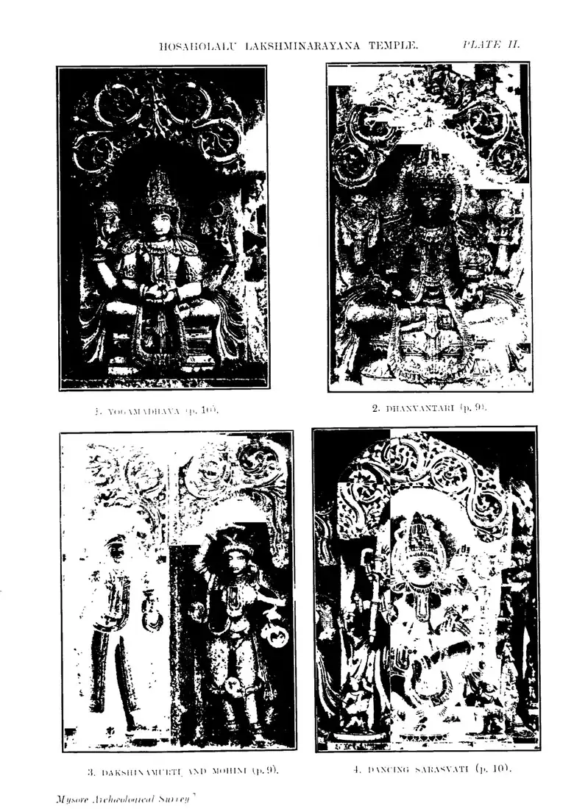
- YOGAMMDHANA (p. 10)
- DHANVANTARI (p. 9)
- DAKSHINAMURTI AND MOHINI (p. 9)
- DANCING SARASVATI (p. 10)
3. (a) Amaravīranārāyaṇa, also called Paravāsudēva, seated in sukhāsana in the coils of Anaṅta.
(b) Kēšava standing with consort admiring herself in a mirror.
(c) Sarasvatī dancing with drummer to left.
4. (a) Brahma standing, bearded (rosary, pāša, ladels and kalaša).
(b) Nārāyaṇa.
(c) Lakshmīnārāyaṇa in sukhāsana with attendent group.
- (d) Mādhava with Mōhinī to left.
(e) Lakshmī standing (padma, chakra, śaṅkha, kalaša).
5. (a) Pārvatī dancing with Gaṇēša to right and Kumāra to left. (Six hands : rosary, goad, svargahasta, pāša, lambahasta, phala.)
(b) Gōvinda.
(c) Lakshmīnārāyaṇa seated.
6. (a) Vishṇu.
(b) Madhusūdhana.
(c) Indra and Śachī on Airāvata going forth to defend the Pārijātā.
(d) Kṛishṇa and Satyabhāmā, borne by Garuḍa, give fight to retain the Pārijātā.
(e) Trivikrama.
(f) Vāmana.
7. (a) Gōvardhanadhāri—well worked.
(b) Two-handed Vishṇu (Dhanvantari?) seated in padmāsana with a bowl of sweets in the right hand and kalaša in the left—in field chakra to right and śaṅkha to left. (Pl. II, 2.)
(c) Mōhinī dancing with Dakshināmūrti admiring her. The latter wears kullāvi, long coat, goad, and bowl with chakra. (Pl. II, 3.)
(d) Śrīdhara with Garuḍa to his right.
8. SOUTH NICHE.
This structure which must have been built along with the original temple itself has above the mythological frieze a row of large images, the makaras and swans being omitted. The niche has two stories with the usual tower on top.
(a) Two-handed Pāṇduraṅga faces east with his hands akimbo holding: right : padma ; left : conch.
It is most interesting to find an image of Pāṇduraṅga here.
(b) Niches vacant.
(c) Yōgānarasimha with Kōdaṇḍarāma and Lakshmaṇa to the left.
9. (a) Hṛishikēša.
(b) Padmanābha.
(c) Vēṇugōpāla.
2 (d) Šāradā--dancing (with pustaka in one of her hands). Pl. II, 4.
(e) Dāmōdara.
10. WEST NICHE.
(a) Pārvatī seated.
(b) Niches vacant.
(c) Brahma standing with Šāradā to left.
11. (a) Saṅkarshaṇa.
(b) Šāradā.
(c) Bhairava : 6 hands : sword, chakra, trišūla, đamaruga, śaṅkha, bowl and head).
(d) Vāsudēva.
12. NORTH NICHE.
(a) Pārvatī seated.
(b) Both niches vacant.
(c) Gaṇēśa dancing with accompaniments.
13. (a) Pradyumna.
(b) Vēṇugōpāla.
(c) Mahālakshmī dancing with accompaniments (eight hands : abha-yahasta, padma, chakra, svargahasta, śaṅkha, lambahasta, phala, dāna —To her right in the corner are two monkeys fighting for a fruit.
14. (a) Aniruddha.
(b) Purushōttama.
(c) Mahishāsuramardinī with lion on pedestal.
(d) Yōganārāyaṇa. (Pl. II, 1.)
(e) Adhōkshaja.
(f) Narasimha : standing.
(g) Achyuta.
15. (a) Lakshmīnārāyaṇa in sukhāsana.
(b) Janārdana.
(c) Kāļiṅgamardana with the river Yamunā on the pedestal. To his left is Mōhinī molested by a monkey.
16. (a) Durgā (as Vaishṇavī) standing with goblins on each side. (Eight hands: sword, arrow, trident, chakra, śaṅkha, đamaruga, bowl and head).
(b) Upēndra (Šaṅkha, gadā, padma, chakra). These attitudes are of Śrī Kṛishṇa (artist's mistake); for Upēndra padma and chakra shall be interchanged.
(c) Lakshmīnārāyaṇa in sukhāsana.
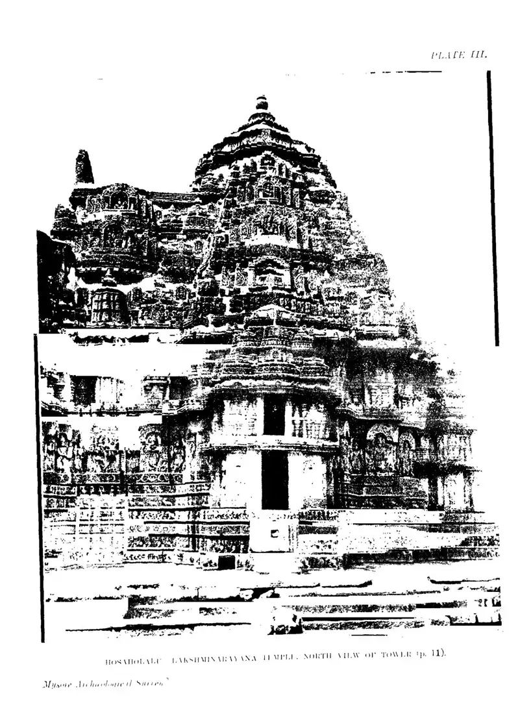
- HOSAHOLALU - LAKSHMINARAYANA HIMPEL, NORTH VIEW OF TOWER (p. 11)
Cited in the text: p. 11 ↩
(d) Hari—to his left a lady is admiring herself in a mirror ; while to his right another lady is listening to a parrot.
(e) Bali making offerings to Vāmana.
17. (a) Trivikrama with leg lifted up to the Brahmalōka and the river Ganges flowing down on the head of a yōgi, presumably Śiva.
(b) Śrī Kṛishṇa standing, four handed.
(c) Lakshmīnarasimha in sukhāsana with boy Prahlāda praying. (End of large images.)
Above the large figures is a cornice running round the temple shaped like eaves with kīrtimukhas and beaded pendants. A row of turrets borne on single or double pilasters and surmounted by round kalaśas is found further up. Under the canopies are usually seated figures of Yakshas or Yakshiṇis with an obscene group or a lady at dance or toilet, here and there. These turrets are rather simple compared with those at Sōmanāthapūr.
Above the row of turrets is a row of eaves of the usual type without any imitations of timber work on the under surface. Above the eaves is the old stone parapet composed of two rows of cornices and a row made up of śikharas, kīrtimukhas and niches. These niches contain mostly figures of Yakshas and Yakshiṇis. The old parapet is now surmounted by a recent wall of brick and mortar.
It appears that nearly 35 years ago the roof of the temple which was leaky was repaired. On that occasion it was discovered that the roof over the navaraṅga was double and hollow, while the main tower was also hollow and could be entered from the east through a narrow low passage.
The temple has only one tower and that over the main cell. (Pl. III.) The structure is in the shape of a sixteen-pointed star, like the main cell itself and is intact with śikhara, kalaśa, etc. The tower has of course its usual tiers bearing kīrtimukhas on the south, west and north sides with small images in them. These figures are: south—Kṛishṇa dancing, Sūrya; west—Lakshmī dancing and Lakshmī seated.
The tower has the usual projection over the sukhanāsi on which the following sculptures are found :—
South : Saṭa fighting two lions, Lakshmīnārāyaṇa and Kālīngamardana.
North : Dancing group : Lakshmīnārāyaṇa, Amaranārāyaṇa.
Front ; East : six-handed Kṛishṇa dancing (abhaya, śaṅkha, svargahasta, chakra, lambahasta, and dānahasta).
Below it is a group of Lakshmīnārāyaṇa in sukhāsana.
Further is a Hayagrīva.
The mukhamaṇṭapa is a rough modern structure of granite built about two generations ago. The navaraṅga doorway which is now covered over with a thick coat of chunām has a well worked lintel. In its centre is standing Vishnu and on either side of him are Saṭa and dancing groups with warriors and lions destroying elephants. Above the cornice is a group with perhaps dancing Kṛishṇa in the centre. The chunām has to be carefully cleaned for further study.
The navaraṅga has nine aṅkaṇas with an extra aṅkaṇa near the east door and narrow jagali platforms or stone benches on either side. It has nothing remarkable except its fine pillars and ceilings. The 'jagalis' are now used as store rooms. These should be avoided as soon as a regular store room is built.
Against the west wall of the navaraṅga are two niches with five stone towers above them. In the south niche stands an image of Gaṇapati (tusk, aṅkuśa, pāṣa and apūpa). In the north] niche is Mahishāsuralardinī. Both the images are now covered over with wax owing to pouring of oil, etc.
The pillars on the main square of the main navaraṅga are of the usual round lathe-turned type with fine beaded work. The pillars next to the navaraṅga doorway are star-shaped and of 16 points while the others are 48 pointed. The capitals of the navaraṅga pillars, however, deserve special notice. They have mostly groups of dancing ladies with accompaniments. Some of the ladies however are in interesting poses like the madanikā figures of Belūr and in one place Kālīngamardana takes the place of the dancer. Below the capitals is a fine scroll work and a monkey in one of the convolutions on the north-west pillar is much admired locally. In the corners of the capitals are lions slaying elephants.
All the ten navaraṅga ceilings are domed bhuvanēśvaris, finely planned and executed. They resemble very much the ceilings of Sōmanāthapūr. The chief features of the ceilings are noted here commencing from the doorway in pradakshiṇa order :
(1) Above the row of Dikpālakas are rows of lions and turrets and of Yakshas. The ribs of the dome are joined by circular rafters and below the central pendent bud is a swan with its head turned back.
(2) Circular.
(3) Star-shaped.
(4) Circular.
(5) Curved Śrī-Chakra ; fine design.
(6) Octagonal.
(7) Square with interlaced band.
(8) Circular.
(9) Circular.
(10) Circular. Below the pendent drop is a small round panel with Kālīngamardana.
The south cell has a fine doorway with dvārapālas below, and pilasters in high relief. The lintel has Vēņugōpāla supported by the usual Saļa and dancing groups. Above the cornice are seven turrets with intervening lions. The cell itself has nothing remarkable. The image of Vēņugōpala which was formerly on its Garuđa pedestal is said to have been removed to Kannambāđi. In its place there is now a group of utsavamūrtis with Janārdana in the centre having a consort on each side. The metal images are fine and the kirīta of Janārdana has a large but loose top, shaped like the vairamuđi. The cell roof is flat
The west sukhanāsi doorway is similar to the doorways of the other two cells with Nārāyaṇa on the lintel. The sukhanāsi has nothing remarkable in it. The garbhagriha doorway is also similar to the sukhanāsi doorway but the image on the lintel is only half carved. Inside the main cell on the Garuđa pedestal stands the image of Nārāyaṇa, 41\frac{1}{2}' high (šankha, padma, gadā, chakra). The image is fine and on the arch are the usual ten avatāras. There are three small chambers adjoining this cell on the south, west and north.
The north cell is very similar to the south one with Lakshmīnarasimha instead of Vēņugōpāla on the lintel stone. Inside the cell is found a fine image of Lakshmīnarasimha, an original Hoysaļa piece. It is much covered over with wax and oil. As usual, the ten avatāras appear on the tōraṇa.
Part II: Study of Ancient Monuments › HosaholaluOther Buildings in the village
Basti
Hariharēsvara Temple; Āñjanēya Temple; Fort and East Gate; Conservation
No heading in the body: this section starts at its printed page (13).
The Basti is a small structure about 100 yards to the north-east of the main temple. Its garbhagriha is of soap-stone and was constructed in 1118 A. D. The navaraņga and the rest of the building are recent additions. In the main cell are now kept five small images: three of Pāršvanātha, one of Anantanātha and one of the 24 Tirthańkaras. Of these the three smaller ones viz : the standing figures of Pāršvanātha, Anantanātha and one of the 24 Tirthańkaras appear to be of the Hoysaļa period, while the others are of modern workmanship. In the navaraņga are the corresponding Yaksha and Yakshiṇi, viz : Dharaṇīndra and Padmāvatī, which appear to be old.
The Hariharēśvara temple which is now completely ruined has a broken figure of Harihara standing with trident in the right hand, and
Hariharesvara Temple. šańkha in the left, the remaining two hands béing broken.
The image is fine and was in good condition in 1915. Now it is broken and lies under heavy overgrowth. It should be removed and preserved in the mukhamaṇtapa of the Lakshunīnārāyaṇa temple. It was probably built at the same time as the latter by an officer whose name or whose father's name was probably Harihara. The Vishnu image mentioned in the report for 1915 is now missing. To its north-east is an old pond called Okkaraṇe kolā.
The Āñjaneya temple is a recent structure of about the 17th century A. D.
The image is a relief of the usual rude Vijayanagar type showing Hanumān treading on a rākshasa. In front stands a granite Garuḍa pillar, about 25 feet high with a tapering fluted shaft, and bearing Garuḍa, Hanumān, Nāga yantra and vadagalaināma on its base.
Around the town even now runs a fort wall made up of large roundish stones roughly split into two and laid one upon another sometimes in the cyclopean way. It appears to be a Hoysalā structure which might have been repaired and altered in the late Vijayanagar days. It appears to have had a gate directly to the east of the Nārāyaṇa temple. In all, the fort is said to have had seven gates, of which two were large. The east one will, after repairing, be used as the official entrance to the village and a park laid out.
An estimate for putting up a compound wall with a gate and two rooms for the Nārāyaṇa temple was sanctioned in 1927. It is high
Conservation. time that the neighbouring houses are acquired and the compound wall is put up. The rooms which are meant for the Pākaśālā and the store-room should be built at the south-east and north-east corners respectively and not on the west. The village is in a very dirty condition and the approach to and the neighbourhood of the temple should be kept clean. The present pākaśālā and its passage should be knocked down very early and the soap-stone railing pieces which are lying around the platform should be restored to their places in front of the doorway, those illustrating the story of Krishṇa and the Yamala trees being placed to its south.
The pavement in the platform should be reset and cement pointed.
The watchman of the temple who now gets Rs. 2 only may be given Rs. 5 and strictly warned to keep the temple premises clean and carefully, by slow degrees, remove the chunām and wax from its sculptures. It is preferable to appoint a working class man for this purpose.
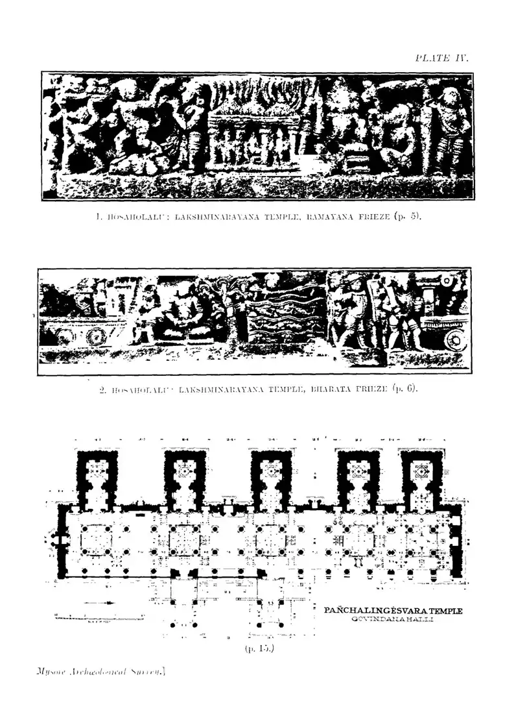
- HOSAHOLALU: LAKSHMINARAYANA TEMPLE, RAMAYANA FRIEZE (p. 5)
- HOSAHOLALU: LAKSHMINARAYANA TEMPLE, BHLARATA FRIEZE (p. 6)
Part II: Study of Ancient MonumentsGōvindanahalli
Pañchalingēsvara Temple
Situation; General Description; History; Outer view; etc
Gōvindanahalļi is a small village about four miles to the north-west of Kikkēri in the Krīshņarājpet taluk of the Mysore District. The nearest Railway Station is Mandagere on the Mysore-Arsikere line on the bank of the river Hēmāvatī. We must cross the river here to reach the village, and a boat is always available for the convenience of passengers.
Situation. The village was once flourishing and famous for its breed of milch-cows. Its archæological importance at present is due to the fine temple it contains. The Pañchalingēšvara temple situated in the village is a good specimen of the Hoysaļa style and belongs to the Dođđagaddavalļi class of temples. It contains five garbhagrīhas or cells (Pl. IV, 3) and excepting the ruined temple of the same name at Sōmanāthpūr in the T.-Narsipur taluk, this is perhaps the only example of a quintuple temple in the Hoysaļa style of architecture. These garbhagrīhas are all of the same size (7'—6" × 6'—6") and arranged in one line facing the east. In front of each of the cells there is a sukhanāsi measuring 6'—6" × 6'—6", while each of the navaraņgas measures 18'—0". The first four navaraņgas are joined together by three connecting corridors, each about 7'—6" wide and the fifth one is directly attached to the fourth. A long hall measuring 120'—0" × 20' is thus formed from one end of the structure to the other. The temple has not been raised on a platform. There are two entrance doorways to it, one opposite the second and the other opposite the third cell. Two porches are built in front of these entrances, each with a stone Nandi in the centre and a flight of steps on either side.
History. The big inscription stone in the connecting corridor between the first and the second cell does not refer to the construction of the temple but to the grant of some villages to Brahmans by two generals of the Hoysaļa king Sōmēšvara I in 1237 A.D., Gōvindanahalļi being apparently one of them. There is, however, a clue available within the temple itself which affords sufficient evidence for fixing its date. On the pedestals of the two dvārapālas placed at the sides of the entrance to the navaraņga, the words “Rūvāri Mallitamma”, sculptor Mallitamma, are carved. This name is also met with below many images of the famous temples at Nuggihalļi and Sōmanāthapur, which are dated 1249 and 1268 A.D., respectively. It is possible that this temple was constructed somewhat earlier, when the great sculptor was yet a young man.
In the structure itself even the casual observer is sure to notice the want of symmetry. It would be difficult to explain why entrances and porches should have been constructed in front of the second and third cells, while the first cell on the one side and the fourth and fifth ones on the other have no such entrances and porches. But an entry into the temple and a closer examination of the several portions of the structure afford a solution to the question. The temple seems to have consisted originally of only four cells, the last cell to the north having been a later addition or, at any rate, an after-thought. This is borne out by the fact that the temple without the last cell would be quite symmetrical in every respect. Further the connecting corridor which is seen between every two navarangas is absent between the fourth and fifth navarangas, which fact goes to show that the last one did not apparently form part of the original scheme. The arrangement, too, of the ceilings in the first four cells differs from that in the last: in the case of the first four cells, only two of the ceilings are deep ones, and all the others are flat; while the ceilings of the last cell are all deep ones. Moreover, all the free standing pillars of the navaranga are plain blocks of stone kept square to a height of 3' and then rounded up to the capital as in the Pañchalingēsvara temple at Sōmanāthapur, and they stand on pedestals which are also plain; while the pilasters along the wall are carved from top to bottom. The two pillars between the fourth and fifth navarangas are, on the other hand, made up of two half pillars after the pilasters mentioned above with rubble masonry hearting which apparently formed part of a wall that existed before. There is also no carving on the outer surface of the screen wall in front of the last cell, while those in front of the other cells have figures carved on them. Similarly, on the three other sides of the same cell rude blocks of stone intended for figure sculpture are left uncarved. These give us further evidence of its hasty addition to the original structure.
The outer wall is divided into panels by small shaft-like pilasters and in each such panel is carved a small turret with either a single or double miniature column supporting it. Images are carved below some of these turrets. Excepting these turrets and images the rest of the wall is uncarved and it is this comparative plainness of the walls that gives a dignity to the building and adds additional interest to the few carvings that are on it.
The basement which is comparatively plain is 3'—9' high from the ground level and carved with the usual moulds. The stones of the towers and of the parapet walls above the drip-stone consist of uncarved blocks of stones and their rude jointing in mortar gives an impression of their reconstruction at some later time. The east facade of the temple consists of eighteen bays and was perhaps quite open originally but is now enclosed by a thin perforated screen wall which sheds a subdued light inside sufficiently strong to illuminate the long hall.
Unlike the temples at Sõmanäthpur, Halebiđ and Bêlür, very few figures are carved on the outer walls of the temple. Each panel has above it a small turret carved and supported either by one or two small indented square-shaped pilasters. Below some of these turrets figures of gods and goddesses are carved at regular intervals. They are, each of them, about 1' high and mostly damaged and covered over with chunăm. At the south end of the outer face of the east wall a fine figure of Gaṇapati surmounted by a beautiful turret is carved and another of Mahishāsuramardinī is similarly carved at the north end. Female figures with canopies are carved on the large pilasters supporting the beams. Between Gaṇapati and the first porch twelve of the twenty-four mürtis or forms of Vishnu with their names below are carved. Between the second porch and the figure of Mahishāsuramardinī at the north end, an attempt has been made to carve the remaining twelve forms of Vishnu, nine of which, however, are fully carved.
Between every two of the first four cells there is a carved niche on the outer surface of the corridor, with female chauri-bearers at the sides. Similarly there is a niche in the centre of the outer surface of the south wall corresponding to the one that is inside the navaraṅga. All the niches are now empty.
The following images are seen in order on the walls of the temple commencing from the beginning of the south wall:
Wall Images
First cell : South Wall. —Paravāsudēva; Pārvatī standing (padma, pāša, añkuśa and phala); Indra and Śachī on Airāvata, going forth to defend Pārijāta; Garuđa carrying Satyabhāmā and Krīshṇa; Bali making gift to Vāmana; Trivikrama; Kālīngamardana; standing Pārvatī (?) with four hands; Narasimha slaying Hiraṇyakaśipu; Prahlāda accompanied by a male and female figure; Laksmī with Garuđa who has his hands folded; Nārada;
West and north walls : —Tāṇdavēsvara flanked by Gaṇapati and Brahma to the left and by Subrahmaṇya and Vishnu to the right; Lakshmī-nārāyaṇa in sukhāsana flanked by dancing Pārvatī with Vēnugōpāla to left and Śāradā with Mahishāsuramardinī to right.
Outside the corridor on the west there is a vacant niche with a chāmaradhārinī on each side.
Second cell : South Wall : —Bhairava; Durgā; Rāvaṇa lifting up the Kailāsa; dancing Gaṇapati and dancing Sarasvatī;
West Wall : —Gōvardhanadhāri, Rāma and Lakshmaṇa flanked by devotees and Hanumān;
North Wall : —Two monkeys fighting for a fruit; Durgā seated with a drummer on each side, a dancing female figure;
Corridor Wall : —Vacant niche.
3
Images in the Navaranga
Sukhanāsi Doorways; Ceilings
No heading in the body: this section starts at its printed page (18).
Third cell : South Wall :— Harihara ; Paravāsudēva flanked by a consort on each side : Lakshmīnarasimha ;
West Wall :— Yōgānarasimha ; Vēnugōpāla ; Umāmahēšvara ; a female chauri-bearer ; Nārāyaṇa ;
North Wall :— Dancing Sarasvatī ; a dancing female figure ; Varāha lifting up the earth ; a warrior armed with a sword and a shield ; Garuḍa ;
Corridor Wall :— Vacant niche.
Fourth cell : South Wall :— Viṭthala with hands akimbo carrying a small bag in each hand ; Vēnugōpāla ; Mahishāsuramardinī ; Kāliyamardana ; Arjuna shooting the fish ;
West Wall :— A female figure ; Harihara with Garuḍa and Nandi on pedestal ; Gajāsuramardana ; Umāmahēšvara ; standing Pārvatī flanked by Gaṇapati and Subrahmaṇya ;
North Wall :— A female figure ; Brahma ; Umāmahēšvara seated on Naṇdi ; Kēšava ; Mōhinī molested by monkey ;
Corridor Wall :— No niche.
Fifth Cell :— Most of the blocks intended for figure sculptures are left uncarved.
South Wall :— Narasimha killing Hiraṇyakaśipu ; Prahlāda ; Dakshiṇamūrti with hood, long coat and danḍa (staff) ;
West Wall :— Mōhinī ;
North Wall :— Kālabhairava ; Tāṇḍavēšvara ; Yōganārāyaṇa ;
East Wall :— South portion : Sanikarshaṇa ; Garuḍa ; Vāsudēva ; lady receiving a bunch of flowers ; Pradyumna ; Aniruddha ; Purushōttama ; drummer ; Adhōkshaja ; standing Narasimha ; drummer ; lady with parrot ; Hari ; three forms of Vishṇu unworked ; Śrī Krīshṇa ; lady with mirror ; Mahishāsuramardinī ;
East wall : Central part from south-east door northward :— Ten avatāras of Vishṇu ; Fish ; Tortoise ; Anthropoid Varāha ; lady dressing her hair ; Narasimha standing ; Vāmana : Paraśurāma ; Śrī Rāma ; lady plucking flowers ; Halāyudha ; Buddha seated ; Kalki on horse back ;
East wall : South Section :— From northward : (Intervening Garuḍas are omitted)—Gaṇeśā, lady with mirror ; Kēšava ; Nārāyaṇa ; lady with parrot ; Mādhava ; Gōvinda ; Vishṇu ; lady with mirror ; Madhusūdhana ; Trivikrama ; lady with flowers ; Vāmana ; Śrīdhara ; Hrīśhikēśa ; lady with child on hip ; Padmanābha ; Dāmōdara.
These figures have their names carved on their pedestals.
There are in all seventeen niches in the temple of which thirteen are on the inner side and four on the outer side of the walls of the Images in the Navaranga . temple. Of the niches that are inside, two are on either side of each sukhanāsi doorway, one each in the centre of the north and south walls, and one, the biggest of the lot, between the second and third cells forming, as it were, the central axis of the original four-cell scheme. The niche that should have been to the left of the fifth cell is built into the north wall. The images in the navaraṅga are, from the south-east clockwise:—
Bull of the first cell.
Niche 1. Bhairava (recent) on a swan-pedestal of Śāradā; the seven Mothers
„ 2. Gaṇēśa
„ 3. Mahishāsuramardinī on lion pedestal;
„ 4. Śāradā, Nāgas, Gaṇēśa (under Niche 4)
„ 5. Mahishāsuramardinī
„ 6. (Central)-Umāmahēśvara
„ 7. Gaṇēśa
„ 8. Mahishāsuramardinī;
Seven Mothers, Nāgas
„ 9. Gaṇēśa;
„ 10. Mahishāsuramardinī
„ 11. Gaṇēśa;
Śāradā
„ 12. Mahishāsuramardinī
„ 13. Subrahmanya
Bhairava, Mahishāsuramardinī, Nandi (4th cell), Nañdi (5th cell); and another recent Sūrya pedestal lying in the north-east doorway.
✓The Saptamātrikā images are very good examples of figure sculpture and are perfect in outline and delicacy of detail.
Śaiva dvārapālas are placed on either side of the entrance doorways in the porches. They are fairly large in size, being about 4' 6" in height and are fair pieces of workmanship. The graceful pose of the body and the clear cut of the features and the several ornaments used mark them out as the work of a skilful artizan. On the pedestals the sculptor has signed himself as Rūvāri Mallitamma. On the panels above the lintels are Tāṇḍavēśvara groups covered over with chunām.
The sukhanāsi doorways are the chief features of attraction in this temple as in many other Hoysala buildings. One of them is flanked by two dwarf dvārapālas above either of whom runs a moulded shaft supporting the projected chhajja or drip-stone above the opening. The heavy projected stone of the door-lintel has Umāmahēśvara carved on it. Between the ceiling and the drip-stone is a frieze containing dancing Ēśvara with Nandis and the parivāra-dīvatas flanked by makaras. A small perforated screen is on either side of the doorway.
There are three different kinds of ceilings in the temple. The ceilings over the five garbhagrīhas and the sukhanāsis and the central ceiling of each navaraṅga are deep, made up of two
Ceilings.
squares placed cornerwise with a lotus flower in the centre. All the ceilings of the navaraṅga in front of the fifth cell are also deep with lotus buds in the centre. All the remaining ceilings are flat and consist of slabs of stones some of which viz. , those above the connecting corridors are uncarved, while others are divided either into four or nine squares by moulded bands into each of which full blown lotus flowers are carved. The disposition of flat and deep ceilings is well thought out and uniform so far as the first four navarangas are concerned. But the ceilings themselves are comparatively plain.
About a hundred yards to the west-south-west of the Pañchaliṅga temple, in the centre of the old fort (now disappeared) is a simple, plain and small Hoysala temple of Vishnu as Vēnugōpāla, the image showing poor workmanship. To the north of the Pañchaliṅga temple is a Liṅga temple of Hoysala times and also a tinv temple to its south-east where the old fort gate must have stood.
Part II: Study of Ancient Monuments › GōvindanahalliOther Temples
Part II: Study of Ancient MonumentsNuggihalli
Lakshminarasimha Temple
History; General Description; Platform; Elephant Frieze; Horsemen Frieze; Scroll Frieze; Mythological Frieze; Makara Frieze; Swans Frieze; Large Wall Images
(Pl. V.)
Nuggihaļļi is a village 12 miles north-east of Channarāyapatṇa. It was once a flourishing town as seen from the inscription Ch. 238.
History. The record states that in the reign of Sōmēsvara Hoysala Bommaṇṇa Daṇṇāyaka made Nuggihaļļi into an agrahāra under the name Sōmanāthapura and got installed in śaka 1168 Parābhava and Vijaya or 1246 A.D. the gods Kēśava, Narasiniha and Gōpāla and in 1249 A.D. Kilaka got installed Sadāśiva. It will thus be seen that the original temple was a Hoysala structure built about 20 years before that of Sōmanāthapur in the T.-Narasipur Taluk. At a later date, very probably during the Vijayanagar period, the present navaraṅga with its square granite pillars was constructed in front of the original porch which has lathe-turned soap-stone pillars and complete eaves. The hajāra in front and the pātālānkaṇa with 18 sided high fluted pillars are possibly still later constructions belonging to somewhere about 1700 A.D. The south and north towers are also of about the same date and are of brick and mortar. The temple is generally known as the Lakshmīnarasimha temple though the main god is Kēśava.
If we omit from our account the later accretions, (see Pl. VI) the original Hoysala temple appears to have had a mahādvāra or ' upparige ' of soap-stone supported by plain round pillars. Probably as at Beļavāđi and elsewhere in front
General Description.
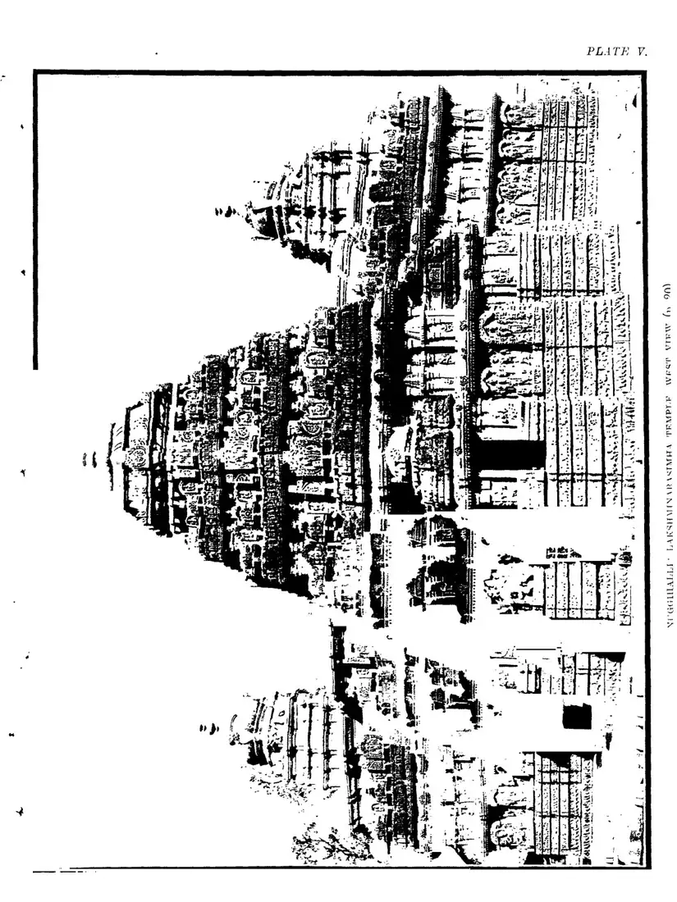
- NOGGHIALLET · LAKSHINARISTHA TEMPLE · WESWOTH (6) 90)
Cited in the text: p. 20 ↩
of the mahādvāra stood the two fine elephants which are now in front of the hajāra . The elephants are well carved and a horseman is cantering on either side of the trunk of each. Possibly on either side of the mahādvāra there was a mere prākāra wall which enclosed an oblong courtyard as at Beļavāđi. In the west part of the courtyard stood a platform about four feet high on which the temple was raised. This Hoysaļa temple is in size, quality and plan very similar to that of Hosahoļalu, the main differences being the following :—
(1) The main cell on its outside is square in plan and is, except for the sukhanāsi and the outer niches, almost of the same size as the other two cells.
(2) The inner jagali and extra ankaṇa near the navaraṅga are absent, while there is a longish porch functioning as a mukhamanṭapa in front of the navaraṅga. Originally only the main cell appears to have had a tower. To make up the balance two recent masonry towers appear to have been built in the Pāllegār days. The want of symmetry between these and the main tower of stone is clearly seen.
(3) The sculptures of this Kēsava temple are of a high order and of the same class as those of Hosahoļalu and Sōmanāthapur and are probably the work of Mallitamma and his colleagues, the former having signed his name in all the three places.
The platform is almost of the same plan as the main temple including its pillared porch but it has neither elephants nor images supporting it.
Platform.
As usual, around the bottom of the temple wall runs a frieze of elephants which has nothing remarkable about it. The animals are
Elephant Frieze.
caparisoned and generally have two exaggeratedly small men riding on the back of each. The animals are shown playing with their trunks, fighting each other or enemies or busy with their trunks. Many of them have heads too small for their size and the frieze is rather over-crowded with the animals.
The exterior of the temple is here divided into 19 faces as in the plan and the most interesting groups are noted :—
Face 5 .... Elephants wearing armour.
„ 6 .... Fighting each other.
„ 8 .... Two elephants with one head. These occur at most corners.
Above the row of elephants is a frieze of horsemen some of whom are cantering forward, others fighting and still others moving slowly as in a procession. The animals are poorly proportioned, having longish snouts and short thick set legs.
Horsemen Frieze.
Face 5 .... Horses with armour.
„ 15 Lancers charging.
„ 16 Camels with drums.
Next above is a lcng creeper scroll with lion faces in the corners and buds, flowers and monkeys, birds, deer etc., in the convolutions. The frieze is neatly executed.
Scroll Frieze.
Above the scroll a mythological frieze runs round the temple in which only the story of the Bhāgavata is narrated though in great detail.
Mythological Frieze.
Face 1. This is now hidden by the additional structure in the Ālṣvār sannidhi.
2. (a) An upset cart.
(b) Cowherds take offerings of milk and curds to Śrī Krīshṇa.
(c) Krishṇa shows his open mouth to Yaśōdā.
(d) He is scolded by his mother.
3. Cowherds fight with Indra and the Dikpālas.
4. (a) A royal personage falls at the feet of Krīshṇa.
(b) Krishṇa is rocked in a cradle.
(c) Krīshṇa kills Pūtanī.
(d) Krīshṇa kills Śakaṭāsura.
5. (a) He destroys the twin trees and begs for butter.
(b) He dances when given butter which he shares with a cat.
(c) He steals butter.
(d) He is punished by the Gōpīs.
6. (a) He steals butter from carts and from men carrying pots slung (on addes ) across their shoulders.
(b) He plays with the cattle and Rādhā in the groves.
(c) He plays with the cowherds who bring milk and butter for him.
7. (a) The last scene is repeated in detail.
(b) He plays with the cowherds while watching the animals.
SOUTH NICHE.
8. (a) Kālinga attacks him in the Yamunā and is slain.
(b) The cowherds celebrate Krīshṇa's victory by dancing
9. (a) and bring shoulder-loads and cart-loads to Krīshṇa.
(b) Krīshṇa lifts up the Gōvardhana
(c) and Indra begs pardon.
WEST NICHE.
10. (a) Krīshṇa plays on the flute, while the cattle, cowherds and even the gods listen and admire and the girls dance.
11. (a) Krīshṇa teaches philosophy (?) to the Gōpīs.
(b) Rāsakrīdā, the Gōpīs dancing with a Krīshṇa between every two of them.
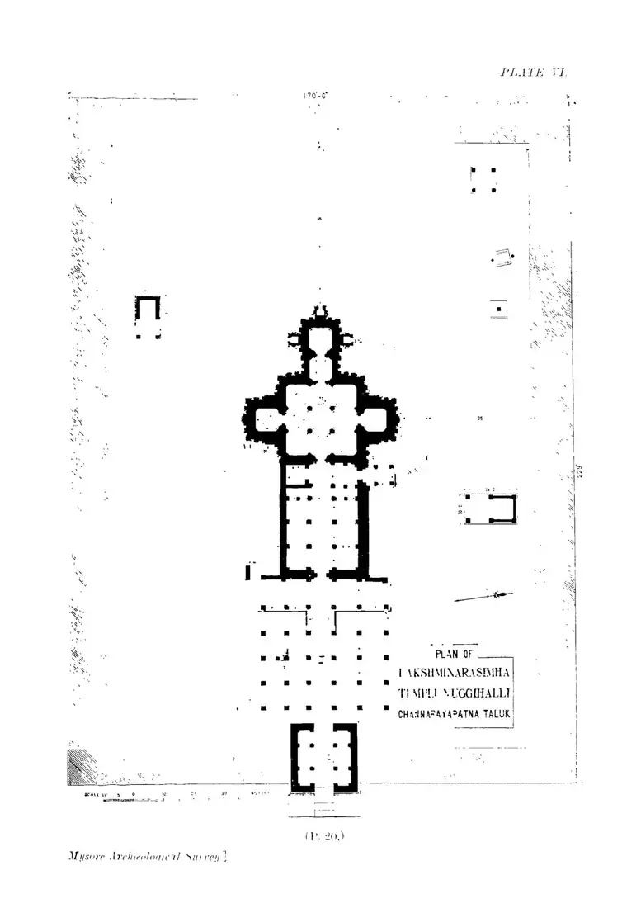
- PLAN OF IAKSHIMINARASMIHA TIMPLI MUGGIHALLI CHANNAPAYAPATNA TALUK (p. 20)
Cited in the text: p. 20 ↩
(c) Krīshṇa runs away with the clothes of the bathing Gōpīs and the latter beg for them.
12. (a) Krīshṇa fights Dhēnukāsura. .
(b) Krīshṇa fights Gardabhāsura.
(c) He is taken out in procession on a chariot.
13. (a) Krīshṇa slays a rākshasa and is taken in procession with Balarāma, the cattle and cowherds preceding him.
14. (a) Yaśōdā brings up Krīshṇa; Domestic scenes like rocking the cradle swung on the tree branches, Yaśōdā and the two boys seated playing with a calf, baby Krīshṇa milching, baby begging for butter etc.
(b) Akrūra starts with Krīshṇa and Balarāma in a chariot for Dvāraka.
(c) Cowherds accompany the chariot with shoulder-loads of milk and butter.
15. (a) Krīshṇa shows viśvarūpa in the Yamunā to Akrūra and others as Paravāsudēva.
(b) The chariot reaches the gates of Dvāraka.
16. (a) The dwarf woman meets Krīshṇa and is cured.
(b) The festival of weapons: the latter are worshipped in a manṭapa.
(c) Krīshṇa fights the rākshasas.
(d) Krīshṇa's coming is reported to Kaṁsa.
17. (a) Kaṁsa commands his wrestlers to attack and destroy Krīshṇa.
(b) Krīshṇa kills the elephant.
(c) He slays the wrestlers.
18. (a) Kaṁsa is surprised at the defeat of his wrestlers.
(b) Kaṁsa is slain by Śrī Krīshṇa.
19. This sculpture is hidden in the wall.
The row of makaras is of the usual type. The animals have no riders.
Makara Frieze.
The swans are well made and are shown in their natural attitudes. In the corners are shown generally two birds beaking one another.
Swans Frieze.
The wall images are of nearly the same size being about 3 feet 3 inches high including the bases and tōraṇas as those at Hosahoļalu and Sōmanāthapur and of very nearly the same make.
Large wall Images.
The pedestals form a broken frieze of scroll work with padmas, Garuđas, lion faces, kirtimukhas, etc., interrupting the continuity according to circumstances. The bases are bold and well executed and have perhaps a better character than the similar ones at the Hoysalēsvara temple at Halēbiđ. The tōraṇas above the figures are mostly composed of creepers, turned and twisted into beautiful shapes as at Hosahoļalu and as on the south cell at Sōmanāthapur. The images have limbs slightly too short and too thick for the height and do not have the light and elegant build of the Bēlūr images since they are in the navatāla measure and not dašatāla ; but they are beautiful and are finely worked. Those on the southern half of the temple were carved by Baichōja of Nandi while those on the north side were made by Mallitamma. Both these sculptors have signed their names in many places. The chief image groups are named hereunder:—
Face 1. (1) Kalpavṛiksha.
(2) Mōhinī with Dakshiṇāmūrti.
(3) Kēšava; imbedded in the wall.
2. (1) Bearded Brahma standing on a fine lotus; to his right is a lady with chāmara.
(2) Nārāyaṇa—The 24 forms of Vishṇu are finely sculptured in order and most of them have their names inscribed on their pedestals in Kannaḍa characters.
(3) Naked Mōhinī dancing with Dakshiṇāmūrti on her right; the latter wears a kullari cap, long coat, and sandals and holds daṇḍa and chakra.
3. (1) Dōlōtsava—A two-handed god and goddess, perhaps Kṛishṇa with consort being swung on a jewelled swing-board hung with ropes from one ornamented beam supported by two plantain trees. From the tree is hanging a bunch of fruits though their stems are more like those of palm trees; monkeys are playing on the tōraṇas.
(2) Rati and Manmatha—A fine group with a horse-headed musician to their right carrying their betel bags (Plate VII, 2).
(3) Mādhava with Lakshmī holding bunches of flowers to his left.
(4) Tāṇḍava-Gaṇapati with 8 hands (tusk, chakra, parašu, svarga-hasta, šaṅkha, padma, lamba-hasta and apūpa); mouse and musical accompaniments below. To his left is a lady with flowers and bowl. A small later shrine is built over Gaṇēša and hides the view. It is ugly and should be removed.
4. (1) Amaranārāyaṇa or Paravāsudēva seated on Ananta. On pedestal, Kannaḍa inscription: “Srī Ādimūrti dēvaranu Nandiya Baichōja māđida kanđirē”. Below the god are Garuḍa, Prahlāda and the gods. To his left stands a goddess with kalaša and chāmara.
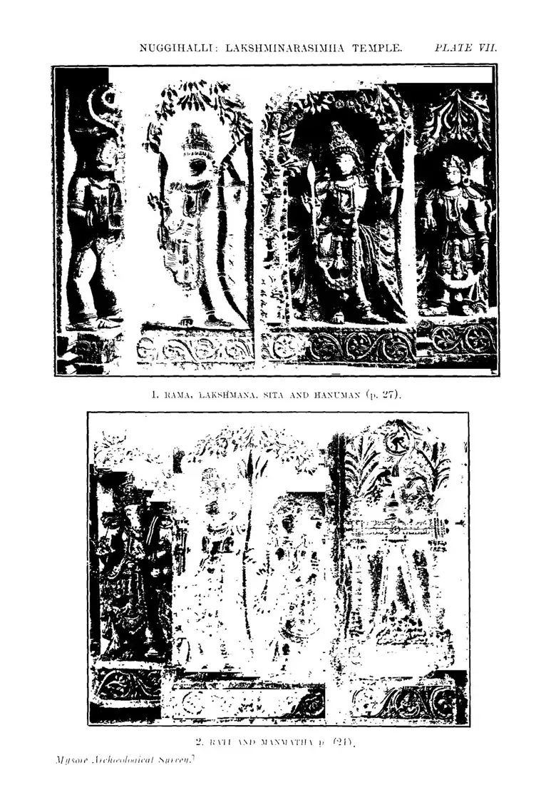
- RAMA, LAKSHMANA, SITA AND HANUMAN (p. 27)
- RVIH AND MANMATHA p. (21)
(2) Gövinda with consort to his right.
(3) Yōganarasimha with two consorts and Garuđa and Prahlāda below
(4) Vishnu with consort.
(5) Varadarāja seated in sukhāsana (abhaya, chakra, śaṅkha, dāna) Kannađa inscription : Allāļapperumāļ.
5. (1) Harihara.
(2) Madhusūdana and his consort ; holds up pāša and kalaśa.
(3) Trivikrama with the river Gaṅgā ; unworked.
(4) Vāmana receiving gift from Bali, with Śukra protesting (to right of Bali).
6. (1) Trivikrama standing with a Nāga-kanyā holding a jewelled necklace to his left.
(2) Bhairava with goblin to his left.
(3) Durgā dancing with skeleton body and 6 hands : a goblin stands to her right.
(4) Vishnu as Vāmana standing.
(5) Śrīdhara.
(6) Two monkeys fighting for a fruit.
7. (1) Gövardhanadhāri a fine group with a Kannađa inscription on the pedestal : “Hari birida ruvāri giri vajradaṇđa viridaprasadi mastakaśūla rūvari Naniya Baichōjamādida ruvāra śrī śrī śrī śrī.” On the tōrana monkeys are playing. To the god's left is a lady admiring her ear-ring in a mirror. (Is it Mōhinī or Lakshmī) ?
(2) Ugranarasimha with Garuđa on left. Lakshmī on right and Prahlāda below.
(3) Hrīshīkēša—Inscription “Rishi Kesa”.
8. SOUTH NICHE (Pl. VIII, 3).
The figures on the niche walls are small but they are included here for continuity.
(1) Varāha—seated with consorts—inscription “Lokarati 5 ke ondu.”
(2) Inside niche—Durgā in sukhāsana. The niches have one storey only.
(3) Narasimha—seated.
9. (1) Padmanābha—standing.
(2) Vēnugōpāla—well worked.
(3) Sūrya with adoring rīshis, accompaniments and guards—A Chhāyā on each side and Aruṇa driving the 7 horses on the pedestal. (Pl. VIII, 2.)
(4) Dāmōdara.
4
10. WEST NICHE.
(1) Nārāyaṇa seated with consorts.
(2) Inside niche—Harihara standing (rosary, trident, chakra, bowl).
Here is also kept a small figure of Chaṇḍikēśa.
(3) Seated goddesses: (a) Pārvatī—(rosary, trident, fruit) inscription—“ Rūvāri Mallitammana bāva (?) Bāgiya ruvāri ”.
(b) Lakshmī seated (rosary, chakra, śaṅkha, gadā).
(c) Śāradā—seated (rosary, daṇḍa, aṅkuśa, kalaśa).
11.
(1) Sankarshaṇa—inscription—“ Sankarusana.”
(2) Indra and Śachī on elephant in the Pārijāta battle.
Inscription—Mallitamma.
(3) Kṛishṇa and Satyabhāmā borne by Garuḍa whose left hand holds the pārijāta branch. The gods are not Kaṣyapa and Vinatā though they are seated one on each shoulder.
(4) Vāsudēva.
12. NORTH NICHE.
(1) Yōganārāyaṇa with Lakshmī on left (padma, aṅkuśa, pāśa, padma ; Inscription—Lakshmī) and Bhūmī on right (padma, aṅkuśa, pāśa and kalaśa).
(2) Inside niche—Śāradā seated.
(3) Hayagrīva seated (yōgamudrā, rosary, pustaka, phala), with Sarasvatī on left and Gaṇēśa on right.
13.
(1) Pradyumna.
(2) Dharaṇī-Varāha.
(3) Vēṇugōpāla (Pl. VIII, 1). This image by Mallitamma may be compared with that by Baichōja on face (9). The former appeasr to be more graceful.
(4) Garuḍa.
14.
(1) Aniruddha with the goddess Ushas on left. The latter is dancing holding her two long braided tresses one in each hand. Ushas appears also with Aniruddha in Hosahoļalu.
(2) Halāyudha.
(3) Purushōttama.
(4) Lakshmī dancing with 8 hands (abhaya, padma, chakra, svarga-hasta, śaṅkha, phala, lamba-hasta, dānahasta).
(On left one drummer, and one with ḍavaṇe on right.)
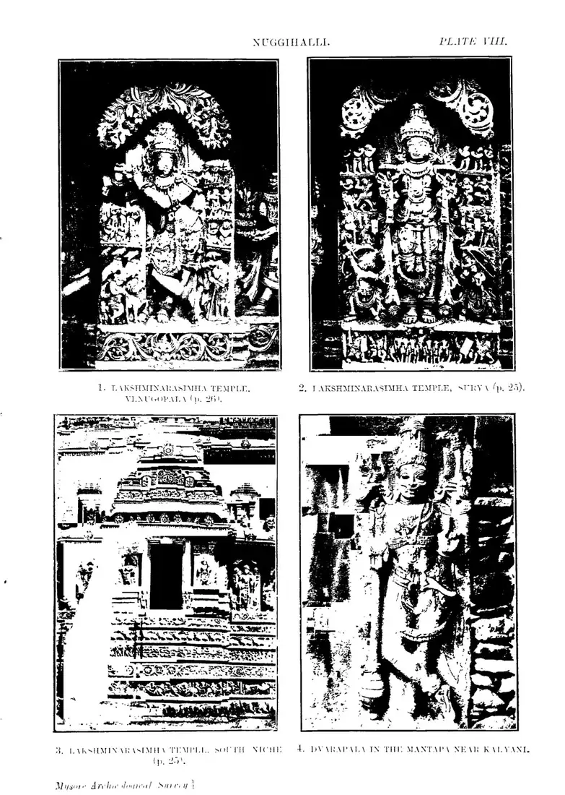
- LAKSHMINARASIMHA TEMPLE VLNUGOPALA (p. 26)
- LAKSHMINARASIMHA TEMPLE, SURYA (p. 25)
- LAKSHMINARASIMHA TEMPLE. SOUTH NICHE (p. 25)
- DVARAPALA IN THE MANTAPA NEAR KALYANI
(5) Mahishāsuramardinī—By Mallitamma.
Inscription—Durgī.
(6) Mōhinī dancing with cobra in her hands and long ringletty hair falling behind her.
(7) Adhōkshaja.
15. (1) Kālingamardana with a Nāginī on each side.
(2) Narasimha standing with lion head.
(3) Arjuna shooting the matsya-yantra with oil bowl below.
Hanuma-dhvaja and Draupadī with garland to left.
16. (1) Lakshmī or Mōhinī—Goddess standing in samabhaṅga with Dakshiṇāmūrti on right (4 hands—phala, gadā, shield and bowl).
(2) Mōhinī molested by monkey.
(3) Achyuta.
(4) Parašurāma.
(5) Lakshmīnārāyaṇa in sukhāsana.
(6) Janārdana.
(7) Mother with child on right hip.
(8) Šāradā dancing (8 hands—rosary, phala, ankuśa, svargahasta, pāša, padma, lamba-hasta, pustaka).
17. (1) Hayagrīva with a fallen rākshasa on the pedestal. (8 hands—arrows, gadā, chakra, sword, šankha, shield, bow, padma.) It is a rare figure. On his right is a lady with a long tailed bird perched on her right hand.
(2) Upēndra.
(3) Kōdaṇḍarāma (Pl. VII, 1) with Lakshmaṇa and Hanumān on right and Sītā on left.
18. (1) Hari.
(2) Two-handed Vishṇu seated in padmāsana holding bowl of sweets in the right hand and kalaša in the left; chakra in field on right, šankha on left, the ten avatāras on the tōraṇa and Garuḍa on pedestal. Inscription: Mallitamma.
19. (1) Šrī Kṛishṇa—Covered with chunām.
(2) Kāmadhēnu with umbrella above, a lady attendant on each side and 5 friezes on pedestal, consisting of elephants, horses, nāgas, kalaśas and canopies. Kāmadhēnu is a rare sculpture.
Above the large images runs a cornice-like-shaped eaves and ornamented with small kīrtimukhas and beaded pendants. It looks as if this cornice originally marked the first floor, the portion above being the second floor. It is possible that when the
Cornice
Small Images under Canopies; Turrets; Eaves; Parapet; Tower; Navaranga; Pillars; Ceilings; South Cell; North Cell; West Cell; Mahādvāra. Conservation
temples came to be constructed of stone, the two floors were reduced to the present miniature size.
Above the cornice is the usual row of pilasters and canopies under which are small seated figures consisting of gods and heavenly beings.
Small Images under The more interesting of these are treated here :—
Canopies.
Face (4) Sūrya with Chhāyā.
(7) Dancing Lakshmī.
(11) to (15) The ten avatāras of Vishṇu and also
Mandara-Parvata with Vāsuki as rope.
(16) Ananṭaṣayana.
Above these small figures is the usual row of turrets with indented square-shaped, star-shaped and multi-turreted plans, but they are not so elaborate as those of Gōvindanahallī and Sōma-nāthapura.
Turrets.
The eaves which are of the usual kind have top ornamentations in the shape of kīrtimukhas and groups of figures, some of which are lions, dancers, monkeys, swans, etc.
Eaves.
Above the eaves is a parapet, more than 4 feet high, made up of rows of larger pilasters whose śikharas and intervening spaces are ornamented with rows of Yakshas and standing forms of Vishṇu. This parapet covers the sides of the hollow roof, a peep into which can be obtained from a hole above the outer north niche.
Parapet.
As stated already the north and south towers which are of brick and mortar are of the seventeenth century or even later workmanship and have been put in to raise the temple to the dignity of a complete trikūṭāchala but they are out of harmony with the main tower and are a positive danger since owing to their weight the outer south and north walls have been pushed out of plumb. It would be advisable to remove them at the earliest opportunity. The main tower, though square in plan, is of soap-stone and typically Hoysalā in design, being composed of three rows of turrets with a stone śikhara on top surmounted by a stone kalaśa. It has the usual projection over the sukhanāsi and it is possible that on it was formerly a Salā group. Its face has a kīrtimukha with Garuḍa in the centre. Below the kīrtimukha is a four-armed Yaksha whose image has been removed from the pedestal, making the sukhanāsi leaky. It should be restored immediately and the joint cement-pointed.
As has been already stated the pātālāṇkaṇa, hajāra and outer navaraṅga of granite pillars are all of later structures. The porch of the outer navaraṅga, however, is a Hoysalā building contemporaneous with the main temple. It has four
Navaranga.
round lathe-turned pillars and is remarkable for the absence of jagali , and for its complete eaves. Its Bhuvanēśvari or dome has a row of images and lions below with circular rafters. One aṅkaṇa on its south has been converted into the Ālvar's sannidhi in which are now placed late Vijayanagar period images of Rāmānuja and others.
The navaraṅga doorway has an interesting lintel on which is a seated Sarasvatī playing on a viṇā, instead of the usual Gajalakshmī.
The navaraṅga is of nine aṅkaṇas only without any 'jagali' or doorway aṅkaṇa as at Hosahoļalu. Though Gaṇapati and Mahishāsuramardinī are placed in its western wall, they have no niches to house them.
There are only 4 pillars in the navaraṅga of the round lathe-turned type and they are not so elaborately ornamented as those at Hosahoļalu. The wall pilasters however are of the usual indented square shape.
There are 9 ceilings, the more remarkable of which are here named commencing pradakshiṇa-wise from the navaraṅga doorway:
Ceilings.
1. Star-shaped gallery and rafters shaped like a star with twelve points.
2. Similar with obtuse angles.
3. Circular rafters.
4. Rounded Śrīchakra pattern with indented corners.
5. Flat roofed with Yaksha panels, and the 8 Dikpālakas below.
6. Square with inset octagon and interlaced band.
7. Star-shaped, with eight points.
8. Circular rafters with Dikpālas below.
9. Central Ceiling : Dikpālas below; then lions frieze; then star-shaped gallery; circular rafters above.
The south cell has no sukhanāsi and has on the lintel Amaranārāyaṇa. Most of the doorway is covered with chunām which ought to be cleaned. The cell has on a Garuđa pedestal a fine Vēnugōpāla whose beauty is marred by a thick coating of wax, which ought to be removed. The image is similar to that of Sōmanāthapur, though smaller and less elaborate. Above is a deep padma ceiling.
South Cell.
The north cell is similar to the south cell but has on the lintel of the doorway Lakshmīnarasimha and above the cornice between makaras Yōganarasimha. Inside the cell on a Garuđa pedestal is Lakshmīnarasimha seated in sukhāsana. The image is similar to that of Hosahoļalu.
North Cell.
The sukhanāsi doorway which is covered over with chunām has seated Lakshmī on the lintel and an uncertain figure between two hainsas above the cornice. As in the other cells, here also is a deep padma ceiling. On the main garbhagriha doorway the lintel has Lakshmīnārāyaṇa with Kēšava above the cornice. The main cell which has a small safe room in the west wall has on a Garuđa pedestal an image of Kēšava, about 4½ feet high, whose beauty also is marred by wax. All the three chief images have the ten avatāras on the tōraṇas.
The mahādvāra is a Hoysaļa structure of soap-stone somewhat altered by more recent additions. It has the plain round pillars of the Hoysaļa period.
Mahadvara.
1. The compound wall is to be repaired and cleared of trees and levelled.
2. The platform is to be reset with slot and cement pointed.
Conservation.
3. The navaraṅga walls and sculptured portions are to be cleaned of chunām and wax, as also the main images.
4. The holes in the walls, especially the one to the north of the central one are to be closed and the roof given a fresh cement coating.
5. The Gaṇēša figure in front of the main tower is to be reset.
6. If the engineers find that the north and south towers are too heavy for the walls, these may be removed; otherwise they may remain.
7. The ground in front of the mahādvāra should be acquired and cleaned.
8. The parapet above the mahādvāra may be removed, opening the main tower to view.
9. The Āļvār sannidhi may be opened up and provided with a door on the south.
10. The inner navaraṅga is very dark. The question of opening the top of the tower projection of the sukhanāsi providing with a glass roof without disturbing the Garuđa panel, may be considered.
Part II: Study of Ancient Monuments › NuggihalliSadāśiva Temple
Conservation
About 100 yards to the east north-east of the Kēšava temple stands the temple of Sadāśiva consecrated in 1249 A.D. It has the old Hoysaļa structure intact but extensive additions have been made in the late Vijayanagar and Pāllēgar periods. It probably had an upparige facing south which has now disappeared except for two soap-stone elephants now in the front hajāra .
The mahādvāra is a tall but towerless granite structure of the late Vijayanagar days, on the doorway and pillars of which are engraved relievo images of the Pāllēgār builders. The granite pillars of the pātālānkaṇa are interesting because two of them are composite pillars made up of five long shafts each. There is nothing remarkable in the mukhamaṇtapa or in the outer navaraṅga of granite. To the west of the latter a doorway leads to the shrine of Pārvatī, an image of late Vijaya-nagar or Pāllēgār times.
In the west part of the large outer navaraṅga is however a small porch of one square borne on two pillars of mixed octagon and star shape. This shape however is peculiar to this temple, the garbhagrīha itself being built on a similar plan.
The porch has above the rows of Dikpālas, a round Bhuvanēśvarī with circular rafters. On the navaraṅga doorway lintel is a Nandivāhana group. The existence of this doorway which opens southwards shows that the main entrance of the temple was towards the south.
The navaraṅga is one of nine aṅkaṇas only, with a door to the south and another to the east but none to the north. It has four lathe-turned round pillars and its ceilings have Bhuvanēśvaris or domes of varied design. They are noted here beginning from the east doorway clockwise.
1. Flat, with Tāṇḍavēśvara and Dikpālas around.
2. Dikpālas—16 pointed star-shaped gallery and circular rafters.
3. The Dikpālas are wrongly placed starting with Indra in the south ; above, octagonal gallery with circular rafters.
4. Dikpālas, rounded Srī-chakra gallery and similar rafters.
5. Flat—similar to No. I.
6. Square rafters.
7. Dikpālas, star-shaped gallery of eight points and similar rafters.
8. Circular.
9. Dikpālas, mixed octagon and star-shaped gallery and circular rafters.
In the navaraṅga are now placed the following images commencing from the south-east.
1. Sūrya, two-handed, with pedestal and consorts complete.
2. Saptamātrikas with Vīrabhadra and Gaṇēśa but in the place of Chāmuṇḍā is Durgā with mangoose as vāhana.
3. Gaṇēśa.
4. Mahishāsuramardinī.
5. Kumāra on peacock.
6. Kēśava standing.
7. Vīrabhadra in sukhāsana (sword, trident, drum, bowl).
8 and 9. Two nāga stones.
In the centre of the navaraṅga is the utsava mūrti of Sadāśiva standing (abhaya-hasta, paraśu, spear, dāna-hasta), with Gaṇēśa on right and Pārvatī on left. On the pedestal of Sadāśiva is the inscription in Kannaḍa—Gōpāla.
The sukhanāsi doorway has Tāṇḍava Gaṇapati on the lintel and Śāradā above the cornice. This has nothing remarkable except its deep padma ceiling.
The garbhagriha doorway has seated Lakshmī on the lintel while in the panel of the cornice is Pārvatī.
In the main cell is found a linga of soap stone on a fine pītha. They are about three feet high together.
Outside the eastern door is a small porch with doorways opening to north and south as at Basarāl and Arsikere. The jambs have square perforations. The door frame appears to be a later insertion. The ceiling is flat and has nine padmas but it is Hoysala in character.
To the east of the porch, facing west, is a shrine of Nandi with a fine doorway, the jambs of which are perforated. On the lintel is a fine simhalalāṭa between makaras. The walls of the Nandi shrine are provided with pierced screens and the roof is flat with nine padmas. In the shrine is a fine Nandi, more than four feet high, fully decorated in the usual way. It is now coated with oil and wax.
It will thus be seen that the Sadāśiva temple extends from east to west with the main doorway to the south. Its plan is like that of the Basarāl temple in that it has a Nandi manṭapa in front. Like the other temples it had also a high platform which is now just visible above ground. The plan of the garbhagriha is peculiar and unlike that of any other temple. It is an octagon with an obtuse angled star sunk in at each corner and an eight-pointed star-shaped pilaster on the face of each octagon. This kind of outline has not yet been noticed elsewhere in the Mysore State.
The tower (Pl. XIX, 2) which is also completely of soap-stone is peculiar since it is curvilinear in outline with an eight-pointed śikhara on top. On each face of the octagon there are three curvilinear turrets supported on either side by vertical creeper scrolls. On the whole the walls and tower are effective though they have no figured sculptures. The navaraṅga walls, however, are square in plan with a projection in the centre towards the north. On this face, under a canopy, is a seated image-perhaps of Brahma, and the tower over the canopy is also curvilinear and similar in design to the main temple. On the eastern projection in front of the sukhanāsi is a group representing Sala fighting the lion. The walls and roof of the temple are of course double and outside the Nandi shrine is a plain parapet of soap-stone.
The main temple fully deserves to be preserved on account of its peculiar plan and curvilinear tower. The compound should be cleared and excavated to a depth of about three feet revealing the platform. The platform pavement should be reset and cement pointed. The north and south entrances near the Nandi shrine should be opened up, the east doorway of the navaraṅga being provided with a door. The outer navaraṅga should be cleaned and provided with a reset flooring and its doorways on either side of the original porch should be provided with doors. The neighbourhood of the temple should be kept tidy and clean. The towers and roof of the
Conservation.
temple should be cleared of the growing plants. Cement pointing of the tower has been done very unskilfully. It should have been covered with coloured cement. Worship in the temple is often interrupted owing to some disagreement between the archak and the dharmadaršis. The result has been that bats and reptiles have fouled the whole temple. Arrangements should be made for the continuity of worship. It is stated that a large fund belonging to the temple is in the hands of the dharmadaršis. An enquiry may be made and the amount recovered, if possible, since funds are required for repairing the temple.
Part II: Study of Ancient MonumentsNādkalasi (Sagar Taluk)
(SAGAR TALUK.)
Mallikārjuna Temple
About five miles to the east-north-east of Sagar, in the jungle, is the village of Nāđkalasi which has two Hoysaļa temples. The neighbourhood appears to have been a flourishing town in the Hoysaļa days. There are a number of vīragals near about as also a Kallumaṭha and other buildings of Ikkēri days.
The two temples are situated side by side both looking northward. The Mallikārjuna temple which is the larger of the two has an open manṭapa, a sukhanāsi and a garbhagrīha, above which there is no tower now.
The outer walls of the garbhagrīha has nothing peculiar except three plain cornices on the basement and a shallow towered niche on each of the three walls. The eaves have a shallow 'S' form.
The tower which has now disappeared appears to have been similar to the tower of the Sadāśiva temple, i.e. , in the form of a stepped pyramid with about five projecting cornices. Nothing more of the old tower remains. It was probably ruined and dismantled in later times.
The open manṭapa has a basement ornamented with flowers and turreted pilasters. These turrets are of the stepped pyramid kind with tapering bands bearing floral scrolls receding up, on their faces. Above the row of towers is a slanting railing on the upper edge of which is a long scroll, the interspaces of which bear varied designs like flowers, elephants, swans, monkeys, obscene figures, etc. Between the turrets below are rearing lions.
The manṭapa is entered by three passages on either side of each of which must have been formerly an elephant. These animals have disappeared. The manṭapa is of the shape of an indented square with an extra aṅkaṇa on the north. It is about 35 feet wide and 45 feet long. It is opened on three sides as in the temples of Beļavāđi, Harihar, etc., while its southern side serves the purpose of a navaraṅga.
5
Near the south wall are four towered niches containing in order the following images:—
1. The Seven Mothers with their vāhanas on the pedestal; Vīrabhadra on the right and Gaṇēśa on the left.
2. Gaṇēśa.
3. Mahishāsuramardinī—A fine group in the standing posture.
4. The original image of the fourth niche has been lost. In its place now stands a group identified in the Mysore Archaeological Survey Report for 1928 as Umāmahēśvara. The god stands in tribhaṅga, with the hands thus disposed: abhaya, pāśa (?), bowl, around consort. The consort stands to his left, while behind the deity is a caparisoned horse. A four line Kannaṇa inscription on the pedestal has been copied out. On the girdle of the god is suspended a stone. On the three open sides of the manṭapa runs a high stone bench.
The pillars of the manṭapa are of two kinds. The 12 pillars of the nave are of the classical lathe-turned and polished Hoysaṭa type. But those forming the outer ring and borne on the bench around are sixteen-sided with deep flutings. There can be little doubt that these two types of pillars have been imitated in the Ikkēri temple. On each of the bell-shaped mouldings of the round pillars are eight fine drawings.
In the northernmost square of the manṭapa is found a fine soap-stone Naṇdi, beautifully polished. Its dew-lap is marked in conventional waves with inscribed outlines.
The ceilings of the temple are all ornamented with rosettes on the lower surfaces, while their sides bear friezes and flowers. The ceilings are all flat and divided into squares, each bearing a lotus. The rafters of the eaves also are ornamented with flowers, while near their edge is a scroll frieze bearing animals, birds, etc.
The doorway of the sukhanāsi, though simple in design, is a well carved piece bearing Gajalakshmī on the lintel. On the upper panel is Tāṇdavēśvara flanked by Brahma and Gaṇapati on the right, and Vishṇu and Mahishāsuramardinī on the left. Outside each jamb is a pierced stone screen bearing a scroll design, the intensity being occupied by dancers and musicians.
The sukhanāsi has nothing remarkable except that the garbhagrīha doorway is an ornate piece bearing seven bands of flowers, scrolls and jewels.
The garbhagrīha is about seven feet square and has a flat linga which is about five feet by three feet. The pilasters of the sukhanāsi and garbhagrīha are all of the indented square type.
SADĀŠIVA TEMPLE.
About ten yards to the right of the Mallikārjuna temple is the temple of Sadāśiva otherwise known as Billēśvara which is called by the local people as Nīlakaṇthēśvara or Rāmēśvara.
This temple is in outline almost an oblong, since it has in addition to the garbhagriha and mukhamaṇtapa, a narrow pradakshiṇā, the sukhanāsi being absent. This plan is rare in Hoysala temples, since the pradakshiṇā is usually a feature of the Dravidian style 1 .
The outer view of the pradakshiṇā which encloses the navaraṅga is quite plain except for the fact that it rises on a corniced basement. Outside the manṭapa, however, is a row of turreted pilasters above which is a slanting railing. The northern face of the railing has a long row of obscene sculptures of men and women acting sexually in various postures, some natural and others perverse. Above these is an ornamental scroll frieze.
The eaves, ceilings and pillars of this temple are more or less similar to those of the Mallikārjuna temple and on the lower mouldings of three pillars is a long Hoysala inscription.
The manṭapa is entered by a passage flanked by elephants and around the manṭapa on its open side is the usual stone bench. On the south-west of the manṭapa is a single niche containing a well proportioned image of Vishṇu standing as Mādhava (gadā broken, chakra, śaṅkha, padma) and in the south-east of the navaraṅga is found a broken Gaṇēśa image and near the entrance a damaged bull.
The garbhagriha is a plain room with a medium-sized linga.
The most noteworthy feature of the temple is the pradakshiṇā.
The tower over the garbhagriha is of the stepped pyramid kind with a kīrtimukha on each of its four sides and a projection on the north bearing the Sala group. The north kīrtimukha has an inset image of Tāṇḍavēśvara.
Sadāśiva Temple
Part II: Study of Ancient MonumentsHoļe-Narsipur
Lakshmīnarasimha Temple
The Lakshmī-Narasimha temple has a towered mahādvāra, a pātālāṅkaṇa and several shrines like those of Rāmānuja, the Ālīvārs, Āṇdāl, Garuḍa, etc., of the late Nāyak times. Even the outer navaraṅga of the main temple is of the Nāyak period built perhaps by Veṅkaṭappa Nāyaka whose image is kept in the inner navaraṅga. The outer navaraṅga appears to have been constructed with heterogenous materials like an inscription of Perumāl Daṇāyaka with the corners lopped off, four rounded soap-stone pillars and a number of indented square pilasters. The oldest part of the temple is that composed of the inner navaraṅga and its three cells. The walls of this portion are constructed of granite unlike the usual Hoysala structures. The dvārapālas are of Vijayanagar workmanship. The platform is not ornamented with deep horizontal shadows, and the eaves which have a short 'S' curve with a row of kīrtimukhas, remind us of the eaves of the Gaṅga period like those of Chāvuṇda-rāya Basti at Śravaṇabełagoła and the Bhōganañdīsvara temple at Nandi. The sukhanāsis have pierced stone windows also, though of a plain design. The granite pillars in the navaraṅga are also of a novel design, having octagonal shafts covered with floral ornamentation and round wheel-shaped mouldings below the capitals. (Pl. XXI, 2). Excluding the three brick towers which are of the late Nāyak period the stone structure below them may date back to the fourteenth century A. D. when some of the Gaṅga features may also have been imitated. The central ceiling of the navaraṅga has a small soap-stone bhuvanēśvari.
Each of the cells is approached by a sukhanāsi of plain design and low height and plain doorways. But the images inside are of Hoysała workmanship. In the south cell is Gōpālakrishna, in the north one Lakshminarasinuha and in the west one Nārāyaṇa (šańkha, padīma, gadā, chakra).
In the navaraṅga are kept an image of Veñkaṭappa Nāyaka, a broken Gaṇēśa image of Hoysała workmanship, a seated Vishvaksēna and a Durgā of the Nāyak period and the utsava-mūrtis of copper which are finely made, though comparatively recent.
Part II: Study of Ancient MonumentsMosaļe
General Description; History
About eight miles to the south of Hassan is a large tank to the south-west of which is a rising ground with the village of Mosałe round about its top. At the west of the rising ground are the twin temples of Nāgēśvara and Channakēśava; they are closely like each other in design having each a garbhagrīha, a sukhanāsi, a navaraṅga and a frontal porch. Each has a fine stone tower. They both face east, but on closer examination it is revealed that instead of being perfectly parallel their axiel lines converge towards the east at an angle of about 5^\circ . In front of the northern or Kēśava temple is a landing to the east of which is the basement of a stone pavilion, now disappearing. Both the temples are almost entirely of soap-stone and are typically Hoysała in character. They are highly ornate and deserve a detailed study.
The only large inscription near the temple is on a stone slab partly buried near the gate which records a grant by Ere Krīshṇappa Nāyaka in 1578 A. D. of certain lands for the maintenance of these temples as also of the Āñjanēya and other temples in the village. There are a number of smaller inscriptions in Hoysała characters on the bases of the wall images. But there is no definite evidence of the date or the occasion of the construction of the temples. From the form of the images and the sculptural work we are led to infer that they might belong to about 1250 A. D., particularly because the ceiling designs are as elaborate and differentiated as those at Hosaholālu and Sōmanāthapura, unlike the work of the days of Vishṇuvardhana and Viraballāla II.
It is evident, however, that the founder of these temples was a believer in the equal importance of Śiva and Vishṇu . It is possible that his name might be Nāganāyaka or Nāgaṇṇa Daṇāyaka.
Nāgēšvara Temple
Basement; Wall Images; Other wall sculptures; Eaves and Parapet. Tower; Porch; Navaranga; Ceilings; Sukhanāsi. Garbhagrīha
The temple appears to have been originally built on a high platform of granite slabs which covered a heavy foundation structure of rough natural stones . These latter are visible around the temple and have given it the stability it has.
Basement.
Above the platform is a high basement, 4½' high, with the usual deep-cut lines of shade running between the five rows of cornices. Of the latter, two of the upper ones show roughly shaped square, oblong and cross-shaped mouldings which were evidently meant to be carved in due course with kīrtimukha, makara and kalaśa designs. But the unworked mouldings offer a good contrast to the finely carved sculptures on the walls.
The walls above the basement are elaborately carved with sculptures. On the outer face of the centre of each navaraṇga is a fine niche, now empty. Above each of these the tower is formed by four sets of eaves. The design is interesting.
Wall Images.
On the remaining portion of the walls which are cut up into numerous panels by angles edged by pilasters is a row of images about 2' in height. A large number of these are placed under canopies borne on single or double pilasters and surmounted by turrets which have an endless variety of design. Some of these are noticed along with the images. Many other images are placed under tōraṇas above which rise up bands of scroll work similar to those in the walls of Amṛitāpura.
The images of the walls of the Nāgēśvara temple are illustrative to a large extent of Śaiva and Śākta iconography . A number of the images bear their names in Kannaṇa on their pedestals and would have been more useful for iconographical study, had they not been so damaged and worn away as they now are. The chief images are named hereunder commencing from the south side of the porch.
East face.—
2. Durgā (?) seated with eight arms (broken) and a serpent below.
3. Durgā standing.
4. Śiva standing, holding, serpent and trident. Two other arms broken.
On pedestal inscription No : Nanṭha.
South face.—
5. Śiva standing (broken) drum, trident, ardhachandrahasta. On pedestal inscription : ದಕ್ಷಿಣ ದೇಶಾವಾಳಕ Dakshiṇa dēśāpālaka.
6. Consort of 5—damaged.
7. Eight-armed goddess—seated with buffalo to left.
8, 9, 10, 11. Śakti images damaged.
12, 13. Sala groups supporting south niche.
14. Śriyā dēvī : Goddess with elephant. Inscription ಶ್ರಿಯಾ ದೇವಿ Śriyādēvi.
15. Goddess with Garuḍa. Inscription ಲಕ್ಷ್ಮದೇವಿ Lakshmī Dēvi.
16, 17. Lady attendants.
18. Seated Kaumārī with peacock and kalaśa.
19. Standing Gaurī (rosary, pāśa, sarpa, padma) Inscription : ಗೌಂ Gaurī.
20. Māhēsvarī—seated with Nañdi (rosary, pāśa, drum and dāna). Inscription : (ಮಹೇ) ಸ್ತಂ [Mahē] svari.
21. Seated goddess with cobra below (chinmudrā, padma, padma, abhaya).
22. Standing Manōharī (abhaya, javelin, death's head mace, kalaśa) Inscription : ಮನೋಹಂ Manōhari.
23. Durgā as Rākshasī—seated with eight arms and kalaśa to right and lion to left.
24. Śakti as Vaishṇavī—damaged.
25. Male attendant, standing with folded hands.
26. Damaged.
27. Durgā (damaged) with bhakta to right and lion to left.
28. Durgā standing with sword, spear, pāśa, bowl—(broken).
29. Śiva standing as Vajrabhūta (javelin, trident, drum, broken). Inscription : ಮಜ್ರಭೂತ Vajrabhūta—Pl. IX, 2.
30, 31, 32. Ladies—Damaged.
33. Three-headed beardless Brahma—(damaged). Inscription : ಬ್ರಹ್ಮ Brahma.
34. Three-headed Sarasvatī—standing.
35. Lady attendant, with chāmara
36. Durgā standing as Śāradā (chinmudrā, trident, drum and book).
37. Chitrasēna, damaged. Inscription : ಚಿತ್ರನೇವ Chitrasēna.
West face.—
38. Standing Mahākaṇṭha (sword, drum, broken, broken). Inscription : ಮಹಾಕಂಣ್ಣ Mahākaṇṭha.
39. Standing goddess (broken, pāśa, ankuṣa, phala).
40. Lady attendant.
41. Durgā seated (rosary, drum, trident, dāna).
42. Sadāśivamūrti seated in padmāsana with three heads in a row and another
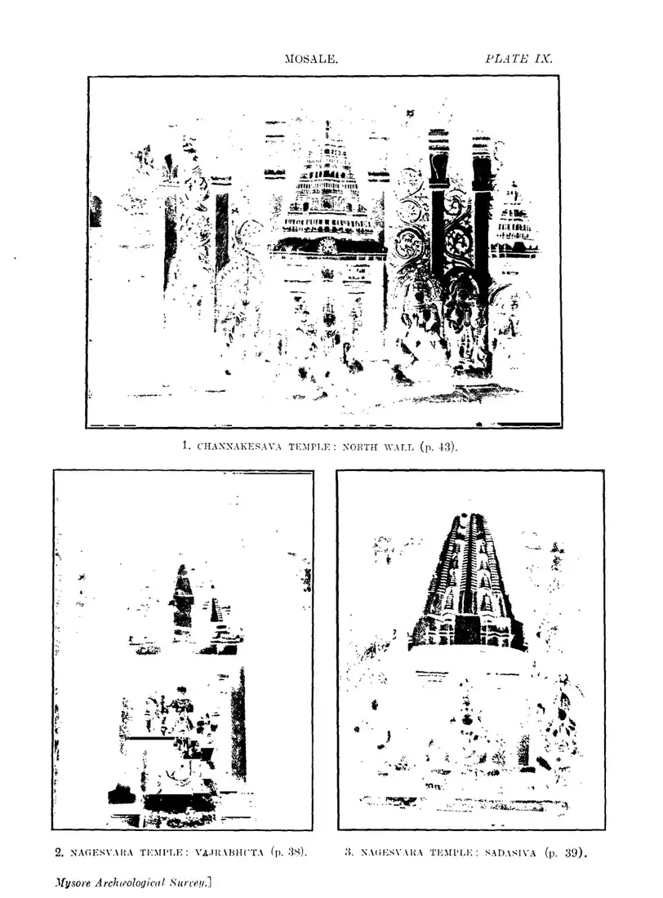
- CHANNAKESAVA TEMPLE: NORTH WALL (p. 43)
- NAGESVARA TEMPLE: VAJRABHUTA (p. 38)
- NAGESVARA TEMPLE: SADASIVA (p. 39)
in front of the kiriṭa, and a cobra above. Ten arms broken. Below, inscription :
ಸದಾಶಿವಮೂರ್ತ Sadāśivamūrti (Pl. IX, 3).
43. Lakshmī seated with elephant (damaged).
44. Lady attendant.
45. Disappeared.
46. Śiva standing as Gambhīra (mace-broken, javelin, drum, abhaya.)
North face.—
47. Harihara with drum and chakra. The other two arms are broken.
48. Consort of No. 47.
49, 50, 51, 52, 53. Seated Nārāyaṇa in sukhāsana (Inscription : Nārāyaṇa ನಾರಾಯಣ) with Śrī (Inscription : Sriyādēvi ಶ್ರೀಯಾದೇವಿ) and a chauri-bearer to right and Bhū (Inscription : Bhūmidēvi ಧೂಮಿದೇವಿ) and chauri-bearer to left.
54. Standing Vaishṇavī (padma, chakra, śaṅkha, phala) damaged.
55. Śiva standing as Chitradhara (broken, trident, drum, abhaya) Inscription : Chitradhara ಜತ್ತಧರ .
56. Goddess (broken).
57. Pārvatī seated (broken, goad, pāśa, phala).
58. Goddess (broken).
59. Garuḍa kneeling with folded hands.
West face.—
60. Standing Durgā, with bowl and bell ; the other two arms (left) broken.
61. Seated Chakrēśvarī, six-armed (chinmudrā (?) broken chakra, broken, broken).
62. Standing Durgā (phala, javelin, drum, padma.)
63. Śiva seated (rosary, trident, drum, broken.)
North face.—
64. Three-headed seated goddess (rosary, broken, broken, pāśa (?)
65. Durgā seated (rosary, trident, drum, bowl).
66. Seated goddess (rosary, mace, javelin, phala).
67. Vaishṇavī (śaṅkha, padma, gadā and chakra).
68. Śiva standing (abhaya, trident, drum, phala).
69. Male attendant standing with mace in right hand.
70. Lady with chāmara.
71. North niche supported by a Saṭa group on each side.
72. Lady attendant.
73. Male attendant with abhaya and mace.
74. Goddess with rosary and drum ; remaining two hands broken.
75. Varāha damaged.
76. Goddess seated in padmāsana. (Vajra, goad, pāśa and phala).
77. Goddess seated (vajra, trident, broken, bowl).
78. Goddess standing, arms broken.
East face.—
79. Śiva standing as Mahākāla (rosary, drum, trident, phala). Inscription : Mahākāla .
80, 81, 82. Broken.
OTHER WALL SCULPTURES.
South face.—
Above Śrī dēvī, etc : vertical scroll bands.
Above Vajrabhūta : tower in North Indian style.
Above Sadāśivamūrti : tower with eight tapering bands, three of which are visible.
Above Chitradhara, north face : tower in North Indian style with ornamental tapering band.
Above the wall is a row of eaves hollowed out inside and with unworked central and corner mouldings. On the south-east and elsewhere figures of monkeys, etc., are carved out in various attitudes.
Eaves and Parapet.
The parapet is composed of four tiers of sculptures which contain swans, Salā groups. makara faces, lions, indecent figures, dancers, etc. The top tier has numerous interesting images like various forms of Śiva, Vishṇu and Dēvī Some of these are Tāṇḍavēśvara, Gajāsuramardana, Gaṇēśa, Yōgānarasimha, etc.
The stone tower which is an indented square in plan has four sculptured rows rising one above the other, the central panels of which contain various forms of Śiva. On top is a fine stone kalaśa with jewelled and beaded work. The tower has a projection over the sukhanāsi above which is a fine large Salā group. The front panel, facing east, contains a group of Tāṇḍavēśvara.
The front porch of the Nāgēśvara temple is much damaged. On its basement are: first, a row of soldiers and indecent figures; then, a frieze of kīrtimukhas; thirdly, scroll bands; and fourthly, a slanting railing with the panels containing images of dancers, musicians and couples.
Two pillars of the rounded lathe-turned type support the roof and are flanked by the usual stone-benches. The ceiling which is an octagon surmounted by a square with a flat slab above has the eight Dikpālakas and musicians with dancing Śiva in the centre.
The navaraṅga doorway whose jambs have dvārapālas supported by chāmara-bearing attendants on the walls has the usual vertical, floral and scroll bands with Umāmahēśvara on the lintel. The navaraṅga is a hall, about 20' square of nine ankaṇas in the western part of which are six fine niches with towers above them. They contain in order clockwise:
1. A Saptamātrikā panel. The images are beautifully carved and finely finished with vāhanas and tōraṇas. Vīrabhadra with viṇā sits to the right and Gaṇēśa to the left.
2. Śāradā, seated (rosary, goad, pāśa, book). Fine image, though covered over with oil.
3. Gaṇēśa.
4. Mahishāsuramardinī—a beautiful group showing the goddess with eight hands standing and spearing the demon (sword, trident, chakra, arrow, śankha, buckler, bowl, holding demon's hair). The goddess' nose and mouth are slightly damaged.
5. A liṅga placed where perhaps a Sūrya image originally stood.
6. Standing Kēśava —a beautiful image.
In the centre of the navaraṅga is a well-carved bull.
The ceilings are from the east clockwise:—
Ceilings.
1. Three concentric circles.
2. Two concentric octagons.
3. Three concentric squares.
4. Two concentric Śrī-chakras with rounded alternate angles.
5. Three concentric rows of horse-shoes similar to Kubaṭur ceiling.
6. Three concentric squares.
7. Three cencentric circles.
8. Two concentric eight-rayed stars.
9. Central ceiling. The lower part of it has sculptures of Śaiva images, dancers and musicians, and Śała groups, while above are four concentric rows of horse-shoes with angles as alternate petals.
The sukhanāsi doorway whose jambs have perforated screens with Manmatha and Rati below has an Umāmahēśvara group much covered with chunām above the lintel. The sukhanāsi itself is plain but for a flat ceiling with Tāṇḍava-Gaṇapati surrounded by nine padmas.
Sukhanasi.
The garbhagriha doorway which is well carved with floral bands is also covered with chunam and has Gajalakshmī on the lintel. Inside the garbhagriha is a medium-sized linga with a flat head.
Garbhagriha.
6
Channakēšava Temple
Conservation Note
The Channakēšava temple is very similar to the Nāgēśvara temple and does not require a repetition of the description. Such features and details as are different are noted hereunder :—
Platform and basement. —Similar to the Nāgēśvara temple except for the landing and the basement of the front pavilion.
Wall images. —In this temple these images are mostly Vaishnava. They are in order from the south of the east doorway:
1, 2. Rati and Manmatha.
3. Garuđa.
4. Kēšava.
5. Saṅkarshaṇa.
6. Bhūdēvī ready to garland Varāha.
7. Dharaṇī-Varāha.
8. Kālingamardana.
9. Lady with garland, perhaps Rādhā.
10. Vēṇugōpāla.
11. Lady with chāmara.
12. Empty niche with a lion slaying an elephant on either side.
13. Lady with chāmara.
14. Prahlāda with flowers.
15. Ugranarasimha.
16. Garuđa damaged.
17. Janārdana.
18. Lady with chāmara.
19. Seated Mādhava, gadā broken.
20. Śrī Kṛishṇa, seated (śankha, ga.dā, padma, chakra).
21. Lady with chāmara.
22. Gōvardhanadhāri.
23. Standing Vishṇu with two arms broken (Kēšava)?
24. Garuđa.
25, 26. Dakshiṇāmūrti admiring dāncing Mōhinī.
27, 28, 29. Vishṇu standing (two arms broken) with Garuđa to right and Lakshmī to left.
30, 31, 32, 33, 34. Yōgānarasimha with Śrī and an attendant to right and Bhū and an attendant to left.
35. Hanumān grinning backward.
36. Aniruddha standing.
37. Mādhava standing.
38. Garuđa.
39, 40, 41, 42, 43. Vishnu seated as Varadarāja with a consort and an attendant on each side.
44. Garuđa.
45. Mādhava seated.
46. Śrīdhara seated.
47. Garuđa.
48, 49, 50, 51, 52. Nārāyaṇa, seated with a consort and an attendant on each side (Pl. IX, I).
53. Disappeared.
54. Mādhava, standing.
55, 56, 57. Gōvinda, seated with an attendant on each side.
58. Garuđa.
59, 60, 61. Saṅkarshaṇa with two consorts, one on either side.
62. Trivikrama.
63. Bali and Vāmana.
64. Garuđa.
65. Hari, seated.
66, 67. Dakshiṇāmūrti and Mōhinī.
68. Achyuta, standing.
69. North niche with a female attendant on each side.
70, 71, 72. Damaged.
73. Pārvatī, seated (damaged).
74. Brahma (damaged).
75. Lakshmīnārāyaṇa, seated.
76. Janārdana.
77. Lakshmī (damaged).
78. Kālīngamardana (damaged).
79. Vāmana (damaged).
Eves. —Similar to Nāgēśvara.
Parapet. —Similar to Nāgēśvara except that most of the chief images are Vaishṇava, though Bhairava and other Śaiva images also appear here and there.
Tower. —Similar to Nāgēśvara with Vaishṇava images.
Porch. —This is also similar to the one in the Nāgēśvara temple except for the ceiling design which is an octagon with inset circle.
Navaraṅga. —The navaraṅga doorway has an unfinished lintel. The tops of the navaraṅga niches have a different design, there being sets of three or five towers instead of the single ones. The images contained in them are: Lakshmīnārāyaṇa, seated (Aniruddha); Sarasvatī, seated—the face is beautiful; Gaṇēśa; Lakshmī, standing with four arms (padma, chakra, śankha, phala); Lakshmī seated with four arms (pāśa, śankha, chakra, kalaśa); Yōgānarasimha.
Ceilings. —From the east clockwise:—
1. Concentric circles.
2. Concentric sixteen stars, fine effect.
3. Concentric octagons.
4. Concentric Śrichakras.
5. Concentric octagons.
6. Concentric squares with fine ribbed effect.
7. Concentric eight-pointed stars.
8. Concentric octagons.
9. Central ceiling. Three concentric rows of horse-shoe arches with a central padma and pendant. Fine design.
Sukhanāsi. —The jambs have below the perforated screens, instead of the dvārapālas, boys blowing conches with ladies waving chāmaras behind them. Above the lintel is Vishṇu seated as Trivikrama. The sukhanāsi ceiling is flat and has Ugranarasimha with dancers around him.
Garbhagrīha. —In the garbhagrīha under a shallow lotus bhuvanēśvari and on a Garuḍa pedestal stands a fine image of Kēśava, about 6' high, with tōraṇa. The god is supported by a consort on each side and stands under a tōraṇa which has the usual ten avatāras of Vishṇu. Of these Buddha is seated naked in yōgāsana, while Kalki rides a horse, sword and buckler in hand. The image is on the whole a good piece of sculpture.
1. The earth around the temple should be excavated and brought to a level with the stone platform below the basement, the extra
Conservation Note. earth being thrown into the pit on the north and the low ground on the south.
2. The compound should be extended symmetrically on all sides, particularly on the north and a compound wall put up with a gate in the middle on the east.
3. The chunām coating of the sculptures should be carefully scraped and removed.
4. The roof of the Nāgēśvara temple is badly damaged and should be repaired so that water does not enter the hollows between the double roofs and the double walls.
5. The front porch of the Nāgēśvara temple should be reset since it is bending forward.
6. The side walls of the navaraṅgas of both the temples appear to be inclining forward and going out of plumb. This is indicated by fissures adjoining the
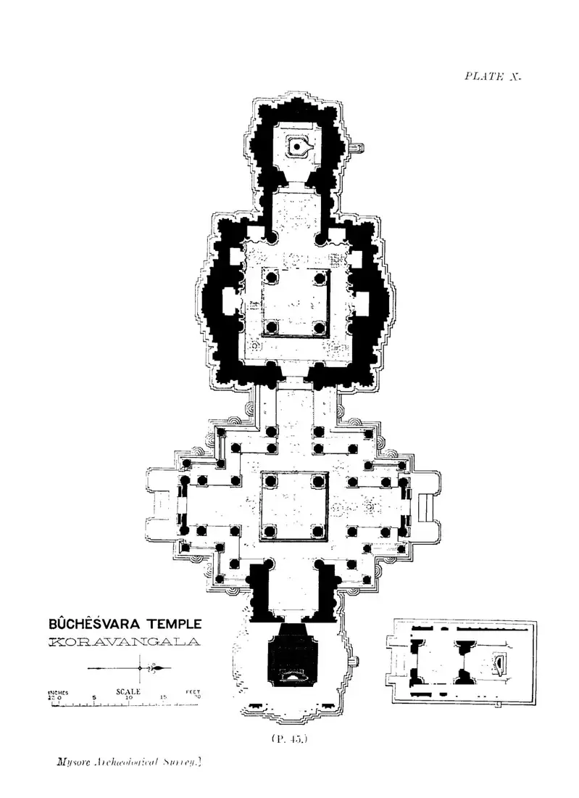
- (p. 45)
Cited in the text: p. 45 ↩
sukhanāsi doorways. These walls should be carefully examined by the D.P.W. and if no other improvement is possible they may be supported with stone pillar buttresses. The latter would no doubt be ugly but may be put in if the walls are in danger of falling.
7. The road leading to the temple may be cleared and connected with the main Hassan-Holenarsipur road so as to allow the cars and busses of visitors to approach the temple.
Part II: Study of Ancient MonumentsKōravangala (Hassan Taluk)
(HASSAN TALUK).
Būchēšvara Temple
General Description. History; Basement of Shrines
The village of Kōravangala which is situated in the midst of a sandy high land, six miles to the north of Hassan, has three temples of the Hoysaļa period, the largest of which is the Būchēšvara temple. The latter is a fine building in a good state of preservation and consists of a towered garbhagriha, a noble sukhanāsi, a navaraṅga, a mukhamaṅtapa connected to the main shrine by a porch and a Sūrya shrine to the east of the mukhamaṅtapa. (Pl. X.) Thus the building contains all the elements of a well-developed Hoysaļa temple. The shrines are squarish in plan while the manṅtapa is an indented square. The temple is very ornate; its sculptural work closely resembles that of Mosaļe.
History. There are several inscriptions in the village. But E. C. V. Hn. 71 which is set up prominently to the south-east of the temple is the one which is concerned most with the temple. It mentions how Būchirāja (colloquial for Bhūtanātha rāja), a Brahman officer belonging to a family in the hereditary service of the Hoysaļa king Narasimha I, got it constructed and consecrated in 1173 A. D. in commemoration of the coronation of Ballāļa II. This officer was the youngest brother of a large family whose other members constructed the other temples in the place. The Bhairava temple on the north-east is perhaps a later construction, though also of the Hoysaļa period. The temple is now very nearly as it was at the time of construction and has not been tramelled and marred by later structures.
Basement of Shrines. The walls of the main temple and the Sūrya shrine are very similar in structure and may be dealt with together. The height on which the present temple stands suggests the view that it is constructed on a high platform now concealed in the ground. Above the platform is a basement of the usual five cornices, two of which bear square, cross-like, etc., mouldings unworked like those at Mosaļe.
Wall Sculptures
No heading in the body: this section starts at its printed page (46).
Above the basement is a row of sculptured figures standing as at Mosaĉe and Jinanāthapura under turreted canopies borne on one or two pilasters, all under vertical scroll bands. The towers are of the usual varied shapes, though they are perhaps less elaborate than those at Mosaĉe and Sōmanāthapur. The images are about 15 to 18 inches long and have a tendency to be shortish and wanting in slimness. The more important of them are noticed hereunder commencing from the south of the main navaraṅga doorway and running clockwise :—
East Face.
1. Sarasvatī standing (rosary, goad, pāśa, pustaka).
2. Gaṇeśa dancing, with mouse on pedestal.
3. Arjuna shooting the fish target. (Pl. XI, 4.)
4. Pārvatī standing (drum, trident, goad, pāśa).
South Face.
5. Bhairava.
6, 7. Hiraṇyakaśipu orders his soldiers to chastise Prahlāda. (Pl. XI, 3.)
Kannaṇa inscription ve ve [? sc ] pra droja [?Ka].
8, 9, 10. Prahlāda is tortured with fire, elephants, ropes (?), cobras.
11. Narasimha appears to Hiraṇyakaśipu in a pillar.
12. Ugranarasimha slays Hiraṇyakaśipu and is flanked by Lakshmī and Prahlāda.
13, 14, 15. Musicians celebrate Narasimha's victory.
16. Bhairava.
17. Kāpālika.
18. Dēvī with padma and kalaśa.
19. Gajāsuramardana, dancing.
West Face.
20. Śvētavarāha trampling on demon.
21. Lakshmī standing.
22. Sūrya.
23. Mōhinī dancing, molested by monkey.
South Face.
24, 25, 26. Trivikrama with Śrī and Bhū.
27, 28, 29. Kōdaṇṭarāma with Lakshmaṇa and Hanumān.
30, 31, 32, 33. Umāmahēśvara (Pl. XII, 1) seated supported by Brahma with Śāradā on right and Kēśava on left.
34. Durgā with sword and kalaśa.
35. Śiva standing as Dakshiṇāmūrti (rosary, pāśa, phala and pustaka).
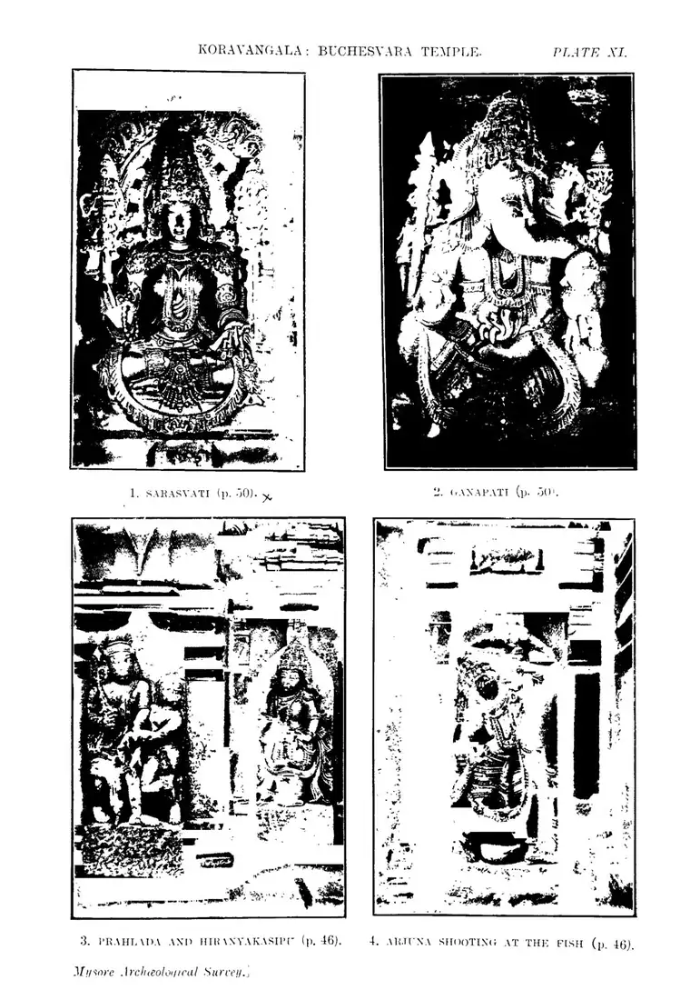
- SARASVATI (p. 50). ×
- GANAPATI (p. 50)
- PRAHLADA AND HIRANYAKASIPU (p. 46)
- ARJUNA SHOOTING AT THE FISH (p. 46)
Cited in the text: p. 46 ↩, p. 46 ↩, p. 48 ↩, p. 50 ↩, p. 50 ↩
West Face.
36, 37. Standing god and goddess (damaged)—Manmatha and Rati (?).
38. Couple at love—kissing.
39, 40, 41. Dharaṇī-Varāha with consorts.
42. Dakshiṇāmūrti with long coat and discus.
43. God standing—damaged.
44. Śīva standing (rosary, trident, drum, phala).
45. Similar to 44.
46. Sarasvatī—standing (phala, rosary, kalaśa and pustaka).
47. Sarasvatī—standing (vīṇā played by two hands. In the other two hands, rosary and pustaka).
48, 49, 50. Tāṇḍavēśvara with Dēvī to right and drummer to left.
51. Damaged.
52. Goddess with padīma and phala.
53. Damaged.
54. Conjugal couple indecent.
55. Mōhinī dancing.
56. Dēvī dancing, drum in right hand and bowl in left.
57. Lady with pet parrot perched on left hand and fruits in right.
53. Kālī as Kāpālikā—naked.
59, 60. Pradyumna with Lakshmī.
North Face.
61. Anantaṣayana with Brahīma springing from navel.
62. Kālīngamardana.
63. Vēṇugōpāla.
64. Kṛishṇa as Navanītachōra.
65. Nāga and Nāgiṇī with tails entwined.
66. Vāmana receiving gift from Bali.
67. Trivikrama with right leg lifted to Brahmalōka and the river Gaṅgā flowing down.
68. Rāvaṇa lifting Kailāsa—Fine tower above.
69, 70. Mōhinī dancing with Dakshiṇāmūrti admiring.
71. Bhairava.
72, 73, 74. Gōvardhanadhāri with Garuḍa to left and Lakshmī to right.
75. Umāmahēśvara as Nandivāhana.
East Face.
76. Bhairava.
77. Vīrabhadra with mace in right hand.
78. Shaṇmukha with peacock on pedestal.
79. Mahishāsuramardinī.
WALL OF SŪRYA SHRINE.
North Face.
80. Goddess standing holding padma.
81. Mõhini molested by monkey.
82. Sarasvatī (damaged).
83. Šiva standing (damaged). Many of these figures are unfinished.
84. Lady feeding parrot.
85, 86, 87, 88, 89. Durgā dancing—flanked by musicians.
90. Lady with cymbals.
91. Chandra—standing.
East Face.
92. Sūrya standing.
93. Lady with chāmara.
94, 95, 96, 97, 98. Gaṇēśa dancing with musicians accompanying (Pl. XI, 2).
99. Lady with padma and phala.
100. Sūrya.
South Face.
101. Sūrya with seven horses on pedestal.
102. Manmatha.
103. Gajēndramōksha. Immersed in water sits a yōgi. Above him in water is a crocodile holding fast to the hind leg of an elephant which offers a lotus with its lifted trunk to Vishnu. Above: Vishnu riding on Garuḍa strikes the crocodile with his discus and releases the imprisoned angel.
104, 105, 106. Umāmahēśvara in sukhāsana with attendants.
107. Chain of destruction—A gaṇḍabhēruṇḍa carries off a śarabha which holds a lion which holds an elephant in whose trunk is held a python which has half swallowed a deer. The whole chain hangs in the air while a sanyāsi and a boy look up in amazement.
108, 109, 110. Two-handed god with lady attendants.
111, 112, Mõhini and Dakshiṇāmūrti—damaged.
All round the temple including the manṭapa runs a row of eaves projecting about 18,” highly arched inside and with no imitation of wood-
Eaves and Parapet
Tower; Manṭapa Basement; Entrances; Manṭapa —Inside; Pillars; Ceilings; Sūrya Shrine; Main Shrine—Navaranga; Pillars; Ceilings; Sukhanāsi and Garbhagrīha; Bhairava Shrine; Conservation
tant of these figures are on the south, Yōgānarasimha, and on the north, Umāmahēsvara.
The tower of soap-stone is similar to those at Mosaļe and is made up of four tiers of turrets bearing numerous sculptures like those of the parapet. On its north is a panel showing Indra on the Airāvata. Over the eastern projection of the tower is a fine large Saļa group and on its east face the usual Tāṇdavēsvara.
Tower. The mukhamaṇtapa has an ornate base of several cornices with attached turreted canopies housing Yakshas. One of the cornices has a creeper scroll, while above them is the usual row of turreted, eight-pointed, star-shaped pilasters with lions above and sculptured images, musicians, dancers, ladies, gods and goddesses in the interspaces. The slanting railings above have unsculptured panels.
Mantapa Basement. The entrances to the maṇtapa and especially the south one have an imposing appearance being supported by a soap-stone elephant, a dvārapāla and a chāmaradhāriṇi on each side. The last named images have behind them eight-pointed, star-shaped pillars with floral scroll bands running up vertically against the indented angles. These pillars, though small, are similar in design to the Mōhinī pillar at Bēlūr and to the front pillars of the smaller temple at Pushpagiri. The north doorway with similar designs has now lost its elephants.
Entrances. The manṭapa which is an indente square shape in plan has its central aṅkaṇa surrounded by eight smaller aṅkaṇas. From these four single aṅkaṇas extend east, south, west and north, while all around excluding where the passages exist runs a stone bench with a slanting railing at its back and floral and pilaster ornamentation on its inner face. The extra aṅkaṇa on the east serves as an open sukhanāsi for the Sūrya shrine and the one on the west as a porch to the main temple.
Pillars. The pillars which are of three different sizes are all of the bell-shaped lathe-turned type. The only exceptions are the banded star-shaped pillars supporting the north and south entrances to the manṭapa.
Ceilings. The ceilings, which are all deep domes have an interesting variety of design mostly without figure sculpture. Their corner stones have deeply carved lion faces, while their sides have ornamental beaded work and pendants. Some of the chief domes may here be mentioned commencing from the centre proceeding eastward and running clockwise, on the first circle and then on the second.
1. Central: Three concentric navagons with large pendant.
2 to 9. Concentric circles, navagons or septagons.
7
10. Flat ceiling.
11. Near south entrance—concentric circle.
12. Porch-ceiling—concentric circles of horse-shoe arches.
The Sūrya shrine is a part of the original structure which is entered by an unfinished doorway. The dvārapālas who bear in addition to lotuses and maces the bow and arrow (right) and the goad and musala (left) are unique. The Sūrya shrine ceiling is flat with a hañsa in the centre. The image of Sūrya stands about 6' high from the ground. It stands upon a pedestal with Aruṇa and his seven horses. It is a finely worked image, well proportioned and fully ornamented. Its two hands hold padmas. On each side of it is a Chhāyā shooting arrows, while on the tōraṇa are seated the twelve Ādityas.
Main Shrine :
Navaranga : Pillars,
Ceilings.
The navaraṅga is entered by a doorway which has Śaiva dvārapālas below, floral and scroll bands and pilasters on the jambs, Gajalakshmī on the lintel and five turrets above the eaves-like cornice. The navaraṅga which is about 20' × 20' in area is a hall of nine squares, which has six wall niches as at Mosaĉ. Of these the three on the north have lost their original images, while those on the south preserve the finely carved original figures in this order :
1. The Saptanātrikās with vāhanas below, tōraṇas above, Vīrabhadra to right and Gaṇēśa to left. It is a fine piece, inferior only to the one at Mosaĉ ;
2. Sarasvatī (Pl. XI, 1) seated with rosary, goad, pāśa and pustaka—a beautiful image ;
3. Gaṇēśa (Pl. XI, 2) fine figure ; the head is very natural.
The four pillars of the navaraṅga are of the usual bell-shaped lathe-turned type, with nothing remarkable about them.
The ceilings, however, are all dome-shaped and interesting. They are:—
1. Central—above the eight Dikpālakas is a gallery with unsculptured panels, the dome being supported by three rows of concentric octagons ;
2. Near east door : Concentric circles.
3. Octagons.
4. Square within square.
5. Srīchakra.
6. Octagons.
7. Squares.
8. Concentric horse-shoe circles.
9. Star-shaped gallery with octagon above.
The sukhanāsi is open on the east and has a flat ceiling of padmas. The garbhagrīha doorway is similar to the navaraṅga doorway, but with unsculptured vertical bands. The garbhagrīha (8' × 8') has nothing remarkable about it and contains a black flat-headed linga which rises about 3' from the ground.
On the whole the similarity between the work at Kōravaṅgala and that of Mosaĵe is so great that it is difficult to escape the conclusion that their designer was the same person.
In the north-east corner of the compound of the Būchēśvara temple is a soapstone shrine of Bhairava with a small sukhanāsi and garbhagrīha. It is also a definitely Hoysaĵa structure, though the outer walls are plain. The image of Bhairava which stands about 5½' from the ground shows the god holding sword, trident, drum, and bowl with head, and treading upon a beheaded victim, while the attendant goblins accompany with weird music and a dog licks the blood dripping from the severed head. Its face is now damaged, but it is a tolerably good image.
1. The building has been recently conserved. A few improvements may, however, be suggested. The houses on the south should be acquired and the compound extended, with a gateway from the east or south-east leading directly from the road.
Conservation.
2. The railing stones of this temple which are lying about near the tank and elsewhere may be restored to their original positions and a good lamp may be provided for use in the navaraṅga.
3. The Village Panchayet may be encouraged to make a park in the ground between the Būchēśvara and the Nāgēśvara temples to the east of the tank and the cart-track connecting with the high road may be improved and made useful for cars.
4. The pond to the north-east of the Gōvindēśvara temple which appears to be the only source for the supply of drinking water to the village may be rebuilt with the ancient stones lying about it.
5. The sculptured pieces thrown about in various parts of the village may be collected and stored in the Būchēśvara temple compound.
Part II: Study of Ancient Monuments › Kōravangala (Hassan Taluk)Nāgēšvara and Gōvindēšvara Temples
Conservation Note
The Būchēśvara temple appears to have developed several elements which were already found in the Nāgēśvara and Gōvindēśvara temples which had been built a few years previously. Both these temples are rather small in size and though ornate, they are much plainer than the Būchēśvara temple. They are now in a state of advanced ruin and it is doubtful whether anything could be done to save them. Two porched doorways with inside verandahs lead us into the compound in which the two temples are situated almost like twin temples. (See Pl. XII, 2 and 3.) But their designs are different. The Nāgēśvara temple has a garbhagrīha, an open sukhanāsi, and a navaraṅga of nine ankaṇas, the doorway of which lies ruined closeby. But instead of a porch it has at a distance of about 10' to the east a fine indented square-shaped pavilion with niched towers flanking its entrances. It has twenty-four pillars, all of the bell-shaped type.
But the Gōvindēśvara temple which is to the north of the Nāgēśvara temple has a garbhagrīha, an open sukhanāsi and a navaraṅga of nine ankaṇas whose finely sculptured door is approached through a porch with entrances from the north and south. To the east of the porch is a small Sūrya (?) shrine whose sukhanāsi doorway is finely designed, though small, and is supported by perforated screens on the jambs. Both these doorways deserve to be removed to a museum along with the towered niches of the Nāgēśvara maṅṭapa. The Gōvindēśvara porch has a ruined dome with octagonal ribs; the central pendant, however, is missing. The outer wall of the Gōvindēśvara temple is ornamented with finely designed turrets borne on single or double pilasters.
1. The buildings and compound should be cleared of all plants and a conservation Note. pound wall put up.
2. They are protected monuments and people committing nuisance should be severely punished.
3. The buildings must be allowed to remain as they are without being further ruined.
Part II: Study of Ancient MonumentsHārnahalli
Lakshmīnarasimha Temple
General Description; History; Platform. Basement; Wall Decorations; Wall Images; Front Railings; Eaves and Parapet; Tower; Navaranga; Navaranga Niches; Pillars. Ceilings; South Cell; North Cell; Main Sukhanāsi; Garbhagrīha; Conservation
Hārnahalī, more correctly called Hāruvanahalī, is a large village, about five miles to the south of Arsikere on the main road from General Description. Arsikere to Hassan. It has the remains of two fortifications, one of the 13th century and another of the 17th century, the latter being in places superimposed on the former. It has several temples two of which are large soap-stone structures of high artistic merit. The Kēsava temple which formed the centre of the old Hoysala town is situated on the top of a height while the Sōmēśvara temple is built about a furlong to its east-north-east close to the north-east corner of the Hoysala fortification whose large boulders are now collapsed.
A plain upparige or gateway of soap-stone leads into a large compound with a modern roughly built stone-wall around it. In the western part of it, on a high
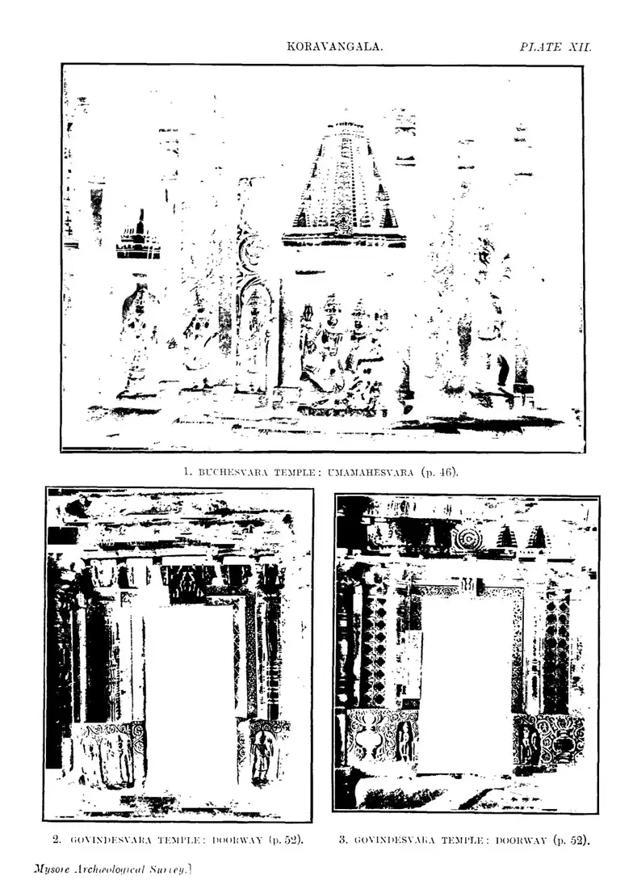
- BUCHESVARA TEMPLE: UMAMAHESVARA (p. 46)
- GOVINDESVARA TEMPLE: DOORWAY (p. 52)
- GOVINDESVARA TEMPLE: DOORWAY (p. 52)
platform is the temple of Kēšava popularly known as the Lakshmīnarasimha temple. It is a three celled structure with the main cell having a sukhanāsi, while the other two open directly into the navaranga. The latter has an eastern extension which is sometimes called the mukhamaṇṭapa. Around this portion there are perforated screens instead of a wall. The main cell is on the outside shaped like a sixteen-pointed star and is to some extent marred by large two-storeyed niches built as buttresses on its three sides. The other two cells are squarish in plan. Only the main cell has a tower which is a fine structure of soap-stone. The other two cells have flat tops. In front of the navaranga doorway, there is neither a porch nor a manṭapa.
The temple is on the whole a fine structure with its walls having sculptured friezes and rows of gods, and belongs more to the class of the temples of Nuggihalli and Hosaholālu than to that of Mosaļe and Kōravangala.
On the inside of the gateway of the temple is a large soap-stone inscription broken into two which records that three brothers Pedda ..... Heggađe, Sōvaṇna and Kēsaṇna got the permission of their father who had become the Svāmi of the Sindige Mutt and after obtaining a free site from the people of Hāruvanahalli got the temple constructed and consecrated, probably at their own cost, in the year 1234 A. D. The king Narasimha II Ballāla endowed it with lands. The town is known in the inscriptions as Hiriya Sōmanāthapur. About thirty years later another record was put up on the eastern beams of the hall of the temple. A small Lakshmī temple was probably constructed on the north-west during the Vijayanagar period, but of it only the basement remains.
The temple is constructed on a platform, about 4' high, which follows the contour of the temple and has five cornices on its face.
Platform. Three flights of steps lead up to it on the east, south and north and each of these is supported as at Bēlūr and Haļebīđ by a towered niche on each side. There are also two more niches above the platform flanking the navaranga doorway. Thus the total number of niches is eight in all, though some of them are now ruined. The flank walls of the niches have on the outside sculptures of gods carved; most of these figures are now damaged. The towers of these niches are square planned and resemble the Haļebīđ ones more than those of Bēlūr.
Above the platform rises a basement, about 4½' high, which is cut up horizontally into five flat cornices each of which bears a frieze of sculptures as at Haļebīđ and Sōmanāthapur. Their general effect is imposing and the temple generally gives the impression of the Kēdārēšvara temple at Haļebīđ, of which it is an imitation. The friezes are from the bottom upwards as follows :—
A. A row of Yakshas and Yakshinīs seated under tōraṇas with the intervening spaces adorned by rows of caparisoned tusker elephants marching forward. Most of the elephants have one or two riders each and the several animals are shown in their varied attitudes as at Haļebīd, viz. , fighting each other, fighting men, slaying or trampling enemies under foot and uprooting trees and plants, playing with each other, frisking their trunks, goring the tusker in front, pulling by the hair the rider in front, playing with a fellow-elephant's tail or bell or pulling his leg, intertwining trunks, etc. In the corners sometimes are two elephants with a single head, while from the north-east of the navaranga is a row of un-caparisoned riderless wild elephants feeding and disporting.
B. The second frieze has a row of horsemen cantering forth to battle on horses a few of which wear armour as at the Kēdārēsvara temple. In the midst of the horses are camels, the riders of some of which are playing on kettle drums. A large number of horses, however, have not been finished.
C. The third frieze is a long creeper scroll band in some of the convolutions of which are small sculptural studies like birds, disporting monkeys, hunters, dancing groups, and obscene figures. The corners, however, have lion faces from whose fangs spring forth the creepers.
D. The fourth cornice which was evidently meant to receive the mythological frieze is left untouched, the carving work having stopped for some reason before the temple was finished.
E. The fifth frieze contains a row of makaras as at the Kēdārēsvara temple.
F. The sixth frieze contains a row of swans in their varied attitudes like feeding and pecking, beaking, feeding the young, etc., with a Garuđa or other figure on a tōraṇa in front of a small projection. These figures are the vehicles corresponding to the gods carved above.
The wall above the basement is divided horizontally into two halves by an eaves-shaped cornice which is comparatively plain.
Wall Decorations. Above the cornice is a row of turrets borne on single or double pilasters. The turrets which are about a foot high are, as usual, of varied shapes.
The lower half of the wall contains a long row of images, about 2' high, standing on pedestals with mostly scroll-on-kīrtimukha ornamentation, while above the figures are latā-tōraṇas as at
Wall Images. Nuggihaļli. The old type serpentine and jewelled tōraṇas are absent and the affinity is definitely to the Nuggihaļli-Sōmanāthapur group. The sculptor of the north face of the building has signed himself in many places both under the friezes and other images as Mallitama and is perhaps identical with the sculptor of that name who worked at Nuggihaļli, Hosahoļalu and Sōmanāthapur. He is one of the best known Hoysaļa sculptors of the thirteenth century.
Near some of the images on the south wall appears the name Piriyanna Heggade, which is perhaps not the name of any sculptor, but is more probably the Kannađa form (Babbur Kamme ?) of the Telugu name Peddanna Heggade of one of the builders of the temple.
The images themselves are of exactly the same size and quality as those of Nuggiha!li and Hosahołalu having heavy-cheeked rounded faces, thickish limbs, shortish legs, and exuberantly ornamented and poised in the usual conventional attitudes. Yet they are very good not only as wall decorations but also as sculptures and illustrate Hindu mythology and iconography. The groups of images are as follows commencing from the south of the east doorway :—
East Face.
1. Hanumān; below ( \omega ) Ba ṇa .
2, 3, 4. Dharanī-Varāha with Hiranyāksha on left and Laksmī on right. Below the latter Kannađa Inscription : ( \omega ) Ba na .
5, 6. Dakshiṇāmūrti and dancing Mōhinī.
7, 8. Kēšava and Lakshmī.
9. Dancing Sarasvatī.
Back of South Cell.
10, 11. Vaikuntha Nārāyaṇa (face damaged) with Garuđa to right.
12, 13. Nārāyaṇa and Lakshmī.
14, 15, 16, 17, 18. Lakshmī-Nārāyaṇa seated with two lady attendants on each side. The design of the undercloth of No. 14 is interesting. Below it is the name Periyāṇda Heggade. Below Lakshmī-nārāyaṇa is the Nandi-Nagarī inscription reading 'Shaṇmukha dāsa'. The faces of Lakshmī and Nārāyaṇa and of many other figures have been damaged only a few days ago.
19, 20. Mādhava with Lakshmī to left. Inscription : ( \omega ) Bo ła.
21, 22. Skeleton dancing with goblin; drummer to left.
West of South Cell.
23. Bhairava.
24. Dakshiṇāmūrti.
25, 26. Gōvinda with Lakshmī to right.
27, 28, 29, 30 and 31. Kālīngamardana with a consort and lady attendant on each side (Pl. XIII, 1). Inscription below 28: ಪೆರಿಯಾಂಡ ಹೆಗ್ಗ ಡೆ Periyāṇda Heggade.
32, 33. Rati and Manmatha. A fine group.
Navaraṅga, South-west Corner.
34, 35. Pāṇduraṅga and Rukmāyī—The two-handed god (Pl. XIII, 3) stands with śānkha in the right hand and a jug in the left with a devotee near his left foot.
36, 37. Vishnu with Lakshmī.
38, 39. Durgā dancing with attendant to left.
40, 41. Mahishāsuramardinī with attendant to right. The image is partly covered by the doorway of a later Hoysaļa structure built for Narasimha on the wall. This structure should be removed in order to expose the beauty of the original wall.
42, 43. Madhusūdana with Lakshmī.
44, 45. Trivikrama with Garuđa.
46, 47. Two monkeys fighting for a jack fruit.
South of Sukhanāsi.
48, 49 and 50. Ugranarasimha with Hiraṇyakašipu to left and boy Prahlāda to right.
51. Harihara standing (rosary, trident, chakra, šankha.)
52, 53. Gōvardhanadhāri—a fine group, with lady holding garland to right.
54, 55. Lady attendants.
56. Vāmana.
57, 58. Šrīdhara with lady attendant to right.
South Niche.
This is a two-storied structure with a tower evidently meant to act as a buttress against the stress of the weight of the central tower. Both the niches are now empty. The walls of the niche have no figure sculptures. They appear to have been part of the originally planned structure.
59, 60. Hrīshikēša with lady to left.
South-west of Main Cell.
61, 62. Padmanābha with Lakshmī to right.
63. Garuđa.
64, 65. Gaṇēša dancing with đavaṇe player to left.
66, 67 and 68. Pārvatī dancing with musicians accompanying.
69, 70. Dāmōdara with Lakshmī to left.
71, 72. Two goddesses, perhaps Pārvatī and Lakshmī.
West Niche.
Sinnilar to the South niche.
North-west of Main Cell.
73, 74. Sankarshaṇa and Lakshmī; inscription below both: Mallitamma.
75, 76, and 77. Vāsudēva with Lakshmī and Garuđa.
78. Lakshmī.
79. Six-handed Sarasvatī dancing, playing on vīṇa.
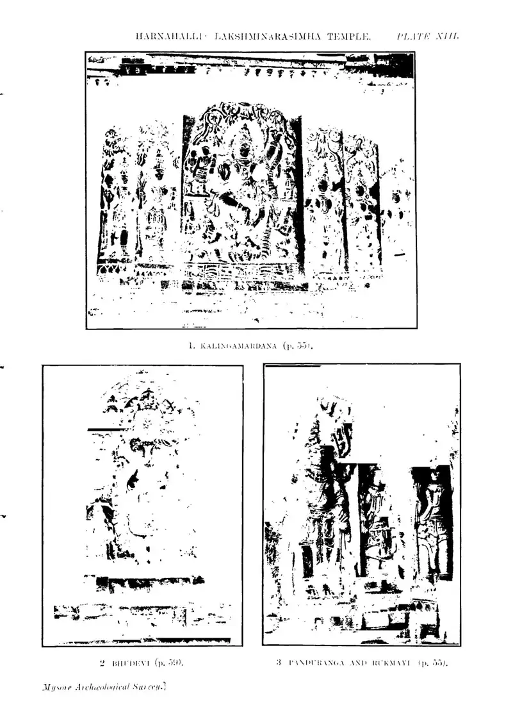
- KALINGAMARDANA (p. 55)
- BHUDEVI (p. 59)
- PANDURANGA AND RUKMAYI (p. 55)
80. Brahma standing (rosary, ladels, pāśa and kalaśa) central face bearded. — Damaged.
81. Lakshmī (?)
82, 83 and 84. Pradyumna with Lakshmī and Garuḍa to left. Inscription below all: Mallitaṅma.
85, 86. Aniruddha with Lakshmī. Sculptor: Mallitaṅma.
North of Sukhanāsi.
87, 88. Purushōttama with Lakshmī.
89, 90 and 91. Adhōkshaja with Lakshmī and Garuḍa to right. The goddess holds padma and kalaśa. Inscription Mallitaṅma.
92, 93. Gōvardhanadhāri with flower-bearing lady to left. Inscription Mallitaṅma.
94. Harihara (rosary, trident, chakra and śaṅkha).
95, 96 and 97. Vēnugōpāla with an attendant on each side and Garuḍa on pedestal.
98. Kōdaṇḍarāma.
99. Paraśurāma.
North-west Corner of Navaraṅga.
100, 101. Standing Narasimha with Lakshmī to left. Sculptor: Mallitaṅma.
102, 103. Achyuta and Lakshmī.
104. Bali and Vāmana.
105. Trivikrama with lifted right leg, Garuḍa on pedestal.
106. Mahishāsuramardinī.
107. Lady with phala and padma.
108. Arjuna shooting the fish target.
109, 110 and 111. Janārdana with Lakshmī to right and Chāmaradhāri to left. Sculptor: Mallitaṅma.
112, 113. Goddesses.
West of North Cell.
114, 115, 116 and 117. Lakshmī-nārāyaṇa flanked by a chāmaradhāri and a consort with padma and kalaśa on left and a chāmaradhāri on right.
118. Balarāma.
119. Lady with parrot on the left forearm and fruits in the right.
120, 121. Upēndra with Lakshmī to right.
122. Six-handed Lakshmī dancing (rosary, gajahasta, śaṅkha, savarga-hasta, chakra, phala).
8
North of North Cell.
123. Six-handed Kēšava dancing : (padma, gaja or lamba, šankha, svarga, chakra, gadā).
124, 125. Hari with lady attendant.
126. Mōhinī with lifted cobra.
127, 128, 129, 130 and 131. Lakshmī-Varāha with an attendant and consort to left and consort and attendant to right. Sculptor Mallitaṅma.
132. 133, 134 and 135. Šrī Kṛishna with three lady attendants.
136. Unworked.
East of North Cell.
137, 138. Yōgānarasimha with Garuḍa to right.
139, 140 and 141. Nārāyaṇa and Lakshmī with lady attendant. Sculptor Mallitaṅma.
142, 143, 144, 145 and 146. Lakshmī-Narasimha with attendant and Bhūdēvi to left and Rati and Manmatha to right.
Round the front part of the hall above the basement is a row of turreted pilasters which are alternatively square and star-shaped.
Front Railings. Between them and between the towers above them are unworked mouldings for figures. Higher up is a plain slanting railing with only the commencement of a few obscene sculptures on the north side. Above the railings is a row of pierced stone windows of simple design.
The eaves which bear imitation of rafters on the undersurface have unworked mouldings on the edge. The parapet which covers the outer edge of the usual hollow double roof of the temple is formed by a series of soap-stone turrets whose mouldings are left uncarved.
The tower, which is composed of four tiers of turrets, is all of soap-stone and has a fine appearance inspite of its few carvings, owing to its star-shaped corners. In place of the old stone kalaśa is now seen a recent metal kalaśa. The usual projection of the tower over the sukhanāsi has lost its Saṭa group and its frontal panel the dancing group.
The navaraṅga is a hall, about 15' square, with an extra ankaṇa on the east and stone benches on the east side. Behind the benches are the pierced windows, while from them rise six star-shaped pillars which support the front part of the roof. Many of the sculptures of the navaraṅga are covered over with a thick coat of hardened chunām or wax.
Navaranga.
As usual, there are four niches in the western part of the navaranga but the tower of each has a different design. Two of them are star-shaped with the point of the star projecting over the doorway. The niches contain the following
Navaranga Niches.
images :—
1. Sarasvatī seated (rosary, goad, pāša and pustaka). A fine image badly coated with wax. (Pl. XIV, 1.)
2. Gaṇēśa.
3. Lakshmī standing with elephant on pedestal (abhaya, śankha, chakra, kalaśa).
4. Bhūdēvī standing with Kūrma and Adiśēsha on pedestal (padma, śankha, chakra and phala). A very rare image and a fine one, badly coated with wax. (Pl. XIII, 2.)
The four central pillars of the navaranga are of the usual lathe-turned bell-shaped design, but their fine beaded work is concealed under chunām. Of the six pillars, more to the east, all are star-shaped, the eastern two having eight points, the southern one six points, two others having thirty-two points while one has sixteen points with the intervening arc-like flutings having three points each, making in all sixty-four points. The two eastern pillars have against each alternate point the image of a dancer or musician finely carved.
Pillars.
There are ten ceilings in all and they are, commencing from the east and running clockwise :—
Ceilings.
1. Above two rows of turrets bearing under them Yakshas, and on their flanks lions, standing forms of Vishṇu, etc., rises the dome which has its beams forming three concentric circles. The large pendant has Kālīngamardana under its surface.
(Frontispiece).
2. Concentric circles above circular gallery.
3. Eight-pointed star.
4. Concentric circles above star-shaped gallery.
5. Concentric circles.
6. Similar to No. 4.
7. Eight-petalled concentric padmas.
8. Concentric circles.
9. Concentric circles.
10. Central dome: concentric circles. The central pendant has standing images of Vishṇu carved round it.
The south cell-doorway which is flanked by dvārapālas has finely worked jambs with star-shaped pilasters and vertical bands of flowers and lines which are all concealed by chunām. The lintel is unworked while above the fine cornice are five towers with intervening lions. The ceiling of the south cell is flat, but finely carved with Vēnugōpāla in the central panel and eight images of Vishnu (?) around. Each of these has two hands joined in añjali and the other two holding šañkha and chakra, while a consort supports on each flank. The whole slab is finely sculptured.
In the cell on a Garuđa pedestal stands a fine image of Vēnugōpāla resembling the Sōmanāthapur image but covered over with wax.
The doorway of the north cell resembles that of the south except that its lintel is finely worked. It shows Lakshmīnarasimha seated in state flanked by Prahlāda, Garuđa and a large number of devotees, while the ten avatāras appear on the latātōraṇa above. The whole piece is exquisitely worked. The ceiling of the north cell has Yōgānarasimha in the central panel. The image below, however, is that of Lakshmīnarasimha with Garuđa on the pedestal and the ten avatāras on the tōraṇa. The group is a fine one covered over with wax.
The doorway of the main sukhanāsi has nothing remarkable about it except its fine small dvārapālas (Bhadra and Subhadra) and its perforated screens of simple design. The sukhanāsi now houses the ustava vigraha Kēšava and his consorts.
The garbhagriha doorway is the finest in the temple. It resembles the south cell doorway which it excels. Its lintel, however, is beautifully carved in great detail. In the group six-handed Lakshmī (padma, goad, svarga-hasta, šañkha, lamba-hasta, kalaśa) dances with a host of musicians accompanying. Some of these figures, though about 3" high, are in the most animated attitudes. The garbhagriha which has three turreted niches in its walls has a simple padma ceiling.
The main image of Kēšava which stands on a Garuda pedestal of Hoysaļa workmanship is, however, comparatively a disappointment. Its tapering kiriṭa, its poorly ornamented body and symbols, its poor chest and plain face and its flattish tōraṇa (which, however, bears the ten avatāras) suggest the suspicion that the image is not of Hoysaļa workmanship, but is probably a production of the early Vijayanagar period in imitation of an original which was perhaps destroyed or damaged. Though Kēšava is the central image, the temple goes by the name of Lakshmīnarasimha as at Holēnarasīpur and Bhadrāvati.
To the south-east of the main temple is a small one-room shrine of the late Hoysaļa period in which is installed a large image of Lakshmīnarasimha of much plainer workmanship than the one in the north-cell of the main temple.
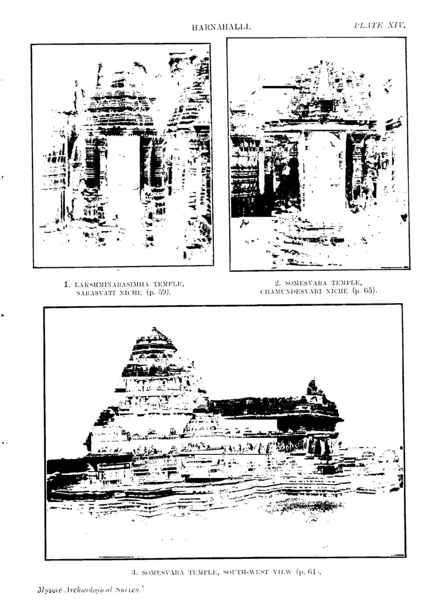
- LAKSHMINARASIMHA TEMPLE SARASVATI NICHE (p. 59)
- SOMESVARA TEMPLE CHAMUNDESVARI NICHE (p. 65)
- SOMESVARA TEMPLE, SOUTH-WEST VIEW (p. 614)
1. The road leading to the temple should be cleared, if need be by dismantling about six feet of the front part of the police station building.
Conservation.
2. The damaged compound wall should be repaired, the eastern part of the compound being levelled and converted into a flower garden.
3. The priest should not be allowed to live inside the main temple. A small building may be put up at the south-east corner of the compound for cooking and store purposes.
4. The peepul tree on the south should be removed entirely, and the well near it provided with a pulley for helping the drawing of water.
5. The encrusted chunām and wax should be removed from the walls, images and sculptures in the temple.
6. The building was partly repaired about 1915 and is in a good state of preservation.
The small shrine on the south side of the sukhanāsi built for Ugranarasimha on the wall should be entirely removed.
Sōmēšvara Temple
General Description; History; Platform; Basement; Railings and Pierced Windows; Wall Decorations; Wall Images; Eaves and Parapet; Tower; Navaranga; Navaranga Niches; Navaranga Pillars; Navaranga Ceilings; Sukhanāsi; The Garbhagrīha; Conservation Note
(Pl. XIV—3).
The Sōmēšvara temple which is situated to the east of the high-road and about 200 yards east-north-east of the Kēšava temple belongs
General Description.
to the same Hoysaļa agrahāra town of Hiriya Sōmanāthapura and is very similar in workmanship to the Kēšava temple. Its sculptures are more incomplete than those of the latter. But it is planned in a different way (Pl XV). While the Kēšava temple has three cells and one entrance, the Sōmēšvara temple has one cell and three entrances. Otherwise in plan and size it is almost exactly similar. The main cell which has a star-shaped exterior with outer and inner niches is entered by a sukhanāsi whose doorway connects it with the navaranga. The latter had originally three entrances, but the northern one which had collapsed was re-built and walled up about fiteen years ago. The navaranga has six towered niches instead of four. All round the temple and below it is the usual high platform which follows the contour of the temple.
Though there is no mention in any inscription about the date of the construction of the temple, the event very probably took place at about the same time when the Kēšava temple was constructed, i.e. , about 1234. The original stone inscription of this temple has been lost. On a beam in the south ankana of the navaranga is an inscription recording a grant.
History.
A high platform with the usual five cornices runs around the temple following its outline. It has three flights of steps on the east, south and north, each flanked by a niched tower. Each of the navaraṅga doorways also had originally similar niched towers flanking it, so that in all there were twelve towers. Some of them have now disappeared.
Platform. The basement has five flat-faced cornices similar to those of the Kēśava temple. But these have been only partly carved. The elephant frieze is nearly completed, the animals being often highly animated. The horsemen, makara and swan friezes have been only roughly carved and partly finished, while the band meant for the mythological frieze has been left untouched.
Basement. The railings and pierced windows are similar to those of the Kēśava temple being simple in design and of unfinished execution.
Railings and Pierced Windows.
As on the Kēśava temple the wall is divided into the upper and lower halves by the eaves-like cornice. But just above the latter is a finely carved scroll frieze with lion faces in the corners. This is peculiar to this temple. Above it is the usual row of pilasters bearing turrets of varied shapes.
Wall Decorations. In the lower half is the row of wall images with scroll or floral or lion face bases and creeper tōraṇas. The images are of the same quality and size as in the Kēśava temple but are predominantly Śaiva in character. The images are, in order from the west of the south door :—
1. Tāṇḍava-Gaṇapati, a fine figure covered with wax and concealed in a recent structure of soap-stone pieces.
West of South Entrance.
2. Umāmahēśvara seated in sukhāsana.
3, 4, 5. Śiva standing (Chandraśēkhara—abhaya, paraṣu, deer and bowl), with a goddess attending on each side.
6. Mōhinī.
7, 8, 9. Śiva standing (rosary, trident, drum and bowl) with lady attending each flank.
South-west corner of Navaraiga.
10, 11, 12. Sarasvatī—dancing (rosary, goad, pāśa, book) with drummer and a lady attendant on each side.
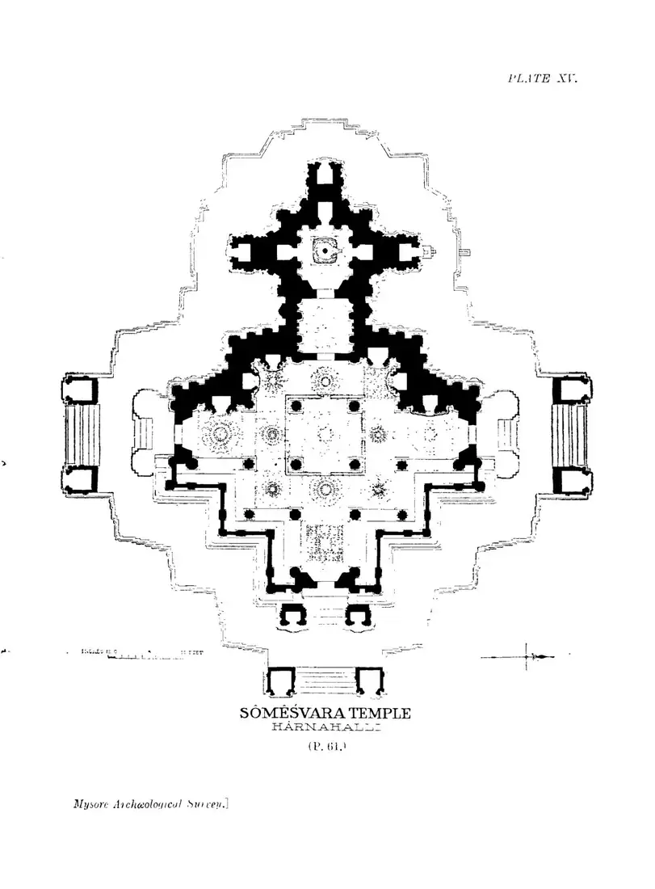
- SÖMÉSVARA TEMPLE HÁRNAHALLE (p. 61)
13. Pārijātāpaharaṇa: Kṛishṇa and Satyabhāmā being carried by Garuḍa who holds the pārijātā branch in his left hand and the vajrāyudha in his right.
14. Dharaṇivarāha.
15. Lady plucking flower from overhanging creeper.
16, 17. Harihara standing (rosary, trident, chakra, śaṅkha) with a consort on each side and a large image of a goddess on the right.
18. Trivikrama with the right leg lifted to the Brahmalōka and the Gangā flowing down.
South of Sukhanāsi.
19, 20. Ugranarasimha with Prahlāda and Garuḍa below and Lakshmī to the left.
21, 22. Harihara and consort.
23, 24, 25. Six-handed Sarasvatī—dancing (vīṇā, rosary, goad, svargahasta, pāśa, vīṇa) with two lady attendants to the right.
26. Pārvatī dancing.
27. Śiva standing.
South Niche (two-storied functioning as a buttress).
28. Lakshmī standing four-armed (rosary, chakra, śaṅkha, phala).
29, 30, 31. Four-armed Durgā dancing (sword, trident, drum and bowl) with two lady attendants to the right.
32, 33. Six-armed Śiva dancing (drum, sword, svargahasta, shield, lambahasta, skull-headed mace and bowl) with lady attendant to left.
34, 35, 36, 37. Dancing Śiva as Jalandharasamhāri, treading upon a demon, whom he lifts up to the Kailāsa with his trident. Three musicians to his right.
38. Bhairava.
39. Śiva standing (rosary, trident, drum, and fruit).
West Niche (like the south one):
South-west of main cell.
40. Pārvatī standing with Gaṇēśa and Kumāra near feet.
41. Hanumān (partly carved).
42. Tāṇḍavēśvara with six hands, the first of which holds a sword.
43. Tāṇḍavēśvara, similar to 42, but rosary in place of sword.
44. Half-carved Garuḍa.
45, 46. Kālīṅgamardana with Nāginī to the left.
North Niche (similar to the south one).
North of Sukhanāsi:
47. Pārvatī standing.
48, 49, 50. Šiva standing (broken, trident, drum, phala) with two lady attendants on the right.
51. Lady with dāna-hasta and pāśa.
52. Three-headed beardless Brahma standing (rosary, goad, pāśa, and kalaśa).
53. Harihara.
54. Goddess offering flowers.
55. Rāvaṇa lifting Kailāsa.
56. Lady with padma and phala.
57, 58. Two monkeys fighting for a jack fruit.
North-west corner of Navaraṅga :
59, 60, 61. Gōvardhanadhāri with a lady on each side.
62, 63, 64. Nārāyaṇa standing with a male attendant to right and a female one to left.
65. Mōhinī with parrot on left hand and plucking fruits with the right.
66. Vēnugōpāla.
67. Bhairava dancing on victim's body.
68. Mahishāsuramardinī.
69, 70. Male and female attendants standing.
West of north entrance :
71. Šiva standing with rosary in first hand.
72, 73, 74, 75. Kōdaṇdarāma with Lakshmaṇa, Hanumān and Sitā.
76, 77. Šiva standing (with rosary) with lady offering flowers on the right.
78, 79. Tāṇdavēšvara with six arms (abhaya, sword, trident, drum, bowl, and lamba-hasta) with a lady attendant to left. Kannaḍa Inscription : Bo .
80. Umāmahēšvara as Nandivāhana.
The eaves with their under-surface ornamented with rafter work and the stone parapet formed of unsculptured turrets are
Eaves and Parapet. similar to those of the Kēśava temple. A masonry bull which surmounts the southern doorway is of recent origin. On the parapet above the south and east doorways is the Tāṇdavēšvara group.
The soap-stone tower is composed of four tiers of turrets which are ornamented with kīrtimukhas, Yaksha and other images, Tāṇdavēšvara being commonly found on the east, west and north faces. The projection over the sukhanāsi and the tower are both ornamented with fine beaded work which gives a beautiful effect. The Salā group of the projection is missing, but a front panel with Tāṇdavēšvara group is existing. The top of the śikhara has been repaired with white mortar.
The navaranga which is similar in dimensions to that of the Kēśava temple has its nine aṅkaṇas and three extensions to the east, south and north. On the eastern side are the usual stone benches backed by the pierced window. There were three entrances on the east, south and north, of which the last was closed in during the renovation about fifteen years ago. In this north aṅkaṇa is now placed a Virabhadra image of very recent and poor workmanship while in the centre of the navaranga is a bull. The lintels of all the three doorways of the cells have small Tāṇdavēśvara groups.
Against its western walls the navaranga has six niches whose towers have varied designs, some being star-shaped, others being square in plan. All of them have their towers composed of three to five tiers of turrets arranged harmoniously. The turrets contain the following images in order from the south northward :
1. The Saptamātrikas with Virabhadra and Gaṇēśa on the flanks; tōraṇas behind and vāhanas below.
2. Sarasvatī—face damaged.
3. Gaṇēśa.
4. Mahishāsuramardinī. (Pl. XIV, 2)
5. Shaṅmukha riding on peacock whose beak is broken.
6. Kēśava standing with three arms broken, and chakra only remaining.
The four central pillars of the navaranga are, as usual, of the round bell-shaped kind. But the remaining six are star-shaped, four of them being sixteen-pointed stars. The two pillars nearest the east doorway, however, are more ornate, though star-shaped. Their bases have sculptured panels like Rāvaṇa lifting the Kailāsa, Gōvardhanadhāri and Vēṇugōpāla. The shaft of the north pillar has the alternate ones of its sixteen points, indented square-shaped, while the south one has between each pair of its eight starry points a vertical series of four turrets. The design appears to be an imitation on a modest scale of the Narasimha pillar of Bēlūr. The remaining pilasters of the navaranga are all indented square-shaped.
The navaranga has twelve ceilings which are, in order commencing from the east and running clockwise :
Navaranga Ceilings.
1. Near east door : Over a gallery featuring Sūrya standing or Umāmahēśvara seated with musical accompaniments, rises a low square dome of three concentric squares jointed by a serpentine band, but over the central square rises a smaller dome with an eight-pointed star inset into an octagon.
2. Near south doorway. The Dikpālakas on the octagonal gallery and three concentric circles above.
9
3. Near north doorway. Similar to No. 2.
4. Near No. 1. Concentric circles with inset octagons.
5. Six-pointed star with very low angles. (about 135°)
6. Concentric octagons.
7. Concentric Šrī-chakras. (Pl. XVI, 2).
8. Concentric circles.
9. Serpentine band between alternating concentric squares.
10. Circular gallery with concentric circles.
11. Eight-pointed star-shaped gallery with concentric eight-pointed stars.
12. Central Ceiling. On the octagonal corner stones below the gallery are the eight Dikpālakas with attendants. Above is a sixteen-pointed star, a circle and an eight-pointed star inset in order. The pendant has a dancing group carved round it with Tāṇḍavēsvara on its circular under-panel. (Pl. XVI, 1).
The sukhanāsi doorway whose fine workmanship is concealed by a thick coat of chunām has Umāmahēśvara on the lintel, the jambs being supported by perforated screens of simple design. The sukhanāsi ceiling is flat and supported by an octagon bearing the Dikpālakas.
The Garbhagriha. The garbhagriha doorway which is the finest in the temple and similar to the one in the Kēśava temple has sculptures covered with chunām and wax. On each jamb is a dvārapāla with the vertical bands of floral scroll, lion and creeper design, while on the lintel is a Tāṇḍavēsvara group. The garbhagriha which has three inner towered niches has a flat padīma ceiling and a small round-headed natural looking linga on a large pedestal.
1. The chunām covering the sculptures should be carefully scraped off.
Conservation Note.
2. The masonry bull over the south entrance and the ugly shrine to its west and the debris of a dismantled tower lying near the north entrance should be removed and stored in the south-west corner of the compound.
The temple was renovated about 1915 on the basis of the note in the Archaeological Report of 1909.
3. The wooden rafters marring the beauty of the navarāṅga hall should also be removed.
4. The ugly doorway leading to the Bhairava shrine should be removed, if there is no risk to the building by doing so.
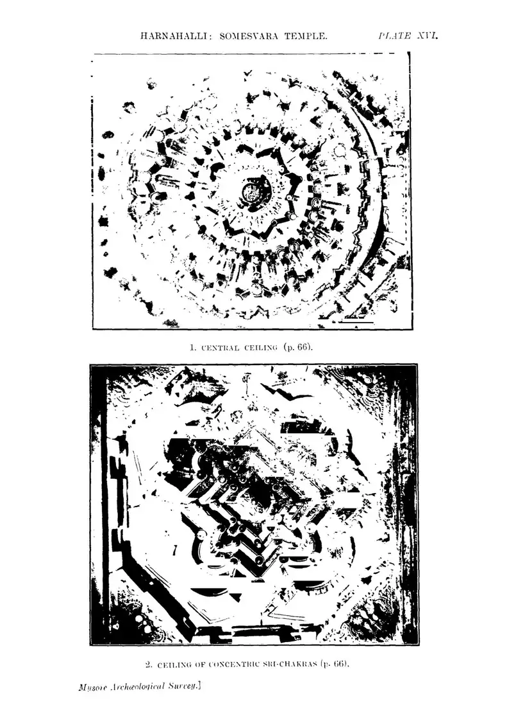
- CENTRAL CEILING (p. 66)
- CEILING OF CONCENTRIC SRI-CHAKRAS (p. 66)
Part II: Study of Ancient MonumentsHullekere
Kēšava Temple
General Description; History; Basement; Wall Decorations and Images; Eaves and Parapet; Tower; Porch; Navaranga; Pillars and Ceilings; Sukhanāsi and Garbhagrīha; Cloistered Verandah; Porch; Conservation
About six miles to the south of Hārnahalli Road, an M. S. M. railway station, is a small village named Hullekere (the Hulleyakere of the inscriptions), with a Hoysaļa temple close to it on the west. The whole temple is built of soap-stone and occupies an area of about 100 feet east to west and 65 feet north to south. It is a complete temple with a towered garbhagriha, an open sukhanāsi, a navaranga, a porch and cloistered verandahs enclosing the compound and entered by a small towerless upparige or main entrance. The plan shows that both the garbhagriha and the navaranga are square and straight-sided unlike those of the Būchēśvara temple at Kōravangala which is only slightly removed in date from this temple. The porch is also squarish and of about the same size as the garbhagriha. The compound is oblong in shape and at the entrance has a porch on the outside and another on the inside. On the whole the temple is comparatively plain, but its interest chiefly lies in the fact that it belongs to a date as early as 1163 A. D.
The date just mentioned is given in the stone inscription which stands to the south-east of the temple. Būchirāja, the great minister, Sarvādhikāri and Heggađe in the service of Narasimha I (Hoysaļa) obtained Hulleyakere from the king and converted it into an agrahāra, Sōmanāthapura by name, and built this Kēšava temple. Perhaps this is the earliest temple he built. The temple has had no later accretions.
As at Kōravangala we have here only a floating foundation without a platform. Over this rises the basement formed of the usual five cornices. Of these the middle one has merely toothlike projections which have been left uncarved. The fourth cornice is ornamented by a series of makara faces with, here and there, a lion face from whose mouths bunches of flowers hang down.
The walls of this temple have the usual turteted pilasters and canopies with, here and there, floral medallions. Usually these turtets are set inside serpentine band tōraṇas springing from lion faces. These turtets are generally either of the multiple-turret or of the step-pyramid design.
The images on the walls are each about 15 inches in height, a few being smaller, and are mostly images of standing Vishṇu. Some of them are well carved and ornate, the profuse beaded and drill work reminding us of the Hoysaļēśvara d vārapālas at Haļebīd. They are as follows commencing from the south of the navaraṅga entrance :
1. Kēśava (covered with chunām).
2. Nārayaṇa—Kannaḍa inscription : Śrī Nārāyaṇa.
3. Mādhava—Kannaḍa inscription : Śrī Mādhava.
4, 5, 6. Gōvinda with consorts nd a female attendant on either side. The base of the image which bore its name is now broken along with parts of the leg.
7. Vishṇu—Kannaḍa inscription Śrī Vishṇudēva.
West of Navaraṅga.
8. Madhusūdana (chakra, śaṅkha, padma, gadā), slightly damaged (no inscription).
9, 10. Trivikrama, with lady to the right, offering some fruit or betel leaves with her hands. Kannaḍa inscription : Śrī Trivikrama.
South of Garbhagriha.
11. Vāmana, Kannaḍa inscription : Śrī Vāmana.
12. Śrīdhara, Kannaḍa inscription : Śrī Srīdharadēvaru.
13. Hrishikēśa. Kannaḍa inscription : Śrī Hrishikēśa.
14. Padmanābha, Kannaḍa inscription : Śrī Padmanābha.
West of Garbhagriha.
15. Dāmōdara, Kannaḍa inscription : Śrī Ddāmōdara.
16. Dharaṇīvarāha (much damaged).
17. Saṅkarshaṇa, Kanuaḍa inscription : Śrī Saṅkarushaṇa.
North of Garbhagriha.
18. Vāsudeva, Kannaḍa inscription : Śrī Vāsudēva.
19. Pradyunna, Kannaḍa inscription : Śrī Pradyumna.
20. Aniruddha, Kannaḍa inscription : Śrī Aniruddha.
21. Purushōttama, with a chāmaradhāriṇi on each side, Kannaḍa inscription : Śrī Purushōttama.
22. Adhōkshaja, Kannaḍa Inscription : Śrī Adhōkshaja.
West of Navaraṅga.
23. Narasimha (no inscription.)
North of Navaraṅga.
24. Achyuta, Kannaḍa inscription : Śrī Achyu [ta]
25, 26, 27. Janārdana with lady attendants. Two hands and both feet broken along with pedestal.
98. Upēndra, Kannaḍa inscription : Śrī Upēndra.
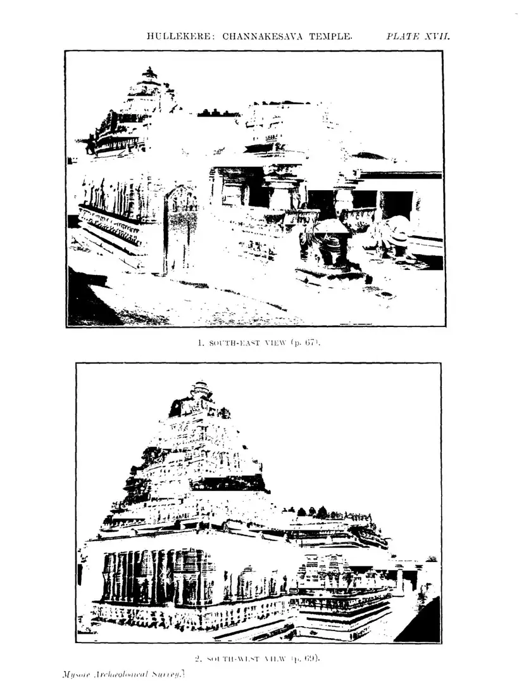
- SOUTH-EAST VIEW (p. 67)
- SOUTH-WEST VIEW (p. 69)
East face.
29. Hari, Kannađa inscription : 2 & 3
Śrī Hari ha [? ra]
30. Šrī Krīshṇa (coated with chunām).
The rafter-like design on the under-surface met with generally in the Hoysaļa eaves is absent here. Only on the edge of the southern eaves is a beginning made for carving the beaded pendants and kīrtimukhas. The parapet is, as usual, composed of three cornices and a row of šikhara panels, the middle cornice being ornamented with lion and makara faces and the šikhara panels with a row of kīrtimukhas containing Yakshas and Yakshiñis. But the central panels on the east, south and north contain respectively Kālīngamardana, Ugranarasimha and Harihara groups.
The soap-stone tower (Pl. XVII, 2) rises in three tiers of turrets ornamented much like the parapet and containing in the central panels Tower. important images :
South : Trivikrama, Kālīngamardana, Lakshmīnārāyaṇa and Harihara.
West : Bali and Vāmana, Yōgānarasimha, Gōvardhanadhāri and Kēšava.
North : Vēņugōpāla, Lakshmīnārāyaṇa, Vishṇu standing, Vishṇu ?
The šikhara is surmounted by a stone kalaśa around which is a band of beaded pendants partly worked. The tower projection over the sukhanāsi contains decorations similar to the tower on either side and has on its top a very finely executed Saļa group. Its eastern face has a fine kīrtimukha with a Kēšava group.
The steps leading up to the porch are flanked by two fine large elephants which show a finely conceived design, incompletely executed.
Porch. Each elephant which is shown to be moving forward is surrounded by small images of footmen.
The basement of the porch consists of three cornices and a row of pilasters. Between each pair of the latter are standing images of Rati, Manmatha, musicians, etc. Corresponding to these pilasters and above each of them is a turret whose design reminds us of the Buddhist Triratna symbol with a rearing lion between each pair of towers. The slanting railing contains between double pilasters finely worked images of ladies, musicians, couples at love, Mōhinī and monkey etc. The north railing is perforated between the images.
On each side of the porch is a stone bench from which rises a round bell-shaped lathe-turned pillar. The ceiling has an octagonal gallery of the eight Dikpālakas above which is a square containing the twelve forms of Vishṇu with lady attendants. On the flat ceiling is a dancing Lakshmī pendant surrounded by lotus medallions and musicians.
The navaraṅga doorway is comparatively plain and bears on the jambs dvārapālas (Bhadra and Subhadra). The lintel is unworked and plain. The closed hall consists of nine aṅkaṇas or squares with a low platform in the middle.
The four central pillars are of the usual bell-shaped type. On the base of the north-western pillar are two dancers carved under arches.
Pillars and ceilings.
The ceilings are, commencing from the east and proceeding clockwise:
1. Square with a richly ornamented padma above.
2. Two concentric octagons.
3. Octagon with nine panelled flat top slab showing a grandee (Būchirāja ?) in durbar with musicians and dancers above and around him.
4. Two concentric octagons.
5. Six pointed Śrī-chakra with padma in the centre. (Pl. XX, 4)
6. Three concentric octagons.
7. Eight-pointed star with a flower in each.
8. Three concentric octagons with a six-faced pendant.
9. Central Ceiling. Similar to the porch ceiling with an incuse padma in the centre on the under—surface of the pendant of which is a fine group of Kālīngamardana.
The sukhanāsi opens into the navaraṅga without a wall and has a flat ceiling ornamented with nine padma medallions.
Sukhanasi and Garbhagriha.
The doorway of the garbhagriha is also plain, but has finer dvārapāla groups than the navaraṅga doorway and has Gajalakshmī on the lintel.
The garbhagriha ceiling is similar to that of the sukhanāsi, though it is less elegantly worked.
The Kēśava image which stands on a Garuḍa pedestal is about 6 feet high and of poorer workmanship than the usual Hoysala images. The kirīṭa is tapering and makes one suspect its being a Hoysala production. But the contour of the limbs and the neat get-up of the hands suggest that the image may after all be a Hoysala production, though of an inferior type. On either side of the god is a consort and the prabhāvali contains the usual ten avatāras of Vishṇu.
The verandah running around the compound is supported by round cylindrical soap-stone pillars with rough finish.
Cloistered Verandah.
To the west of the aṅkaṇa west of the compound entrance is a porch supported on four bell-shaped pillars, which has a ceiling with a lotus inset in a Śrī-chakra.
East of this, next to the doorway, is a ceiling similar to that of the porch of the main temple.
In front of the compound entrance is a porch of two aṅkaṇas east to west and one north to south similar to that of the main temple but with the elephants lost and the sculptures incomplete.
Porch. The doorway is very plain and of the ceilings the west one near the doorway is incompletely worked while the east one has the eight Dikpālas with three concentric octagons above.
1. The temple is a good one which deserves to be preserved. The main building is intact and its roof was recently repaired.
Conservation.
2. The courtyard inside should be levelled and freed from its thorns. The cloisters around which are ruined in three places and whose outer walls have three large gaps, while the other stones are out of plumb, deserve to be restored, since they are unusual in Hoysala temples. All the stones of the building are lying nearly and only labour and skill are needed to put them into position. Until that could be done the stones which are out of plumb and are dangerous to the visitors may be removed and masonry or stone wall put up closing the gaps.
3. The small Māri shrine to the east of the temple should be removed elsewhere and the earth lying behind it built into a sloping embankment around the temple with rough stone facing. The level of the ground around the temple has suffered greatly by denudation, thus pulling out the outer walls and the foundation of the cloister walls need to be supported.
4. The road leading to the temple should be levelled and made fit for approach by cars.
The god Kēśava of Hullekere was under regular Vaikhānasa worship about fifty years ago. During the great plague, 35 years ago, many Brahman families were ruined with the result that the God had no woship for many years. A dozen years ago the present Shanbhog settled down in the village, obtained some inām lands fetching about Rs. 60 a year and temporarily appointed the present Sātāni priest. The latter wants to return to his native place of Māvinakere. It would be better if a regular Vaikhānasa priest is appointed with a salary from the Muzrai Department.
Part II: Study of Ancient MonumentsJāvagal
Lakshmīnarasimha Temple
General Description; History; Platform and Basement; Wall Decorations; Wall Images
(Pl. XVIII, 1).
At Jāvagal, nine miles from the Bānāvar railway station, on Haļēbiđ road, are a number of old temples the most important of which is
General Description. that of Lakshmīnarasimha. This is an original soap-stone structure of about the middle of the thirteenth century to which a mukhamaṇtapa, a gōpura, and a Lakshmī shrine have been added in later times. The soap-stone temple is a three-celled single-towered structure resembling the temple of Nuggihallī. Its garbhagrīha and navaraṅga are both squarish in plan with a connecting closed sukhanāsi. To the north and south of the navaraṅga are two minor cells, while to its east beyond the doorway is a porch as at Nuggihallī.
Since no inscription connected with the foundation of the temple has yet been discovered 1 the date of the temple can be suggested only from architectural data. Its close resemblance to the Nuggihallī temple and the signature of Mallitamma, the sculptor who worked at Hārnahallī, Nuggihallī, and Sōmanāthapur, suggest the date circa 1250-60 A.D. for the Jāvagal temple. To this original temple were added the mukhamaṇtapa of rude construction, the tall mahādvāra of granite and the Laksmī temple, four of whose manṭapa pillars are from some ruined Hoysaļa shrine, at a later date, perhaps in the late Vijayanagar period. An inscription of 1515 A.D. is used in the ceiling of the manṭapa to the north-west of the temple.
Around the Hoysaļa portion of the temple is the usual platform with its five cornices, following in shape the plan of the temple. The Platform and Basement . basement has the usual six cornices whose flat faces contain in order from the bottom :
1. Elephants in procession.
2. Horsemen with interspersed camels.
3. Creeper scroll.
4. Mythological frieze.
5. Makaras with lions, here and there.
6. Swans.
The mythological frieze is much coated with chunām so that its scenes are difficult to identify, but so far as can be seen they are as follows commencing from the south-east :—
South of Porch.
1. A battle-scene with chariots in action.
2. The eight Dikpālakas in procession.
South-east of Navaraṅga.
3. Samudramathana.
4. The Dēvas drink amrīta.
East of south cell.
5. Šiva destroys the three cities ; his army is led by Kumāra on the peacock.
6. Šiva destroys the elephant demon.
1 There is a very likely slab covered with thick lime wash on the north of the porch.
South of south cell.
7. Rāma and Lakshmaṇa go out with Vishvāmitra to the forest.
8. Vishvāmitra's yajña is disturbed.
9. Rāma defeats Māricha and other demons.
10. Rāma frees Ahalyā from her curse.
West of south cell.
11. Rāma breaks Śiva's bow and marries Sitā.
12. Rāma defeats Paraśurāma.
13. Virādha (?) molests Sitā and is slain by Rāma (?)
14. Śūrpanakhī's nose is cut by Lakshmaṇa.
South-west of Navaraṅga.
15. Rāma destroys Kabaṅdha.
16. Sitā is abducted by Rāvaṇa.
17. Rāvaṇa defeats Jatāyu.
South of Sukhanāsi and main cell.
18. Rāma meets Sugrīva.
19. Rāma shoots through the seven palm trees.
20. Rāma slays Vāli.
21. Coronation of Sugrīva.
22. Hanumān is sent by Rāma in quest of Sitā.
West of main cell.
23. The monkeys searching for Sitā enter Svayamprabhā's cave and reach the ocean.
24. Hanumān looks into a telescope and sees Laṅka.
25. Hanumān crosses the ocean.
North of main cell and Sukhanāsi.
26. Hanumān searches Laṅka and Rāvaṇa's palace for Sitā.
27. The monkeys bridge the ocean.
28. Rāma and Lakshmaṇa go forth to Laṅka with the monkeys.
29. The battles of the Laṅka war.
North-west of Navaraṅga.
30. Lakshmaṇa slays Iṇdrajit.
31. Battle between Rāvaṇa and Rāma. The latter's dhvaja has a swan.
32. Rāvaṇa is slain.
West of north cell.
33. Rāma's victory is celebrated with music and dancing.
10
North of North cell.
34. Rāma, Lakshmaṇa and Sitā in the Pushpaka vimāna.
35. They arrive in the vimāna and show Viśvarūpa.
36. Hanumān brings news of Rāma to Bharata.
37. Coronation of Śrī Rāma.
East of north cell.
38. Kirātārjunīya . Arjuna slays the boar, fights Śiva, floors him and obtains boon.
North-east of Navaraṅga.
39. The eight Dikpālakas go in procession to visit Narasimha.
North of Porch.—Commencing from the east:
40. Hiraṇyakaśipu admonishes Prahlāda.
41. Prahlāda is persecuted in several ways.
42. Hiraṇyakaśipu demands to be shown Vishṇu in pillar.
43. Narasimha appears in the pillar and slays Hiraṇyakaśipu.
Around the porch above the mythological frieze is a row of turreted pilasters unfinished. Further up is the sculptured railing whose face is divided into panels by round bell-shaped double pilasters. The panels contain images of musicians and dancers, couples in indecent positions. On the north railing is a state officer seated in durbar ; he is evidently the unknown builder of the temple.
The wall is, as at Hārnahaļli, divided into upper and lower halves by a fine cornice ornamented with beaded pendants and small kirti-mukhas (?) with a scroll band running above it. Further up is the row of variegated turrets borne on pilasters with small figures of Yakshas, deities and the like placed under them. The lower part of the wall is sculptured with a row of large images, about 2 feet high. They are of the same quality, make, size and description as those at Hārnahaļli, Nuggi-haļli and Sōmanāthapur. The sculptor Mallitamma has signed his name under most of them. On their pedestals is generally a scroll band and above them are creeper tōraṇas.
The images are in order from the east running clock-wise :—
Wall Images.
1, 2. Inside porch, hidden by lime coating.
South-east of navaraṅga.
3. Outside porch—Kēśava.
4. Paraśurāma.
5. Lakshmī-Narasimha. Sculptor :
Malitamma.
6. Kāliṅgamardana.
7. Lady musician with cymbals.
8. Nārāyaṇa.
9. Lady with padma and phala.
10. Harihara (rosary, trident, chakra and śankha).
11. Lady with phala and padma.
12, 13, 14, 15. Dharaṇīvarāba with a consort on each side and Garuḍa on left.
Sculptor : Kannaḍa inscription ಮಲ್ಲಿತಂಮ Mallitamma.
16, 17, 18. Mādhava with a consort on each side.
19. Bali and Vāmana.
South of south cell.
20. Trivikrama with lifted leg.
21. Lady holding bunch of flowers.
22. Gōvardhanadhāri.
23. Lady with padma and phala.
24, 25, 26. Lakshmīnārāyaṇa with a lady attendant on each flank.
27. Gōviṇda.
28. Vishṇu. Scluptor : ಪಮಾಯನ Pamāyana.
29. Mōhinī at toilet.
30. Tāṇḍava-Sarasvatī.
West of south cell.
31. Bearded Brahma.
32, 33, 34. Madhusūdana with a lady on each side. Sculptor : ಮಲಿತಂಮ Malitaṁma.
35, 36, 37. Lakshmī-Nārāyaṇa flanked by chāmaradhāriṇīs.
38. Lady with padma and phala.
39. Lady with parrot plucking fruits.
South-west of navaraiga.
40. Mōhinī molested by monkey.
41, 42, 43. Vāmana flanked by consorts.
44, 45. Indra and Śachī on the Airāvata fight Kṛishṇa and Satyabhāmā.
46, 47. Vāmana with consort on left. Sculptor : ಮಲ್ಲಿತಂಮ Mallitamma.
48, 49, 50. Śrīdhara with an attendant on each side. Kannaḍa inscription below : Śrī Śrīdaradēvaru—Mallitamma ಶ್ರೀ ಶ್ರೀದರದೇವರು—ಮಲ್ಲಿತಂಮ; Kannaḍa inscription on south side, one below the other :— ha 9 | ro 2 | ಹ ೯ | ರೂ ೨ si 2 | pā 1 | ಸಿ ೨ | ಪಾ ೧ A lady attendant on each side.
51. Garuḍa.
South of sukhanāsi and main cell.
52, 53. Ugranarasimha with Prahlāda on left.
54, 55. Vēnugōpāla with a chāmaradhāriṇi on left.
56. Halāyudha.
57, 58. Hṛishikēśa with Lakshmī to right.
59, 60, 61. Vaikuṇtha-Nārāyaṇa with a chāmaradhāriṇi on each side.
Kannaṇa inscription below: ಸನಮಾದ (ಸಣ್ಣಮಾದ) ಬರಗಿ ಮರೈಯನ ಮಗ ಕೈಯಮಾಡಿದ Sana Māda badagi Malaiyana maga Kaiya māḍida. The characters are perhaps of about 1,500. The broken left hand was probably repaired by Sanṇnamāda.
62, 63, 64. Padmanābha with consorts.
65. Lakshmī (Pl. XVIII, 2) dancing with eight hands (pāśa, lamba, padma, ankuśa, svarga, pāśa, phala and kalaśa) with drummers below. Kannaṇa inscription ಮರಿತಂಮ ಲಕ್ಷುವಿದೇವಿ—Malitamma Lakshumidēvi.
West of main cell.
66. Yōganārāyaṇa.
67, 68, 69. Dāmōdara with consorts. Kannaṇa inscription ದಾಮೇದರದೇವರು, ಮಲ್ಲಿತಂಮ Dāmōdaradēvaru, Mallitamma.
70, 71, 72. Lakshmī-Nārāyaṇa with consorts—Gaja below Lakshmī.
73, 74, 75. Sankarshaṇa with consorts.
76. Lakshmī seated (abhaya, śaṅkha, chakra, kalaśa.)
North of main cell and sukhanāsi.
77. Sarasvatī dancing, 10 hands (lamba, padma, broken, ankuśa, chinnudrā, pāśa, broken, jewel, pustaka).
78, 79. Vāsudēva with Lakshmī on left. Kannaṇa inscription. ವಾಸುದೇವ Vāsudēva.
80. Lady with parrot and fruits.
81, 82, 83, 84. Kōdaṇdarāma and Lakshmaṇa with Sitā on left and Hanumān on right.
85, 86, 87. Pradyunna with a lady on each side.
88. Seated Sarasvatī (rosary, goad, pāśa and pustaka).
89, 90, 91, 92. Ugranarasimha with a consort on each side and Garuṇa on right.
North-west of navaraṅga.
93, 94. Aniruddha with consort.
95, 96. Pradyunna with consort on left.
97. Purushōttama.
98. Pārvatī (Pl. XVIII, 3) dancing with Gaṇēśa on right and Shaṇmukha on left and lizard on pedestal. Six hands (rosary, lamba, goad, svarga, pāśa and phala). Kannaṇa inscription ಚಕಮರಿತಂಮ Chika Malitamna.
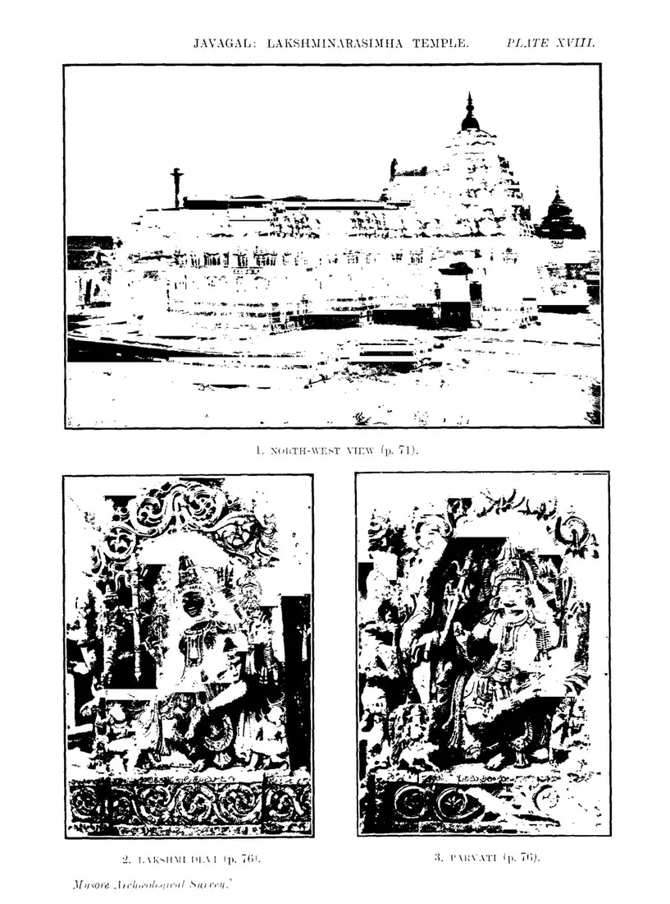
- NORTH-WEST VIEW (p. 71)
- LAKSHMI DEVI (p. 71)
- PARVATI (p. 76)
99. Mahishāsuramardinī—slightly damaged. Sculptor:
Chika-Malitamma.
100, 101. Adhōkshaja with consort.
102. Lady feeding parrot.
103, 104. Mōhinī playing with and feeding cobras.
West of south cell.
105, 106, 107. Lakshmīnārāyaṇa flanked by consorts.
108, 109, 110. Standing Narasimha flanked by ladies.
111. Vaishṇavī dancing (8 hands—rosary, lamba, sword, śānkha, svarga, chakra,shield, kalaśa).
North of north cell.
112. Bhairavī standing with goblins and dog. Six hands (sword, trident, arrow, drum, bowl, bowl).
113. Lady dancing playing on cymbals.
114, 115. Achyuta with consort on right.
116, 117, 118. Lakshmīnārāyaṇa flanked by consorts.
119, 120, 121. Janārdana with consorts.
122. Yōgānarasimha.
East of north cell.
123. Vēṇugōpāla.
124. Dakshiṇāmūrti with coat, cap, danđa and bowl.
125, 126. Upēndra with consort.
127, 128, 129. Lakshmīnārāyaṇa with consorts.
130. Lady with padma and phala.
North-east of Navaraṅga.
131. Lakshmī standing (padma, chakra, śānkha, kalaśa) Kannađa inscription illegible.
132, 133, 134. Upēndra with consorts.
135. Tāṇdava-Gaṇēśa with mouse on pedestal feeding on sweets. Kannađa inscription (
Chika Malitamma.
136. Sarasvatī seated.
137, 138. Hari with consort.
139, 140. Inside porch—concealed by lime wash—Śrī Kṛishna.
The eaves have the usual beaded pendants and dentil kṛitimukhas (?) The parapet, which, of course, covers the outer edge of the double roof, is formed of a series of turrets whose fine sculptures are concealed by thick lime wash. Above the parapet is a low brick wall of recent construction.
Eaves and Parapet
Tower; Porch; Navaranga; Pillars and Ceilings; South and North Cells; Main Sukhanāsi; Garbhagrīha; Mukhamaṅtapa; Gōpura; Lakshmī Shrine; Conservation Note
The stone tower (Pl. XIX, 1) which is of the usual Hoysala type has its sculptured turrets on the three tiers hidden by lime wash and mortar work. A brick pinnacle with a metal kalaśa is now constructed on its top. The projection over the sukhanāsi and its sculptured kīrtimukha are also covered with mortar and lime-wash.
Tower.
The old porch which is flanked by stone benches and supported by round bell-shaped pillars is broadish with complete eaves as at Nuggihalli. Its ceiling has above the eight Dikpālakas, a round gallery of lions with concentric rafters connecting the deep rib beams. The dvārapālas in the porch are ugly and of the Pāllēgār period workmanship.
Navaranga.
The navaranga doorway whose sculptures are concealed by chunām including the dvārapalas and Kālingamardana on the lintel leads into a dark hall of nine aŋkaṇas against the western wall of which stand two turreted niches containing Gaṇēśa and Chāmuṇdā.
Pillars and Ceilings.
The navaranga pillars are of the round bell-shaped kind and have nothing remarkable about them. The ceilings, however, have some points of interest. Commencing from the east doorway and proceeding clockwise they are as follows :—
1. Circular gallery with concentric circles and plain pendant.
2. Eight-pointed star-shaped gallery with octagon and deep padma above.
Image of Agni in lower panel of pendant.
3. Circular gallery with concentric circles above.
4. Śrīchakra gallery with concentric Śrīchakras above.
5. Octagonal gallery on the concentric octagons above.
6. Twelve-pointed star-shaped gallery with similar concentric figures above.
7. Round gallery with concentric circles.
8. Star-shaped gallery (sixteen points) with similar dome.
9. CENTRAL CEILING.—Octagonal gallery with concentric circles above, the beam being very deep.
The doorways are chunām-crusted. In the south cell is an image of Vēṇu-gōpāla, 6' high, with its beauty concealed by a coat of wax. In the north cell is a good group of Lakshmīnarasiniha on a Garuḍa pedestal.
South and North Cells.
A doorway with perforated jambs leads to the sukhanāsi whose flat ceiling has nine padma medallions. The sukhanāsi is used as a store-house for vāhanas while the utsavamūrti is kept in the navaranga.
Main Sukhanasi.
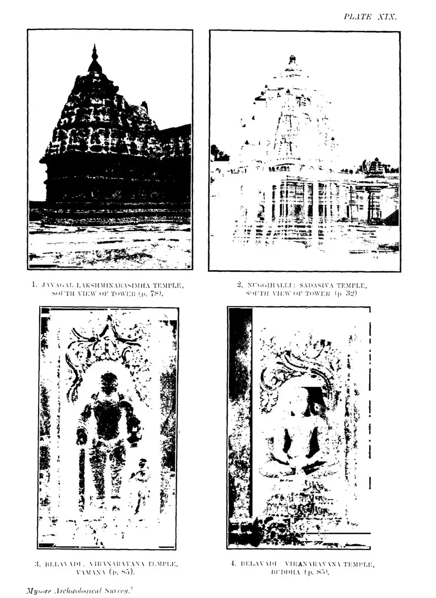
- JAVAGAL LAKSHMINARASIMHA TEMPLE SOUTH VIEW OF TOWER (p. 78)
- NUGGHALLI: SADASIVA TEMPLE SOUTH VIEW OF TOWER (p. 32)
- BELAVADI, VIRANARAYANA TEMPLE VAMANA (p. 85)
- BELAVADI, VIRANARAYANA TEMPLE BUDDHA (p. 85)
The garbhagriha doorway has good dvārapāla groups on the jambs and Gaja-lakshmī on the lintel. In the garbhagriha which has a deep padma dome carved out of a single slab stands on a Garuḍa-pedestal an image of Vishṇu as Śrīdhara (padma, chakra, gadā, śaṅkha). Śrīdhara rarely appears as the main image of any temple.
An ugly mukhamanṭapa of the Pāllēgār period covers the front of the porch. It has two cells one of which is empty and the other contains a recent image of Vishṇu standing. A sculptured wooden pillar, about 6' high, is kept in this cell and is said to be made of the trunk of a Tulasi plant which had grown up on an ant hill in which the image of Lakshmīnarasimha is claimed to have been concealed.
Gopura. The mahādvāra which is about 18' high and 7' broad is made up of granite slabs and is a typical late Vijayanagar construction. The gōpura has entirely disappeared and portions of the mahādvāra itself are rapidly coming down.
On the south of the main temple is a smaller shrine for Lakshmī constructed in the Vijayanagar period with an image of evidently recent workmanship. But the four pillars used for the navaraṅga are large Hoysala pillars of the bell-shape with sixteen-fluted or thirty-two pointed star-shaped plans. They must have been later on brought from some ruined fine large temple of the Hoysala period.
A small manṭapa with an inscription slab in its ceiling of A.D. 1515 stands to the north-west of the temple. Two pot-stone elephants which must have originally flanked the porch are now guarding the mahādvāra.
1. The sculptured walls of the main temple are leaning out and are in danger of falling. Ornamental buttresses might be given to support them.
Conservation Note.
2. The compound which is full of thorns and rubbish should be cleared and levelled and its wall repaired.
3. Many plants are growing on the temple, its platform, the mahādvāra and other parts. These are pulling down the structures. The north wall of the mahādvāra collapsed a year ago. These plants should be removed and the structures reset.
4. When possible the chunām coat covering the sculptures should be carefully removed.
5. The mukhamanṭapa, porch and platform have very uneven floors of slabs. These should be properly set and cement pointed.
6. The navaraṅga, its ceilings and the gods are covered with wax and are very dirty. It appears that the temple is rich and has 4 or 5 servants and a fund of about Rs. 7,000. The renovation of the temple should be taken in hand immediately.
Part II: Study of Ancient Monuments › JāvagalGangādharešvara Temple
About a furlong directly to the north of the Narasimha temple, close to the tank, is a temple of Gangādharēśvara of Hoysala workmanship with a small soap-stone linga on a low pedestal. The doorway of its sukhanāsi has perforated jambs and in front of the navaranga is a closed mukhamantapa or additional navaranga with entrances on the south and the north. The temple has no tower and is intact. But it is now being used as a public latrine by the people of the village.
Īšvara Temple
About 50 yards to the west of the Gangādharēśvara temple is a small Iśvara temple whose sukhanāsi and garbhagriha are completely ruined. In front of its small navaranga, i.e. , on its south, is a small porch with sixty-four pointed star-shaped pillars. By the side of the porch, half-buried, lies a fine pot-stone elephant worthy of being preserved in a museum.
Jaina Basti
To the north-west of the Narasimha temple, about fifty yards away, there is a Jain Basti with plain walls. The front door-way is well ornamented; and, near the top of the outer walls is a row of sculptures of groups of Jinas and dancers and musicians. Their irregularity suggests that the temple must have been constructed out of the materials of an older Basti.
Part II: Study of Ancient MonumentsBeļavāđi
Viranārāyapa Temple
General Description; History; Viranārāyapa Shrine; Outer View; Eaves and Parapet; Tower; Navaranga; The Sukhanāsi and Garbhagrīha; Mukhamaṅtapa; Pillars; Ceilings; Verandah; East Portion of the Temple; Basement; Wall Decorations; Wall Images; Eaves and Parapet; Towers; Sabhāmaṅtapa; Cells; Upparige; Conservation Note
Belavādi is a village on the Bānāvar-Chikkamagalūr road, about four miles directly to the north of Haļēbiđ. It has a large temple whose main deity is known as Vīranārāyaṇa. The temple may be generally considered to be a trikūtāchala or three-celled structure; but it is in fact much more complex than any other known trikūtāchala of the Hoysalas. Its detailed study suggests that it might be studied in two distinct parts: the Western and the Eastern parts. The western part, which is a complete temple by itself, was probably first constructed and then the eastern part was added. The western part consists of a squarish garbhagriha with a sukhanāsi which was originally open, a navaraṅga of nine ankāṇas and an indented square-shaped mukhamaṇtapa. These structures are in the middle of a courtyard, paved with soap-stone slabs and surrounded, for the most part, by an oblong basement. The east portion of this basement still bears upon it part of a cloistered verandah which probably originally enclosed the whole courtyard. On the east of this verandah is a doorway leading to the eastern part of the temple.
This eastern part which is probably an after-thought consists of a large sabhāmaṇtapa of the indented square plan with triple indentations in the corners, with a sukhanāsi and garbhagrīha on the south and north respectively containing images of Gōpālakṛishṇa and Yōgānarasimha. The walls of these two cells are fully sculptured and are different even in plan from those of the Vīranārāyaṇa shrine.
To the east of the sabhāmaṇtapa is a fine large upparige through which originally was the entrance to the temple compound.
When the temples were completed a long inscription in Hoysalā Kannada characters was inscribed on a very large soap-stone slab and set up at the south-east corner of the temple, i.e. , to the right of the Gōpālakṛishṇa shrine. It is a pity that this slab fell down some years ago, was broken into two, and its inscription was almost completely effaced by weather and mischievous boys. The sculptured panel on the top of the inscription is also ruined but since God Nārāyaṇa stands in it with Vēṇugōpāla on his right and Yōgānarasimha on his left it is gathered that when the inscription was set up all the three shrines had been constructed and the temple was complete in its present form. A smaller fragmentary Hoysalā inscription standing closeby is also greatly damaged, but yet gives us the information that in the Śaka year 1128 (A. D. 1206; the second figure, however, is much damaged) some lands were granted under some tank for the worship of god Vīranārāyaṇa. Thus the Vīranārāyaṇa shrine at least was in existence before 1206 A. D. Whether the eastern part of the temple was in existence at that date is not clear, though it can be said that the other deity mentioned in the inscription is neither Vēṇugōpāla nor Yōgānarasimha. It may, however, be stated that the eastern part of the temple and the upparige are at least an after thought, since the cloistered verandah separates them from the western part of the temple.
Around the Vīranārāyaṇa shrine no separate platform appears. The basement has six cornices of which the fourth and fifth from the bottom have uncarved mouldings meant for small kīrtimukhas and makara faces respectively. The wall which is horizontally unbroken by a middle cornice has only thin tall square pilasters of the plainest type with, here and there, a large indented square-shaped pilaster. No other ornamentations appear on this wall. Even the incuse recesses are not so many as in the other two shrines.
Viranarayana Shrine :
Outer View.
11
The eaves with plain under-surface and dentil projections and beaded pendant edge, and the parapet with its row of makara faces and highly ornamented figure-bearing tōraṇas are similar to the corresponding parts of the other two shrines. The parapet, however, runs round the whole temple including the manṭapas.
The soap-stone tower with three tiers of turrets and large stone kalaśa on the sikhara is also similar with the corresponding parts of the other two shrines. The Saṭa group over the front projection has disappeared from all the three and the kīrtinukha in front of the west tower has a standing image of Vishṇu. The chief images on the west tower are:—Vēṇugōpāla, Kālīngamardana, various forms of standing Vishṇu, Yakshas and Yakshiṇīs.
The navaranga doorway is comparatively unworked except for the dvārapālas and the Gajalakshmī lintel. The hall which is about 25' square was originally completely walled in except near the doorways and must have been quite dark. A large window about 2' x 3' has recently been opened in the south wall. Through its crevices can be seen the fact that the inner and outer walls of the temple are entirely different. The navaranga pillars, though large, are of the usual round bell-shaped kind. The navaranga has plain straight walls with intervening star-shaped and pond-shaped pilasters and has no niches.
The hall has nine ceilings, all domed. They are, from the east running clockwise:
1. Round gallery with concentric circles.
2. Eight-pointed star-shaped gallery with octagon above and a padma on top. Through a crevice here can be seen the double roof of the temple. It could be entered from the top. The upper roof is supported by a series of low pillars placed on top of the lower pillars and is sloping on the sides. From this hollow in the roof the inner part of the tower could also be entered as at Hullekere, etc.
3. A gallery of sixteen blunt points with concentric circles above.
4. Śrīchakra gallery with concentric Śrīchakras above.
5. Octagonal gallery with concentric octagons.
6. Star-shaped gallery of twelve points with similar concentric figures above.
7. Circular gallery with concentric circles.
8. Sixteen-pointed star on two tiers of slabs with a fine padma above.
9. Central. —On an octagonal cornice bearing the eight Dikpālakas is a round gallery with groups of Saṭa fighting two lions together. Above the rafters are concentric circles with a large plain pendent band in the middle.
The sukhanāsi appears to have been open at first. A doorway of roughly worked slabs now separates it from the hall. The
The Sukhanasi and Garbhagriha. sukhanāsi ceiling is a dome with an octagonal gallery and concentric circles above. The garbhagriha doorway whose sculptures are hidden by lime-wash is comparatively large and admits into the garbhagriha which has a flat ceiling of sixteen squares ornamented by rosettes. The image of Vīranārāyaṇa (which is about eight feet high from the ground including the pedestal) stands on a Garuḍa pedestal. It is a fine image, beautifully carved and elaborately ornamented. Its four hands are thus disposed : śaṅkha (the symbol has disappeared leaving only two bits sticking), padma, gadā and chakra (broken). The broken symbols deserve to be restored in gold or silver. The god is flanked by consorts and the serpentine tōraṇa has the usual ten avatāras on its edge. ✓
Outer view: The mukhamanṭapa has five comparatively plain cornices with a row of pilasters and rosettes between the fourth and fifth from bottom. The eaves and turrets and the slanting railing running all around are unworked.
The eaves are wider and heavier than around the main temple. This manṭapa is of the plan of an indented square and has a stone bench ornamented with rosettes and pilasters on its face running all around the edge except near the two doorways.
The pavilion is supported on twenty-two pillars, twenty of which are of the round bell-shaped kind. The other two pillars at
Pillars. its east end, however, are star-shaped with thirty-two points.
A domed porch connects this manṭapa on the east with the stone verandah and appears to have had stepped entrances on the south and north which are now walled up.
The ceilings are in order as follows commencing from the east and running clockwise first in the outer circle and then in the middle one :—
Ceilings.
1. Above porch : gallery of broken octagon with concentric circles.
2. Circular gallery with concentric circles.
3. South end : Circular gallery with concentric circles.
4, 5. West end: similar to No. 1.
Inner Square.
6. Octagonal gallery with octagons above.
7. Twelve-pointed star-shaped gallery with similar figures above.
8. Square upon square placed corner-wise.
9. Twelve-pointed star gallery with similar figures above.
10. Circular gallery with concentric circles above.
11. Twelve-pointed star with similar figures above.
12. Circular gallery with concentric circles.
13. Twelve-pointed star gallery with concentric circles.
14. Central. —On an octagon rise three concentric rows consisting of trefoils (similar to the Nāga symbol or fleur-de-lis with upturned arms).
To the east of the connecting porch now stand five soap-stone aṅkaṇas supported by smallish round bell-shaped pillars.
Verandah. To the north and south of this structure continues a soap-stone basement with evident signs of having borne a verandah (now disappeared) which must have enclosed the courtyard.
The eastern portion of the temple, which has already been generally described is connected with the western by a doorway which is now the only entrance to the western part of the temple. Its only entrance is on the east and is supported by large soap-stone elephants, well-shaped, with four tusks each. (Pl. XX, 1).
The basement of the eastern part of the temple has four cornices around the manṭapa and six around the cells. These are mostly unworked except in a few places here and there and are similar to the cornices of the main temple except that the third cornice from the bottom is flat. The manṭapa has the bottom four cornices while above them is a row of pilasters with intervening sculptures surmounted by towers flanked by lions and Saṭa groups. The sculptured figures are generally those of seated Yakshas and Yakshiṇis. Above these are the slanting railings, portions of which bear finely sculptured panels between the pilasters. The interesting figures are, commencing from the south-east of the entrance :
1. Bhīma fighting the serpent king.
2. Balarāma persuing Arjuna (?) who is carrying off Subhadrā.
3. Paraśurāma slaying his mother.
4. Vēṇugōpāla with cows, cowherds and cowherdesses.
5. Kṛishṇa slays Dhēnukāsura.
6. Kṛishṇa hurls Gardabhāsura.
Corner.
7. Kṛishṇa slays Hayāsura.
8. Gōvardhanadhāri.
9. Kṛishṇa informing Arjuna, while bathing, of the demise of Abhimanyu.
Corner.
10. Kālingamardana.
11. Two monkeys fighting.
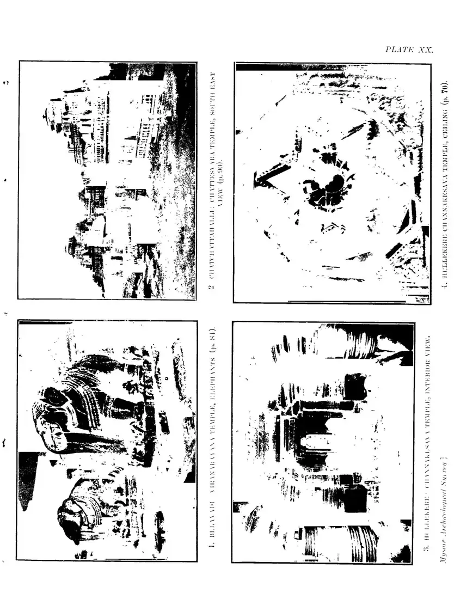
- 2 CHATCHATAHAMLEJ: CHAPTESA VIA TEMPLE, SOUTH EASE VIEW (p. 90)
- BELAJADI VIRANAYANA TEMPLE, ELEPHANTS (p. 84)
- HULEKERE CHANNAMSAYA TEMPLE, INTERIOR VIEW Misore. Mechanical Statue ]
- HULEKERE CHANNAKESANA TEMPLE, CELLING (p. 70)
12. Mōhinī molested by monkey.
13. Mōhinī and Bhasmāsura.
14. Couples at love.
15. Dancers and musicians (south).
North railing—unworked.
The walls of the cells above the basement have the horizontal dividing cornice without a scroll band and the lower part is much wider than the upper one. The latter contains on single or double pilasters turrets of comparatively plain workmanship. The lower part which is larger than at Hārnahaļļi and elsewhere contains large wall images, about 2\frac{1}{2} ' high, with scroll work on the pedestals and creeper tōraṇas above. These latter declare the shrines as having been built in the thirteenth century. The large images are fully ornamented though their limbs are thickish, their legs proportionately too short, their bulging toes forward and their faces rounded. They strongly remind us of the Sōmanāthapur images, though here and there is an exceptional figure which attracts our notice like Buddha and Vēnugōpāla.
The images on the outer walls of the Gōpālakrīshṇa shrine commencing from the east are:—
Wall Images.
East Face—
1. Harihara (rosary, trident, charka, šańkha).
2. Garuđa.
3. Nārāyaṇa.
4. Kēśava.
5. Vāmana (Pl. XIX, 3) the dwarf holding stick and kamaṇđalu with a lady attendant.
6, 7, 8, 9, 10, 11, 12. Vishṇu (gadā, padma, šańka, chakra) standing flanked by a consort and two lady attendants on each side.
13. Dhyanī Buddha without ushṇīśa. (Pl. XIX, 4.) This occurs very rarely in Hoysaļa sculptures, being found generally only on the prabhāvaļi of the main images.
14. Vēnugōpāla.
South Face—
15. Kāļingamardana.
16. Garuđa.
17, 18, 19, 20, 21, 22, 23. Purushōttama flanked by consort and two chāmara-dhāriṇīs on each side.
24. Standing Narasińha.
25. Šrīdhara-standing.
West Face—
26. Nārāyaṇa.
27. Arjuna shooting the fish target.
28, 29, 30, 31, 32. Gōvardhanadhāri with a consort and a chāmaradhāriṇi on each side.
33. Paraśurāma.
34. Gōvinda.
35. Halāyudha.
36. Four-handed Lakshmī (padma, chakra, śankha, phala).
37. Srī Rāma—two-handed, with arrow and bow.
38. Dharaṇīvarāha—unfinished. (End of South Cell Wall).
North Cell Wall.—
The wall images commencing from the north-west and proceeding clockwise are :
West wall—
39. King standing with two hands about to join in aṇjali—Prahlāda (?)
40, 41, 42. Yōgānarasiniha with a chāmaradhāriṇi on each side.
43, 44, 45. Vishṇu as Vāmana flanked by consorts.
46. Halāyudha.
47. Garuḍa.
48. 49, 50, 51, 52. Pradyumna with a consort and chāmaradhāriṇi on each side.
53. Garuḍa.
54. Śrī Rāma.
55, 56. Vishṇu as Śrī Kṛishṇa standing. Consort on left.
North wall—
57, 58. Kēśava with Lakshmī.
59, 60. Mōhinī with mirror and chāmaradhāriṇi on right.
61, 62, 63, 64, 65. Pradyumna with a consort and lady attendant on each side.
66, 67, 68, 69. Standing Narasiniha with two consorts and a chāmaradhāriṇi—all on left.
East wall—
70, 71. Vishṇu standing—symbols except padma broken. Consort on right.
72, 73. Paraśurāma with lady attendant.
74, 75, 76, 77, 78. Vishṇu as Vishṇu with consorts and attendants.
79, 80. Kalki. two hands with sword and shield. Garuḍa on left.
81, 82. Dharaṇīvarāha with consort on left.
83, 84, 85, 86, 87. Kālīṅgamardana—dancing on the cobra with musicians accompanying, ḍavaṇe, rudravīṇa, tāla, mṛidaṅga, cymbals.
The eaves on the south and north cells are narrow and have beaded edges like those of the main cell. But the eaves of the sabhāmaṇtapa are very different in character. They are large and heavy with a deep 'S' form and have on the under surface imitation beams and rafters. The parapet of the whole temple is uniform in character being composed of richly ornamented turrets, similar to those of the main temple. The sculptures contain Sala groups, Yakshas, lions, makaras, various forms of Vishṇu, etc. The important ones are—
(1) Over the East entrance: Śrī Rāma with Sīta, Lakshmaṇa and monkeys below, Sala fighting two lions like Gilgamesh ;
(2) South-east corner : Kālingamardana and Vēṇugōpāla
(3) South-west of sabhāmaṇtapa : two men fighting ;
(3) South of navaraṅga : Lakshmī-Nārāyaṇa, Mōhinī ;
(5) North of navaraṅga : Yōgānarasiniha.
(6) North of mukhamaṇtapa : Halāyudha.
(7) North-east of sabhāmaṇtapa : Hanumān, Buddha, Kalki, Rāma slaying the golden deer.
The south and north towers are similar to the west tower in almost all main features having three tiers of turrets ornamented with kīrtimukhas. In these latter are varied sculptures similar to those on the parapet. The noteworthy ones are :
South Tower—
Lakshmīnarasiniha, Yōgānarasiniha, Ugranarasiniha, Buddha, etc.
The panels in front of the projections of the tower contain :—
South :— Vishṇu.
North :— Vishṇu.
Main :— Janārdana — partly worked.
The sabhāmaṇtapa is a large pavilion of thirty-nine aūkaṇas and of the indented square plan with triple indentations. Its roof is borne on forty-six pillars of the round bell-shape type, while all around it except at the four entrances is a stone bench.
Sabhamantapa.
Originally the south and north sukhanāsis also were open. On the inner face of the bench is a row of elephants as at Arsikere in various attitudes often fighting or marching with men. Each elephant is about 18" high. A few of the elephants are, however, unworked. The bell-shaped pillars have either flat-beaded pendants (worked on only one pillar) or bulging round-bellied bells for leaf-shaped panels as at Kubaṭūr and Nādkalasi.
The ceilings are mostly flat and ornamented with shallow lotuses. The exceptions are three ceilings:
1. South-south-west, second square: A fight. A hero fighting three others one of whom holds his arms back. Around the central panel are a large number of fighters.
2. Near west doorway: Vēnugōpāla surrounded by dancers and musicians in an ornamental creeper grove with a row of cows on edge. Šańkha and chakra are worked alternately in the second series of convolutions.
3. Next to the above from the east: Kālīngamardana surrounded by two ornamentally intertwining serpents, a creeper scroll and a ring of cows.
South shrine. —A comparatively plain doorway with dvārapālas and imitation perforations on the jambs and a Gajalakshmī lintel and a
Cells.
well ornamented top panel with five towers and creeper ornamenation, leads into the sukhanāsi which was originally a part of the sabhāmaṇṭapa. A similar doorway without the imitation perforations gives admission to the garbhagrīha which has a flat ceiling ornamented with padma medallions. In the cell on a Garuđa pedestal is a fine large image, about 7' high, of Vēnugōpāla. This image unlike that at Sōmanāthapur wears a well ornamented kirīṭa. But in other respects it is similar. Each jamb bears a consort, cows, and cowherdesses and rīshis while the symbols of Vishṇu (šańkha, padma, gadā, charka) are shown in the background. The god stands under a manī-tōraṇa above which is the kalpavrīksha (whose fine carving is covered by chunām). The ten avatāras do not appear on the prabhāvalī. The image of the god is finely made and intact. Its legs are crossed and some of its fingers are lifted as if in the act of playing on the flute. The image is covered with hardened wax and its face bears caste marks uncleaned for many years. It requires to be carefully cleaned.
North cell. —The north sukhanāsi and north cell are quite similar to the south ones except that the north ceiling bears a shallow dome with a padma in the centre. The image of Yōgānarasimha, about 6½' high, shows the god seated on a Garuđa pedestal in the utkulīkāsana. He wears a fine kirīṭa, longish horse-like ears, an exaggeratedly wide mouth and protruding eyes. His back hands hold the chakra and šańkha while the front ones rest loosely upon the front knees which are supported by a jewelled band. On the outer edges of the serpentine tōrana appear the ten avatāras. The image is a grand one and shows the mighty ferocious god in an attitude of peaceful contemplation.
The upparige is a large impressive structure which shows the character of the purely Hoysaļa mahādvāras. It is a large high building consisting of a hall, about 25' square, and a spacious porch. Viewed from the outside we notice
Upparige.
that the basement with its usual cornices is plain, that the outer wall is ornamented only with plain long pilasters and that the roof over the outer square is sloping while the central roof is flat. The building stands on a high ground and is approached by a flight of steps at the top of which is the entrance to the porch flanked by two soap-stone elephants. Similar elephants flank also the western entrance of the upparige . A stone bench runs around the porch and the partly ruined slanting railing at its back is unornamented. The ceiling of the porch has only six large padmas and its roof is supported by four bell-shaped columns on each side. The doorway has dvārapālas on the jambs and Gajalakshmī on the lintel. The inner view of the hall is imposing because of its height which is about 17' and by the graceful shape of the bell-shaped columns which are tall and slim, unlike the usual fat types met with elsewhere. The proportions of these pillars, the plain pilasters on the outer walls and the sloping roofs create a suspicion that the building might belong to even the eleventh century (compare Kubaṭūr and the Jain Basti at Śriṅgēri). But the pillars of the porch and the fact that it is only a gateway show that such a structure could be constructed even about 1200 A.D.
The distance between these large pillars is about 12' and the design of the ceiling is nine squares each having a lotus.
The temple of Vīranārāyaṇa is an important monument in the State for its architecture, sculpture, magnitude and nearness to Haļebīđ. ✓
Conservation Note. But it is in an unpardonably neglected condition. The village of Beļavāđi and its lands probably belonged to this temple. Now they form part of the Śringēri mutt whose administration ought to pay immediate attention to the renovation of this beautiful temple.
1. The upparige which is used now as a cow-pen and has its roof and walls in a dangerous condition should be repaired, its flooring and its steps reset and cement pointed.
2. It should be provided with a battened wooden door.
3. The courtyard, part of which is being used as a public latrine, should be cleared and levelled and a compound wall put up around the area; some houses in the neighbourhood being acquired, if need be.
4. Against the compound wall may be constructed accommodation for the ratha and the stores as also for the necessary kitchen and yāgaśālā when funds permit.
5. The roof of the building generally is overgrown with grass and thorns which should be removed. The roof of the navaraṅga has two large rents with many smaller ones which give free admission to the hollow double-roof. Bones of small animals like dogs or goats lying in the hollow showed that sometime ago the roof had been used as a lodging by a cheeta. This roof should be immediately repaired, the stones being reset and a concrete coating of sufficient strength and thickness being given.
12
6. The cloistered verandah of the main temple is coming down rapidly. The ruined part of it may be removed, that is, all except the three front ankanas, its mud walls cleared and the earth lying about it removed and levelled.
7. The main navaraṅga is dirty and dusty. It should be cleaned. Another window may, if need be, be opened in the north wall.
8. Above the south window the walls should be re-examined since there is a hollow gap between the inner and outer wall.
9. The sculptures and the deities of the temple should be well cleaned (with petrol and washing soda).
The total expenses which may come to nearly Rs. 10,000 may be provided by the Śringēri Jahagir or Government as the Government desire. The repairs are urgent and must be attended to immediately to save the beautiful monument.
Part II: Study of Ancient MonumentsChaṭchathalī
Chaṭtēšvara Temple
General Description; History; Basement; Walls; Eaves and Parapet; Towers; Porch; Navaranga; Pillars and Ceilings; The Main Cell; North Cell; East Cell; Conservation Note
(Pl. XX, 2).
About three miles east-north-east of Hałebiđ is a small village named Chatchaṭhalĵi which contains a trikūṭachala temple dedicated to Śiva as Chatṭēśvara. The temple faces directly to the south and is of plain workmanship. It contains three cells all of which are squarish in plan slightly indented. The main cell of Chatṭēśvara is to the left of the navaraṅga facing east. The cell facing the navaraṅga door contains Vishpu facing south, while the third cell containing an image of Sūrya faces west.
History. The temple was constructed by Chatṭadanāyaka, a Hoysala officer under king Ballāla II about the year 1200 A. D. It has two inscriptions, one on a slab to the east of the porch and another on a beam inside the navaraṅga near the entrance.
Basement. The temple appears to have been built on a floating foundation over which rises the basement containing five cornices. The third and fourth cornices from the bottom were evidently meant to receive the usual ornamental designs of makara mouths and cross moulding kīrtimukhas.
Walls, Eaves and Parapet. The walls are all plain with small square pilasters set in at the corners. The eaves are plain with unworked under-surface and edges. The parapet is composed of a series of turrets with ornamental carvings on the dentil projections and śikharas.
Of the three towers, the north one has collapsed and the remaining two are made each of three tiers of unornamented turrets, with unsculptured mouldings. The kalaśas are missing from the śikharas. The western tower however has a few sculptured panels containing Yakshas and Tāṇḍavēśvara. The projections over the sukhanāsis have neither the Saṭa groups nor sculptured panels.
The porch is entered by a flight of steps flanked originally by turreted niches. On either side of the porch are stone benches backed by unworked railings. The roof is supported by two soap-stone pillars of the usual bell-shaped kind and contains a ceiling consisting of an octagonal gallery with three concentric octagons and a plain pendant above.
The navaraṅga doorway is comparatively plain but for two indented square shaped pilasters, two Śaiva dvārapālas, and a Gajalakshmī lintel. The navaraṅga (20' × 20') has nine ankaṇas, the central one being the largest. One of the central dome beams has a fine eight-pointed star-shaped Śrīchakrā with an inset padma. The design is beautiful and is in high relief.
The four central pillars are of the thickish bell-shaped round type without Pillars and Ceilings. detailed ornamentation.
The nine ceilings are all domed and are running clockwise from the south door :—
1. A square with a frieze of swans, with a circular gallery and with concentric circles above.
2. Round-edged Śrīchakrā gallery with similar concentric figures above.
3. Concentric octagons with octagonal bud.
4. Square gallery with similar squares above.
5. Three concentric circles.
6. Seven-pointed stars over similar gallery.
7. Concentric circles.
8. Eight-pointed star-shaped gallery with similar figures above.
9. Central : Round gallery with eleven-pointed concentric star above.
Inside the navaraṅga against the west wall are pedestals bearing the mouse and the lion showing that originally there were Gaṇēśa and Mahishāsuramardinī. These were robbed and have now been replaced by a recent Vīrabhadra and a Hoysaṭa Bhairava brought from elsewhere. A small bull is also placed in the navaraṅga.
The main cell is the only one with a doorway for its sukhanāsi. The latter has above the dvārapālas, square perforations on the jambs and a Gajalakhshmī lintel. The sukhanāsi ceiling is flat. The garbhagrīha doorway has dvārapālas and an unworked Gajalakshmī lintel. The garbhagrīha which has a flat ceiling has a small natural linga.
The sukhanāsi of the north cell is open and contains a domed ceiling with concentric circles and the pendant missing. Through a crevice in this dome is seen the double roof of this building.
North Cell.
A plain unworked doorway leads into the garbhagrīha which has a flat ceiling. In it on a worn out Garuđa pedestal stands a Vishṇu image whose symbols are all broken. It is probably Kēśava. It is about 6 feet high in all and is flanked by consorts and chāmaradhāriṇī. Around the serpentine tōraṇa are the usual ten incarnations of Vishṇu.
The open sukhanāsi of the east cell is similar to the north one, but has a flat ceiling like that of the main sukhanāsi.
East Cell.
The east garbhagrīha doorway is also plain and the cell, which has a flat ceiling, has a fine Sūrya image on a seven-horse pedestal. The god's face has been recently retouched and spoiled. Otherwise it is a good piece of sculpture. On each jamb is a Chhāyā while on the prabhāvaļi there are the twelve Ādityas.
1. The temple is considerably damaged and cannot be set right without much expenditure. It would be enough to prevent it from
Conservation Note.
2. The collapsed stones of the north tower may be removed to relieve the walls from weight.
3. The plants growing on the building may be rooted out and the roof remade with concrete.
4. Some props may be given to the walls where they are dangerously out of plumb.
5. The village Patel or Chairman may be given an allowance of Rs. 2 per mensem to keep the plants from growing.
Vishṇu Temple
To the south-west of the Chatṭēśvara temple, about 50 yards away, is a porch, a navaranga doorway and part of a wall of a Vishṇu temple which has now disappeared. Its front beam has an inscription of about 1200 A.D. and its walls have four images of Vishṇu as Kēśava and Śrī Kṛishṇa standing with consorts. The temple must have been a good one. Some of its stones are of darkish soap-stone like the images of the Nagarēśvara temple at Haļebīđ. The sculptures are fit to be removed to a museum.
Part II: Study of Ancient MonumentsDoddagaddavallji
Lakshmīdēvī Temple
General Description; History; Basement and Walis of the Main Temple; Parapets and Towers; Navaraṅga; Kāļī Shrine; Lakshmī Shrine; Vishṇu Shrine; Liṅga Shrine; Bhairava Temple; Prākāra and Cornei Shrines; Gateways and Porches; Conservation Note
Dodđagaddavalli is a village about 1½ miles directly west from the spot of the main road of Hassan-Belur where the 9th milestone and the stone indicating the boundary between the Kāvērī and the Krīshṇā basins stand. A pathway passing over a low hill leads to the village whose surroundings can clearly be seen from the crest of the hill behind Girihalli.
The temple with its many towers attracts the eye even from a distance. In fact this is one of the features for which it is of interest. The other two features are that it is a temple of four cells artistically arranged in plan and that it is a temple of Lakshmī where the goddess is the chief deity. But for these features the temple has nothing extraordinary about it. In a wide stone compound entered through a porch on the south and formerly through yet another in the north stands the temple with its four towers, three of which are of the stepped pyramid design. Four more similar, but smaller, turrets crown the four shrines which occupy the corners. The exception is the tower over Lakshmī which is more nearly of the multi-turreted kind. In plan the temple is closely a Latin cross with its head to the south and two entrances leading into it through each side of its long tail. A small Virabhadra shrine of the Hoysaļa days is built to the north-east of the temple. These with the four corner shrines give us in all nine shrines with nine towers.
In the absence of inscriptional evidence the archæologist would probably ascribe the temple to the late Chālukyan or very early Hoysaļa period owing to the comparative plainness of its walls and towers and the occurrence of the stepped pyramid. But inscriptional evidence definitely shows (Hassan 149) that the temple was constructed in the year 1113 A. D. in the reign of Vishṇuvardhana Hoysaļa by a merchant Kullahana Rāhuta and his wife Sahajādēvī. This couple founded the village of Abhinava-Kollāpura, otherwise known as Gaddumballi and constructed the temple of Mahālakshmī. Subsequent inscriptions of the reign of Ballāļa and others inform us of the numerous grants made to the temple. But there does not appear to be any extraneous structure built later on or otherwise engrafted on the temple. The Bhairava and corner shrines also are architecturally similar to the main building though it is possible that they were put up slightly later.
History.
Since the temple is built on a slope descending slightly towards the east and the ground level beyond the compound on the west is higher than that of the temple compound there is not even the suggestion of a platform below the temple. The basement or that part of the outer wall which seemingly performs that function, has the usual six cornices with the mouldings of numbers 4 and 5 unworked. Above the basement is the wall which has no horizontal cornice and has, in addition to the usual large and corner pilasters, turrets and turteted canopies borne on single or double pilasters. The turrets also are comparatively simple in design consisting mostly of dentil cornices and square-planned śikhara, with round stone kalaśa. They remind us more of the simple turrets at the Bēlūr temple than of the elaborate and highly complex turrets of the thirteenth century like those of Sōmanāthapur. Above the double pillar canopies the turrets are mostly in the shape of single storeyed niched shrines with or without pillars while above the turrets borne on single pilasters are serpentine tōraṇas issuing from simhalalāṭas. The pillared niches are finely designed. Under the canopies no sculptures exist except a Kālī figure on the east wall of Kālī shrine.
The eaves and parapets have no ornamentations except the unworked dentil cornices. The towers, however, are of two classes. All Parapets and Towers. the towers of the temple except that over the Lakshmī shrine are of the simple stepped pyramid design with no ornamentation either on their edges or on the dentil mouldings. The steps are more correctly eaves-shaped cornices with a moulding running along the lower edge for receiving the beaded pendants and the trapezoid teeth meant for kīrtimukha arches. Each tower has eight or nine such stepped cornices rising from a square bottom, whose angles are indented. Each cornice appears in reality to be only a conventionalised abbreviation of a storey, so that these vimānas depict a many storeyed building in a highly conventionalised form. The tower over the Lakshmī shrine, however, is raised on a different principle. It has two tiers of small towered shrines rising one above the other. Their prototype is found in the Pallava architecture of Māmallapuram, whereas the stepped pyramid would more properly be derived from similar stepped structures of the Chālukyan Empire.
The turrets of the Lakshmī shrine have on their śikharas and in their interspaces small kīrtimukhas and tōraṇas respectively bearing Yakshas or ornamental rosettes. Each tower has a projection over the sukhanāsi on whose front face is a kīrtimukha with an unimportant sculpture and above which is a Saṭa group. Out of the nine Saṭa groups the temple originally had, one that was on the north-east corner shrine is missing.
Each tower has on its śikhara a fine large stone kalaśa adorned with beaded hangings which go around its girth.
The navaranga which is of modest size is entered by two doorways of which the east one is plain and the west one ornamented. On the outer side of each jamb is a Vaishṇava dvārapāla on a pedestal borne by lions and gryphons. The jambs which bear the usual rosette, scroll and ropebands with eight-pointed star-shaped pilasters bear a lintel with a frieze of lions and unworked central panel. Above it are four turrets with an unworked kīrtimukha in the centre.
The navaranga which is roughly an oblong hall is composed really of two navarangas each of nine aṅkaṇas and each having round bell-shaped pillars. The eastern part has stone benches running around its sides which are closed with plain pierced windows. The two parts open into each other freely and have no dividing wall. The most interesting things in the navaranga are the two sculptured Bhētālas on its extreme south which guard the door to the Kālī shrine. Each Bhētāla is shaped like a conventionalised skeleton with dishevelled hair, protruding eyes, large ear-rings, open mouth showing fangs and projected tongue. They are both male and show exaggeratedly large sexual organs, being stark naked. The west one whose hands are broken has other goblins attending upon it, while the east one has a sword in right hand with the severed head of a bearded man and a bowl in the left. They are interesting images and unique in their conception and execution since colossal Bhētālas (each is about 6\frac{1}{2} ' high) are not found elsewhere in the Mysore State.
The ceilings are mostly well-designed, though none of them has a true dome. They are either flat or have shallow imitation domes carved out of single slabs with round sculptured panels in high relief. The central ceiling of the western part of the navaranga has a male dancing figure playing on the vīṇā which is probably Virabhadra. The ceiling to its north has a flying Kāpāli with sword and bowl in his two hands. The outer square of the eastern part, however, has the eight Dikpālakas. But the sculptures of the central ceiling are weathered away.
Though the temple is named after Mahālakshmī even by the founder, the most important place is occupied by the Kālī shrine. It has no sukhanāsi and the cell is entered by a doorway on each jamb of which is Mōhinī dancing, while the lintel bears the face of Kālī with the fangs and tongue appearing in the partly opened mouth. Goblins support it on either side. The design is rare.
In the cell which has a shallow padma ceiling is a pedestal on the face of which a goblin is seated playing on a pot-drum on the mouth of which is stretched a parchment and around which is a snake. The goddess is seated in sukhāsana on the prostrate body of a Rākshasa and holds in her eight hands—sword, mace, trident, arrow, drum, pāśa, bow and bowl. Her fangs are protruding from the corners of her mouth, and she wears jaṭā-makuṭa and sarpakuṇḍala. On the
Kali Shrine.
prabhāvaļi is a host of goblins playing on musical instruments eating or brandish-ing swords.
✓ The sukhanāsi of the Lakshmī shrine is entered by a very plain soap-stone doorway which probably was a later insertion, the original Lakshmi Shrine . An ornamental doorway with a Tāṇḍavēśvara lintel leads to the cell of Lakshmī which has a small niche in the south wall and a shallow padma ceiling. The image stands on a pedestal with a poorly carved padma on its face. The goddess who is about 3' high excluding the pedestal stands in samabhaṅga with an attendant on each side and holds in her four hands rosary, śaṅkha, chakra, and phala with gadā. She wears a kirīṭa with nimbus, makarakuṇdala and other ornaments. She has no tōraṇa at all, an unusual fact in Hoysaļa sculpture. She wears shorts, her upper body being quite bare. Her body, though small waisted, is too large round the breasts and hips to be slim; and her face cannot be considered to be faminine. Her lower jaw is squarish and its front is vertically too narrow. Her feet and hands are so lacking in finish that a doubt arises whether this is the original image at all. The image could more properly be ascribed to the fourteenth century rather than to the early part of the twelfth. However, if the image is really one of 1113 A. D. it is a poor specimen of Hoysaļa workmanship.
The southern shrine whose doorway and ceiling are similar to those of the others has a lintel on whose panel is seated Yōgānara-simha. In the cell is a large Garuḍa pedestal on which must have stood formerly a Vishṇu image. Since this has been lost, a small Bhairava image is now kept.
The cell which faces east is that of the Liṅga known in the inscriptions as Bhūtanātha and popularly called Virūpāksha. In the open sukhanāsi are kept a mutilated Shaṅmukha on peacock, a Gaṇēśa, a small recent bull and other stones. The doorway and ceiling are similar to the others and the fat-headed liṅga which is of medium size has nothing peculiar about it.
The Bhairava shrine which is to the north-east of the Lakshmī shrine is an independent and unconnected building by itself and is also of the Hoysaļa period and has a sukhanāsi and a garbhagrīha. Both the doorways have ornamental frames but on the sukhanāsi lintel is Dakshiṇāmūrti seated in yōgāsana and on the garbhagrīha lintel is Kālī's face. The garbhagrīha jambs, however, are of greater interest since they have on the right Mōhinī and on the left Dakshiṇāmūrti, while to the outer right is a man tearing his own abdomen and drawing out the entrails and on the right is another treading on the head of a fallen man and cutting his own throat with a sword.
In the cell on a pedestal bearing a dog in relief is an image of Bhairava supported by goblins. The image is intact except that it has lost the front right hand which held the sword.
The prākāra or compound wall is of soap-stone and about 3' thick and 7' high.
Prakara and Corner Shrines.
The corner shrines which face north or south only have ornamental doorways with Lakshmī on the lintels. What deities they originally contained, it is not possible to understand.
An ornamental doorway with Gajalakshmī lintel leads into the compound from the east and just outside it is a basement of a porch of one ankaṇa which has now disappeared. A similar doorway connects the compound with a large entrance mantapa on the west, which has nine squares supported by round bell-shaped pillars and stone benches with rounded railings at the edges. The doorway has a mutilated Gaṇēśa on its lintel, while the eight Dikpālakas adorn the central relievo-panels of the shallow domes of the outer square. The middle square, however, has the figure of Tāṇdavēśvara in relief. The railings are plain. The existence of the more important porch on the west suggests that the main road of the temple must have run close to it.
On the east of the temple beyond the porch is a broad flight of steps leading down to the tank. The situation of the temple close to the tank gives it much attractiveness.
The Mahālakshmī temple at Doddagaddavaļli, though comparatively plain in its sculptural work, is a monument of much importance owing to its plan and early date. It fully deserves to be conserved.
Conservation Note.
1. The chunām encrustations on its doorways and sculptures should be removed.
2. The towers and compound walls have been pointed with white cement which shows glaringly against the dark stone. Coloured cement should be used.
3. The pavement of the courtyard should be cement-pointed with an outlet for water on the south-east.
4. The western porch should be repaired, its pavement being re-set and cement-pointed and its railings re-set.
5. When possible, the approach to Doddagaddavaļli from the road should be improved by the construction of a motorable road.
Considerable repairs have been done to the temple in recent years.
13
PART—III NUMISMATICS.
Part III: Numismatics
COINS OF THE WESTERN CHALUKYAS
(PLATE XXI 4.)
Early Chālukyas of Bādāmī
Boar and Lotus
No heading in the body: this section starts at its printed page (98).
Type A:— Boar and Lotus.
1. Ai. '55 Flat and thick, double die struck. Wt. 57'2. Metal inferior. 1
Boar and Five Punch Marks
No heading in the body: this section starts at its printed page (98).
Obverse:—Large caparisoned boar to right, with sun and crescent moon with pellet above.
Reverse:—Large rude eight-petalled lotus.
The boar was the crest of the Chālukyas and the lotus connects this coin with the Kadamba issues. The weight is clearly the later Chālukya standard. The use of double dies suggests the times when punch-marking had not yet revived. The coin may belong to the reign of Pulikesin I (C. 550-566) whose son Kirtivarma subdued the Kadambas 2 .
Type B:— Boar and five punch marks.
2. Ai. Wt. 57'2. Cup shaped, and outline irregular.
Obverse:—Small boar to right in centre with a partly visible lotus above it, both struck from the same die. Around five punch marks:—
(1) & (2) Highly conventionalised Śrī in old Kannađa.
(3) Eight-petalled lotus almost obliterating the die-struck lotus.
(4) Conch.
(5) Strung bow.
Reverse:—Striated, the lines forming a rough square.
The Śrī and lotus are like what are found on later Yādava coins; and the conventionalisation of Śrī suggests the existence of earlier issues. The common irregular outline and concave obverse connects this type with the Yādava era and the eleventh century more than with the early Chālukyas, to whom it is usually attributed. Possibly it was issued by one of the Early Yādavas who was subordinate to the Western Chālukyas. The marks appear to signify the suzerainty of the Chālukya boar over the Chera bow, the Yadava lotus and the (Pallava ?) conch.
2 Rice: Mys. and Coorg, P. 63.
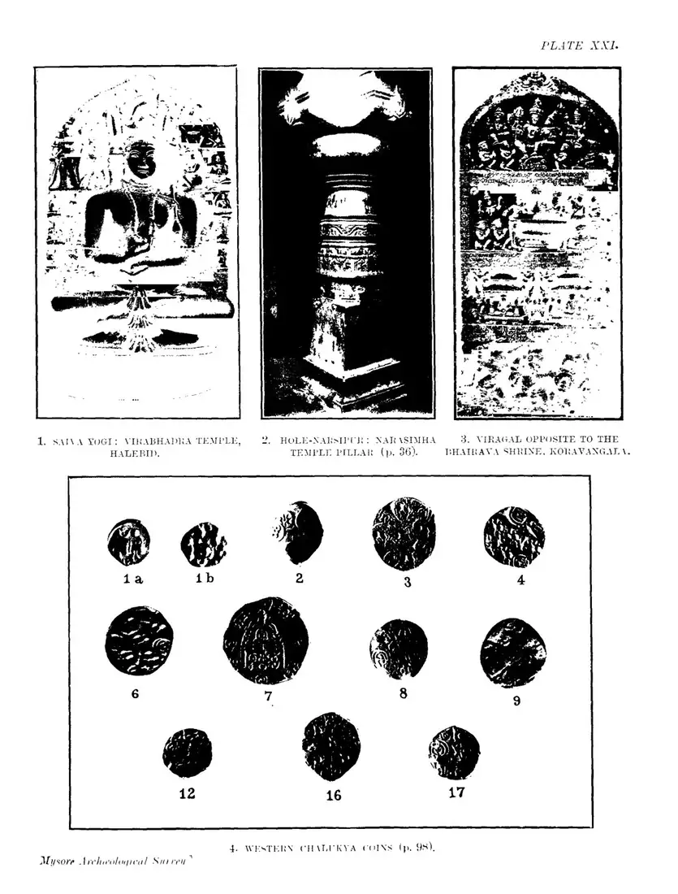
- SAIVA YOGI: VIRABHADRA TEMPLE, HALEBID
- HOLE-NARSIPUR: NARASIMHA TEMPLE PILLAR (p. 36)
- VIRAGAL OPPOSITE TO THE BHAIRAVA SHRINE, KORAVANGALA
- WESTERN CHALUKYA COINS (p. 98)
Cited in the text: p. 36 ↩
If early Chālukya, the date of the coin would be early eighth century. This date however, is unlikely.
Part III: NumismaticsKalyāṇi-Chālukya or Late Rāshṭrakāṭa
or
LATE RĀSHŹTRAKŪŹA.
Taila II ?—Punched Lions and ‘ Para ’
Type C:—Punched lions and ‘ Pa ra.’
3. Ai. Wt. 57·9 Fine.
Obverse :—Nine punch marks :
(1 & 5) Five finely maned lions to right with long ears, open mouths, looped up tails and left forepaw uplifted, as on Kadamba coins, with dotted circles around ;
(6 & 7) Two Śrī-s in Kannaḍa with a small cross on each indicating binding with wire ;
(8 & 9) Kannaḍa legend twice, of about the tenth century pa ra followed by an ornamental goad.
Reverse :—Blank.
Satyāśraya or Vikrama V ?—Punched Lions and ‘ Māṇa ’
or
VIKRAMA V?
Type D:—Punched lions and ‘ Ma na.’
4. Ai. 57·9 (another specimen : 57·2.)
Obverse :—Similar to 3, but lions ruder : no crosses on the Śrī—s and Kannaḍa legend twice : Māṇa .
No goad.
Reverse :—Blank.
Nos. 3 and 4 appear to belong to a distinct class by themselves. They are punch-marked like the Kadamba coins but the lions look forward. They have the Bādāmi Chālukya and the early Western Chālukya weight of 57-58 grains, and not the late West Chālukya of 53-54 grains. Their lions and punched legends indicate that they are copied by the Western Chālukyas Jagadēkamalla I and his successors. These features and the characters in the legend indicate that they originated in the tenth or eleventh century.
The legends on these two types are fragmentary and ambiguous though clear. Para may stand for Paramēśvara , a title assumed by the Rāshṭrakūṭas as well as by the Chālukyas. Māṇa may stand for Mānavya , the generic name assumed by the Chālukyas 1 . Or it may indicate the word Manyakheta , the capital of the Rāshṭrakūṭas; or their earlier capital Māna, which Fleet has indentified, doubtfully, with Manapur in Central India; or even the name of the traditional founder of the race by name Māna 2 . The lion crest raises a new problem. The Chālukya crest was the boar, and the later Rāshṭrakūṭa crest, Garuḍa or Śiva. But it would appear that the early Rāshṭrakūṭas of Māna had the lion crest 3 , which perhaps appeared on their imperial coins and was adopted by the Western Chālukyas.
No coins definitely of the Rāshṭrakūṭa Empire are yet known. Cunningham has attributed some silver coins of the Western Gupta fabric to the Rāshṭrakūṭas 4 . But it is more likely that the regular coins of the Rāshṭrakūṭas were similar to the known Kadamba and Chālukya coins, were punch-marked, weighed 57 grains and probably were of the lion type like them. These reasons make it possible that the coins described above are late Rāshṭrakūṭa, or early Kalyāni Chālukya imitations of the Rāshṭrakūṭa coins.
Hultzsch 5 reads the legend Māṇa as Malla and suggests that it is a part of the legend Trailōkyamalla . But the legend Māṇa is clear and the form of lla on the coin figured by Hultzsch is different from ṇa on the coins described here. Tentatively No. 3, may be assigned to Tailappa II or his son Satyāśraya and No. 4 to Satyāśraya or his successor, Vikramāditya V. Thus these and the following coins would make a continuous series of the Kalyāṇi Chālukya issues.
Yaśōvarma or Jayasimha I alius Jagadēkamalla
or
Lion and Spear Head
Temple; Lions and Kannaḍa Legend
No heading in the body: this section starts at its printed page (100).
JAYASIMHA I (alias) JAGADĒKAMALLA .
Type A :— Lion and Spear head.
5. Ai. '75. Wt. 57'8, metal good.
Obverse :—Five lions obliterated by four superior punch marks :—
(1 & 2) Kannaḍa śrī .
(3) Large spear head with dot below.
(4) Kannaḍa legend ya ja .
1 Fleet : Bombay Gaz. Vol. I, Part II, pp. 339, 402 and 428.
4 Rapson : Indian Coins.
5 Ind. Ant. 1896, p. 321.
Reverse :— Blank, with one small figure-less punch mark.
There was a Yaśōvarman alias Daśavarman who is mentioned in the Kauthem grant 1 as the brother of Satyāśraya. The weight of the coin is greater than the usual ones of Jagadēkamalla and nearer the weight of para coins, and the legend begins with ya . But the second letter ja brings in a doubt whether the legend is not reversed Ja ya (simha) a name by which Jagadēkamalla is known in many records. The spear head is also found on the latter's coins.
Type B:— Temple.
6. Ai. 1'0 Wt. 69 grains, large, thin and fine, good gold.
Obverse :— Nine punch marks : the central punch has a large temple with a domed tower supported by pillars and surmounted by Vishṇu's discus or Chakra. In front of the tower Kannaḍa letter śrī . Between pillars two line Kannaḍa. legend :
śrī Ja ga dē ka ma la
The eight smaller punches near the borders have alternately Kannaḍa śrī and the king's name in two lines as above.
Reverse :— Blank.
There can be little doubt that this specimen belongs to Jagadēkamalla I. The weight and temple type suggest that it was the prototype of the temple type attributed to the Telugu Chōlas. The weight shows the Vengi standard which is also seen on the East Chālukya coins to be about 66 to 67 grains.
Type C:— Lions and Kannada legend.
7. 57½ to 59 grains.
Obverse :— Nine punch marks :—
5 representing a lion.
2 the syllable śrī .
1 Ja ya
1 De va .
Reverse :— Blank
Hultzsch 2 describes this specimen and attributes it to Jayasimha.
8. '65 Wt. '57
Five lions, etc., similar to 5, with Kannaḍa legend :—
Ja ga dē
One specimen comes from Khāndēsh and another from Kōdūr in the Nellore district. This shows that No. 8 was the standard type of the reign and was widely
1 Fleet : Bombay Gaz. Vol. I, Part II, p. 434. All further references to Fleet are to this volume.
2 Ind. Ant., Vol. XXV, p. 322, No. 29. used in the larger and central part of his Empire. The Khāndēsh specimen has a blank reverse, while the Kōđūr one has four punch marks:—
1. Rude four-petalled lotus.
2. Similar, five-petalled.
3. An eye with pupil.
4. Uncertain.
The Kōđūr coin is interesting because of the reverse punch marks.
Part III: NumismaticsTrailōkyamalla Sōmēśvara I
Lions and Kannaḍa Legend. Spear Head and Nāgari Legend; no lions
Type A:— Lions and Kannada legend.
9. Similar to 8, with legends,
Trē ļō and Ma lla.
Hultzsch 1 figures one of 3 specimens and gives the weight as 58 grains.
Type B:— Spear head and Nagari legend. No lions.
10. Ai. 7. Wt. 57'6 (or 57).
Obverse:—Four punch marks only:—
1 & 2. Very highly conventionalised Kannađa śrī .
3. Spear head (or crown?) with dot (or dotted line) in the middle and four dots to its right standing perhaps for a lotus.
4. Nāgari legend:— śrī Ja ga dē va.
Reverse:—Blank. On the following coins, the reverse is described only when there is anything noteworthy.
Some specimens come from the Central Provinces. This fact, the extreme conventionalisation of Kannađa Śrī , the absence of the usual lions, and the similarity to the Yādava weight standard of 57 grs. indicate that this type was issued in the northern province of Jagadēkamalla's empire, where perhaps he was also called Jagadēva. Bhillama III Yādava, the king's sister's husband, was a Mahāsāmanta and governor of the northern province at this time 2 , which perhaps extended to the north and east of Khāndēsh.
Governor Hoysaḥa Vinavāditya
Sōmēśvara II; Bhuvanaikamalla
11. Ai. Wt. 58'2.
Similar. Five lions almost invisible, two Śrī-s and twice the Kannađa legend:
U ṇa ya
1 Ind. Ant., Vol. XXV, p. 317, etc.
2. Fleet: p. 436.
Lions Lotus and Goad
Prince Javasimha III; Governor of Tardavādi
No heading in the body: this section starts at its printed page (103).
A looped line of dots below legend.
Prince Vijayāditya, the fourth son of the king Trailōkyamalla, calls himself in the epigraphs Mahārāja and Vengi Maṇdalēsvara 1 . Vinayāditya of 680-696 A.D. is too early for this type. But the greatest probability is that this is a coin issued by the governor of Talkāđ and the Konkan, the Mahāmaṇdalēsvara Hoysaļa Vinayāditya, (1047-1100) as the weight corresponds to the 59 grains standard of the Talkāđ Gaṅga 'Gajapati' type. Vinayāditya probably had also the name Udayāditya which his youngest grandson inherited from him.
SOMESWARA II, BHUVANAIKAMALLA.
Type :— Lions, lotus and goad.
12. Ai. '65. Wt. 54 grains. From Kōđūr.
Obverse :—1-5 Four lotuses, one in each quarter and a fifth in the centre.
6-7 Two conventionalised Kannađa Śrī-s and
8 One sun and moon with goad between them
9 One punch mark with the Kannađa legend
Bhū va na for Bhuvanaikamalla.
The Mysore collection has a specimen with a goad in place of sun and moon (Sic) and Lions perhaps regardant.
13. Specimen in the Madras Museum :—
Obverse :—Similar, the central punch having elephant with sun and moon above.
The legends read : 'Ba va na'
Such specimens have been found at Koṇđavīđu.
On other specimens, there are other legends and different kinds of deities in the central punch like Muraļīdhara Krīshṇa. Perhaps these are the provincial issues of the Chālukyas.
During the days of Trailōkyamalla Sōmēsvara I, the empire became weaker and his sons enjoyed partial independence as evidenced by No. 11. Each of them had perhaps his own especial device which he put in the centre of his coin. Sōmēsvara II had, perhaps, the special device, the lotus, Jayasimha III, the boar, and Vikrama VI, the lion. The reign of Sōmēsvara II was further weakened by the rebellion of his brothers and his coins show much degeneration from the usual standard of art. The weight was also reduced from 57 grains to 54 grains. A new device, the elephant goad or Kunta-āyudha, was introduced perhaps because the king's mother was a Gaṅga princess. One of the revolting governors who helped Vikrama and Jayasimha was the Yādava Seunachandra, to whom as a subordinate of Jayasimha Chālukya, No. 2 probably belongs.
1 . Ibid p. 454.
Lotuses and Boar
Vikramāditya VI Peñmādi; Tribhuvanamalla
No heading in the body: this section starts at its printed page (104).
PRINCE JAYASIMHA III, GOVERNOR OF TARDAVĀDI.
Lions and Kannaḍa Legend
No heading in the body: this section starts at its printed page (104).
Type.— Lotuses and boar.
14. '65 Wt. 54'3 slightly concave.
Seven punch marks.
1-4 Four lotus flowers, one in each quarter.
5 Two Śrī-s.
6 Kannaḍa legend ga ja
7 Rude boar to left with sun, dagger and moon above.
Prince Jayasimha III had perhaps his grandfather's name Jagadēkamalla, the first two letters of which possibly appear reversed on the legend. The boar was perhaps his special crest while the lotuses were the symbols of his brother and king Sōmēśvara II. Jayasimha was governor or Tardavādi or Bijapur in 1064 and later under Vikrama he governed Banavāsi in 1076. The goad is absent perhaps because the prince's mother was different from Somesvara II's.
VIKRAMĀDITYA VI PERMAĐI.
TRIBHUVANAMALLA.
Type A.— Lions and Kannada legend.
15. Ai '65. Wt. 51 to 54'5.
Obverse :—1-5 Five lions.
6-7 Two Śrī-s.
8 One goad or Kunta between Sun and Moon.
9 One Kannaḍa legend :
Bhuja (Bhujabala)
The title 'Bhujabala' is found among numerous dynasties and kings, and it was the common title of all the West Chālukyas and the special name of Bijjala Kalachurya. The presence of the lions instead of the lotuses does not allow these coins to be attributed to Sōmēśvara II and the weight which is 54'5 or less makes them subsequent to 1068. The great number of the coins and the attempted restoration of better art indicates a long and prosperous reign which could be only that of Vikramāditya VI who reigned for 50 years. It is not known whether the title 'Bhujabala' had any special connection with 'Bhujabalasvāmi' or Gōmaṭēśvara of the Jains, whose colossal image is standing at Śravaṇa Beļagoļa in the Mysore State.
Part III: NumismaticsVikrama VI and Bruñōkamalla Sōmēśvara III
16. Ai .8. Wt. 53'4
Lions and Tamil Legend
No heading in the body: this section starts at its printed page (105).
Obverse :—Similar to No. 15, but legend Bhu ja ba in Kannađa, sometimes reversed.
The reduced weight indicates that towards the latter part of his long reign, Vikrama had financial difficulties perhaps due to his wars with the Chōlas whose capital Kañchi he took 1 . For some years, his brother Jayasimha III was crown prince or Yuvarāja and governed Banavāsi. After Jayasimha's death, the king's son Sōmēśvara III Bhūlōkamalla was crown prince. No. 16 would appear to belong to the period when this prince was practically regent for his father. The old king appears to have retired in 1126, and perhaps lived on till 1133 when he is mentioned in an epigraph 2 . However, the son kept up his father's era and name and it is difficult to decide by whom the coins weighing 53'4 grains were actually issued.
Type B:— Lions and Tamil legend.
17. Ai. 52'4 to 53'5.
Similar to 16, but Tamil legend : Bhu ja ba sometimes reversed. The goad is often absent.
One specimen from Kōdūr has one punch mark like a goad which remains to be explained.
After conquering Kañchi, Vikrama VI stayed for a time in the Tamil country. Number 17 was perhaps issued by him or by his son about this period.
Part III: NumismaticsJagadēkam alla II
Goad and Tamil Legend
No heading in the body: this section starts at its printed page (105).
Type A.—Goad and Tamil legend.
18. Ai. '65 Wt. 53'5. From Kōdūr.
Similar to 17, but lions unrecognizably conventionalised and obliterated. Tamil legend ' Bujaba '. The goad becomes almost an arrow.
19. Ai. '55 Wt. 52'8 (Presented to the British Museum by Elliot).
Nos. 18 and 19 are attributed to Sōmēśvara III with hesitation, as he probably, like his father, imitated Vikrama.
The Kōdūr finds 3 have a number of specimens which appear to be imitations of the issues of the Chālukya Emperors of Kalyāṇi by later dynasties. Some specimens of this kind have been figured on pl. XVIII of the Report of the Archæological Department, Hyderabad, for the year 1925-26.
1 . Fleet: p. 453
2 . Fleet: p. 447, note 1 .
3 . See report of the Kōlūr Finds by Krishna Sastri and the Third Oriental Conference Report, p. 269.
14
West Chālukya—Ruler uncertain
Taila III—Lions and Goad; No Legend
RULER UNCERTAIN.
20. Ai. base. '9 Wt. 53'5 grs. cup-shaped 1 .
Obverse :—9 punch marks.
1-4 Conventionalised Śr.
5-8 Solar mark.
9 In centre Hanumān moving to right with right hand and tail lifted.
Reverse :—Blank.
The specimen is perhaps of some Kadamba feudatory of the West Chālukyas. The weight indicates the time of Vikramāditya VI.
TAILA III.
Type :— Lions and Goad. No legend.
21. Ai. '65. Wt. 52'4. From the Satara District.
Similar to 16, but no lions and no legend. The goad is almost an arrow. Bijjaļa Kalachurya rose to power under Perma Jagadēkamalla II and set aside Taila III in 1156. These nameless coins were perhaps issued when he was actually in power and the kings were powerless to proclaim their own names on the coins.
In 1156 Trailōkyamalla Nūrmađi Taila III retired to Banavāsi leaving Bijjaļa in possession of the capital. His son Tribhuvanamalla Vira Sōmēšvara IV had little real power as the Kalachuryas were the real rulers over the Dakhan.
1 Smith I : M. C. Pl. XXX, No. 4.
Part IV: Manuscripts
A Note on Padmapurāpada-Tiku by Chikupādhyāya
Description; Author; Contents
Padmapurâṇada-tĵku is a palmleaf manuscript consisting of 212 leaves (length 11 inches, breadth 2", thickness 3") written in modern Kannada characters of the 19th century. It was found in the possession of Mr. M. S. Ramaswami Iyengar, a Śrīvaishnava Brahman of the Village Muttagere in Dudda Hobli, Mandya Taluk, Mysore District. The manuscript is incomplete as it stops after the story of Râmâyaṇa in page 213. It has now been acquired by the Mysore Government Oriental Library.
Author. The author of the work is Chikupâdhyâya, a Brahman of the Śrīvaishnava sect, who flourished in the court of the king of Mysore named Chikka Dêva Râja Odeyar (1672-1704). He calls himself a mantri or minister of that king and refers to him in the beginning of the work. 1
He has invoked Râmânuja, the founder of the Viśishṭâdvaita school of philosophy, at the beginning of his work and in some other pages (pp. 2,136.) He has also invoked Vêdântaguru who is the same as Venkaṭanâtha, the Śrīvaishnava author of Sarvârthasiddhi and other philosophical works (p. 2). Further two gurus Kadâmbi Singlâchârya and Kadâmbi Lakshmana Dêsikâchârya are invoked by him in pp. 136 and 159 respectively. These were two teachers of the Śrīvaishnava sect. They are invoked by this author in his other works also. Chikupâdhyâya was also the author of several works in Kannada prose and poetry like Amarukaśataka, Kamalâchalamâhâtmya, Vishṇupurâṇa and Śukasaptati 2 . He is believed to be a Śrīvaishnava Brahman of the Hebbâr sect.
The work purports to be an abridgment in Kannada of the famous Sanskrit Purâṇa named Padmapurâṇa. The author has made only a selection from the work dealing mainly with episodes describing the dharma or duties of the Vaishṇava sect. Contents. A great portion of the ms. (pp. 1-77) is taken up with the stories extolling the importance of bathing in the sacred place Prayâga in the month Mâgha (January-February). Another portion of the work (pp. 117-212) deals with the stories of the
1. ಶ್ರೀ ನಾರೀ ಕುಚಕುಂಭ ಕುಂಕುಮ ರಜಃ ಪಂಕಾಂಕ ತೊಳರು ಸ್ವಳ...ನಂದ ಸಂದಾಯಕಂ ದೀನಾ ಭೀಷ್ಮ ಫಲ ಪ್ರದಂಕರುಣದಿಂ ಶ್ರೀ ರಂಗಧಾಮೇಶ್ವರಂ ಕಾರುಣ್ಯಂ ದಳೆವುತೆ ರಕ್ಷಿಸು ಗಜಸ್ಯಂ ಚಿಕ್ಕದೇವೇಂದ್ರನಂ|| ಪದ್ಮಾರಮುಣೇ ಸ್ತುತಿ ಹೃತ್ಪದ್ಮಂ ಚಿಕದೇವ ಮಂತ್ರಿ ಚಿಕುವಾಧಕ್ಕಿಯಂ ಪದ್ಮ ಪುರಾಣದ ಚೀಕಂ| ಪದ್ಮಾಕ್ಷನ ನುತಿನಿ ಕನ್ನಡದೆ ಎರಚಿನಿದಂ|
2. (See Kavicharite by Rao Bahadur R. Narasimhachar, Part II, p. 467, for the other works of Chikupâdhyâya and his true name Lakshmīpati, his lineage, etc.)' several incarnations of Vishnu. Interspersed between them are found various topics dealt with which are sacred to the Vaishṇavas such as the importance of Sâlagrâma (p. 23), fasting on Ekâdaśi (p. 23), branding with the marks of discus and conch (p. 88), wearing of ûrdhvapuṇḍra (vertical marks on the forehead) by the Vaishṇavas (pp. 89, 91-3), the importance of the repetition of certain mantras (dvayamantra, ashṭâkshari-mantra) and forbidding of performance of śrâddha on Êkâdaśi days (129-130).
Following the Padmapurâṇa (Anandasrama edition) in Sanskrit, the writer explains the origin of Śaiva works as due to Śiva who created such works to deceive Namuchi and other giants (asuras) who performed tapas and drove away Indra from heaven (pp. 131-2).
At the same time the author is not quite a bigoted Śrívaishṇava. In page 18, he praises the benefits accruing from the worship of Śiva either in the form of a crystal linga or earthen linga and says that people who repeated the sacred formula of Panchâkshari (Namaś śivâya) will never go to hell but remain in the world of Śiva (18) but no one should hate Vishnu (p. 19)
The work is incomplete and stops in the middle of the story of Vishnu's incarnation as Râma (p. 213).
No date is given in the work to show when it was composed. It was probably written somewhere near 1691 when Vishnupurâṇa was translated (in an abridged form) by the author. 1
1 Kavicharite, Part II, p. 468
Footnotes
p. 35 1 For a similar Hoysala temple see Cousens.
p. 98 1 E. C. S. I. plate I, 22 and 23. Elliot identifies the symbol on the reverse as representing the wheel ( Chakra ).
p. 100 2 Ibid p. 386.
p. 100 3 Ibid.
All plates (20)
Click a plate to go to its place in the text; each plate there has links to the previous and next plate and back to this list.